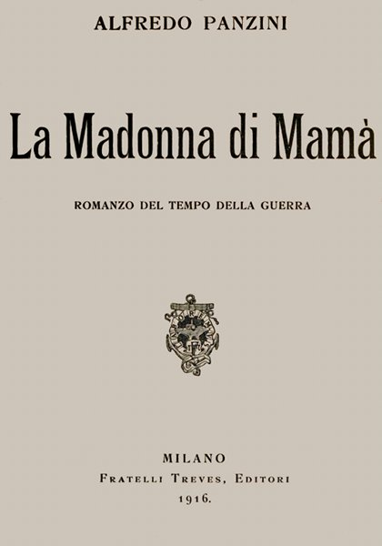

| Note: | Images of the original pages are available through Internet Archive. See https://archive.org/details/lamadonnadimam00panzuoft |

ALFREDO PANZINI
ROMANZO DEL TEMPO DELLA GUERRA
MILANO
Fratelli Treves, Editori
1916.
PROPRIETÃ LETTERARIA.
I diritti di riproduzione e di traduzione sono riservati per tutti i paesi, compresi la Svezia, la Norvegia e l'Olanda.
Copyright by Fratelli Treves, 1916.
Si riterrà contraffatto qualunque esemplare di quest'opera che non porti il timbro a secco della Società Italiana degli Autori.
Milano â Tip. Treves.
Noi ci conoscemmo di persona, la prima volta, a Bellà ria. «Lei chi è?» domandai. Io stavo sdraiato all'ombra di quella mia disgraziata casa, quando, riscosso ai lievi passi sull'erba, domandai:
«Lei chi è?»
«Io sono Renato Serra».
E allora guardai. Diritto, luminoso, puro: coi sà ndali ai piedi nudi come di peregrino. Non mai il mattino d'estate, il mare in pace, il canto grande delle cicale mi parvero circondare più nobile creatura giovane. Tu, o Renato, sorridevi a me di un indefinibile sorriso, ove era insieme timidezza e ironia.
E mi ricordo che, nei frequenti colloqui di poi, lungo la riva del mare, io ti rimproveravo [vi] di consumare la giovinezza in quell'oscura tua città di Cesena; e tu pur sorridevi.... Ora ripenso a quei colloqui lontani, alle tue parole; le quali certamente erano singolari per un giovane, ma più che per sè, erano singolari perchè spazìavano in un'atmosfera meravigliosa di elevazione.
E più che le parole, ho in mente la tua figura forte e il tuo passo andante lungo la riva del mare: le onde azzurre si venivano umilmente a smorzare su le arene, come ricamandoti innanzi la via; e i grandi corpi delle donne, distese su la sabbia, entro gli accappatoi, volgevano verso di noi gli occhi indolenti.
«Perchè andare così in fretta, Renato? Perchè non stà rcene così indolenti anche noi al sole e spremere qualche grappolo che la fresca vite pur matura agli uomini?»
Oh, tu eri ben avviato a piè scalzo, Renato Serra! tu ben camminavi espedito ben fuori della tua oscura città , gettando via ogni mondano impedimento. Tu eri avviato verso una immota verità , tu camminavi verso la morte.
Certamente, o Renato, tu, colpito nelle tempie da palla austriaca sul monte Podgora, il 20 luglio 1915, sei fra i grandi morti [vii] per la Patria, ma più specialmente tu a me appari morto per non so quale alta predestinazione.
Ora, quest'agosto, a Bellà ria, aprivo la finestra prima che si levasse il sole.
La finestra dà sul mare verso l'oriente: tutto il ricamo delle stelle ardeva ancora; poi quella luce azzurrina schiariva; poi la palpèbra del sole si apriva. Un'ebbrezza sino alle lagrime: e su le acque, senza più vele, mi pareva di vedere la nave dei liberati dalla servitù dell'Egitto. Un mio piccolo fanciullo, che già tempo sollazzava su questa spiaggia, era con te, o Renato; la cara madre mia era con te in quella nave. E non sentivo tristezza per i morti, nè inerzia. Avevo l'impressione di essere come il fringuello cieco, che pur disperatamente canta.
In quei mattini d'estate fu proseguito questo romanzo senza pensiero di letteratura e mi pareva di fartene lettura di qualche passo, come era intervenuto altre volte quando tu eri in vita. Così durava l'incanto finchè il sole mi investiva tutto sul capezzale, e la voce degli uomini allora si destava: e spesso si inquadrava nella finestra a terreno la pescivèndola bellariese. Una bella ragazza [viii] in verità : scalza e pomposa giovinetta, che vestiva tricolore! Bernuss rosso di velo, alitante su le carni, un velo verde in testa e un gonnellino bianco: Vol e' pess?
Così si è formato questo libro. Libro, nato di me solo e non di donna, nato con dolore: porta il bel nome di lui, e con lui il nome degli altri, morti per difendere la umana Pietà , morti per la più vera Verità , per la più pura Bellezza della vita, cioè per la patria più grande, per la conquista di più giusto impero.
A. P.
LA MADONNA DI MAMÃ
I calzoni di Aquilino erano corti per quelle gambe che si facevano ogni anno più lunghe; ma quella sera riserbavano al giovinetto una piacevole sorpresa, perchè sentì alcunchè di solido dentro una tasca. E non era la medaglia della Madonna, che mamà gli cuciva tra gli abiti: non era un baiocco del papa, ma una moneta con l'effige del re.
Nel cielo splendeva la luna piena d'agosto; sulla terra la gente andava in processione a respirare la frescura del mare, e sentire la banda.
Aquilino, trovata che ebbe la moneta, si fermò. Lì, presso la barriera, c'era un venditore di angurie. Le spaccava con la coltella e, al lume di una candela, esponeva quella roridezza di fiamma.
[2] â Angurie dai semi mondi â vociava l'omaccione: â si mangia e si beve.
Aquilino stette un po' considerando se era cosa più saggia comperare con quel denaro una misura di brustolini, o forse anche entrare arditamente nel caffè dei signori e comperare un'offella: cose nutrienti e solide. Ma vinse l'anguria, benchè acquosa.
Che bontà , ma come sottile quella fetta! E stava intagliando sulla scorza gli ultimi vestigi del rosso, quando il venditore gli si appressò, e gli portò una nuova fetta, grande quasi un quarto di anguria.
â Ma questo cos'è?
â C'è quel signore che gliela paga.
Il giovinetto si accorse allora che, un poco discosto da lui, sedeva un signore che mangiava anche lui l'anguria.
Sorrideva, e faceva cenno di «no»!
Era proprio un signore! con una bella barba e due occhi dolci e luminosi: ma una faccia forestiera; di quei foresti che vengono pei bagni di mare: anche perchè un signore della sua città mai si sarebbe seduto sotto una frasca a mangiare angurie.
â Mangi senza scrùpolo la sua cocòmera â disse la voce di quel signore â, io non [3] c'entro. à quest'onesto cocomeraio che è stato preso da un violento accesso di rimorso per la fetta troppo sottile che le ha dato. à vero, signor cocomeraio?
Quel signore parlava a sbalzi, a sfumature, con un certo accento che Aquilino non avrebbe saputo ben definire di qual paese, ma non era la gorgia melliflua e cascante dei signori della sua città : oh, un forastiero.
â Sai? â disse poi confidenzialmente â non te ne avere a male; ma mi è parso che tu stavi facendo come dicono a Napoli: si mangia, si beve e si lava la faccia.
â La faccia me la lavo con l'acqua tutte le mattine.
â Oh, guarda! E allora prendi....
E così dicendo, gli diede una manciatella di confetti, di cioccolatini, di quelli ravvolti nella stagnola d'oro e d'argento. Gli sonavano nelle tasche. Aquilino si voleva schermire, ma fu vano.
â E adesso te ne vai anche tu al mare, a sentire la banda, eh?
â à un po' tardi oramai, signore, e mamà non va a letto se prima non vado a casa io.
â Ma tu sei l'araba fenice dei figliuoli. Lavori anche?
â Oh, guarda! e cosa studi?
â Il liceo, signore!
â Il liceo? â E colui corrugò le ciglia.
â Il liceo, sì: oh bella! Perchè mi guarda così?
E parve ad Aquilino che gli occhi di quell'incognito lo fissassero stranamente. Ma fu un attimo. Attinse dalle tasche altre manciate di confetti, e a forza li insinuò nelle tasche di Aquilino. â Così ne porti anche alla mamma che aspetta, vero? Oh, puoi accettare senza scrupoli. Io sono il padrone delle cose dolci: io vivo sempre in mezzo alle cose dolci.
â Cosa?
â Sono un dolciere. Vai, vai!
Aquilino si destò il dì seguente col bel sole d'estate e con una vaghezza nel cuore di incontrare nella luce del giorno quel così dolce signore.
â Che buoni confetti, quelli col rosòlio dentro, e le mandorle toste!
â Non sono certo quelli del droghiere, â confermava la mamma, â che c'è più gesso che zucchero; e con quei numeri del lotto, che poi non vengono mai.
Che mattino gioioso! C'erano lì, nella stanzetta, tutti i libri della scuola: un po' in vacanza anche loro. E i libri di scuola riposavano, un po' perchè era il mese delle vacanze; e un po' anche perchè, da qualche tempo, fra il giovinetto ed i libri di scuola si interponevano gli à ngioli della terra.
*
Aquilino era oramai entrato in quella beata costellazione dello zodìaco della sua esistenza, in cui davanti agli occhi meravigliati appaiono figure con l'aurèola d'oro in testa, come gli à ngioli che i pittori di una volta dipingevano. Erano teste chiomate di giovanette. Oh, quante! Oh, come belle! Con gli occhioni pietosi o sorridenti su di lui. Oh, come pure! perchè, dopo la testa chiomata, non appariva allora che un manto che ventilava, come appunto negli à ngioli degli antichi pittori. Spesso la stanza era piena di queste testoline.
Provava una dolcezza di sogno; e tutt'al più â ogni tanto â qualche fremito strano nelle maschili membra; del quale fremito non trovava allora la relazione con tutti quegli à ngioli così puri; e insieme col fremito, una gran distrazione. E bisognava proprio che fosse un bravo figliuolo per non abbandonare interamente i suoi libri di latino, di greco, di matematica, che erano proprio niente in confronto degli à ngioli.
*
Aquilino uscì, dunque, di casa e non ebbe molto a girare che trovò quel signore, sotto il tendone del caffè dei signori, che sorbiva una granita. Gli stette un po' davanti, ma non osava accostarsi. Lo riconobbe lui: â Sei tu quel signorino â gli disse â che faceva, ier sera, all'amore con la cocòmera?
Ad Aquilino pareva di dover dire tante parole di riconoscenza; e invece rimase lì un po' oca mùtola. Il cuore lo spingeva bensì verso colui, ma ora la luce del giorno metteva in rilievo troppa differenza fra quel signore e lui. Non che quel signore vestisse con sfarzo, anzi vestiva un semplice à bito grigio scuro: ma c'era un non so che di troppo fine; come di vellutato, di profumato, che formava una gran distanza fra loro due.
â Prendi, bimbo, un rinfrescativo per bocca? â gli bisbigliò. E ordinò una granita.
Proprio in quel momento transitava lì, davanti al caffè, il vecchio conte Biancolini, uno dei maggiorenti più autoritarî della città . Il quale conte certamente, in mezzo alla gran barba grigia, aveva una bocca: [8] ma Aquilino mai la aveva veduta aperta al sorriso.
Ebbene, in quel mattino, ne vide la bocca sorridente e ne udì anche la voce, perchè quel personaggio così autorevole, appena ebbe veduto l'amico di Aquilino, sorrise; e insieme sventolò la destra in atto di saluto e con voce del tutto amichevole, lasciò cadere queste parole: â Buon giorno, buon giorno, caro Còsimo. â E passò oltre.
â Lei è amico di quello lì? â domandò Aquilino.
â Zitto! Sono il suo maggiordomo. Non ci credi? Ma tu che hai visto, bimbo? hai visto la versiera? il bau-bau?
â à quello lì â disse Aquilino con un trèmito di odio â che quando (voleva dire «mamà » ma si rattenne): che quando abbiamo fatto l'istanza al Comune per un sussidio per poter continuare il liceo, ha risposto che non c'erano fondi; ma che se anche ci fossero stati, era tempo di finirla con la poverà glia che vuol studiare.
â Sai? à un po' ancien régime....
â Lo so però io cosa mi costa l'ancien régime! Se non era, del resto, per mamà , li avrei già piantati gli studi. Noti che il sussidio [9] c'era, e l'han dato a un altro che era della cricca, e valeva meno di me. Oh, ma verrà la rivoluzione....
Ma capì subito la sconvenienza di quella parola rivoluzione, che gli era rigurgitata dal cuore. Anche quel signore aveva un po' il profumo di ancien régime.
Ma quel signore non si scompose. â Fai, fai pure! Io come t'ho detto, sono un maggiordomo, e sai? Tutti i camerieri sono partitanti della rivoluzione.
*
Aquilino incontrò anche nei dì seguenti quel signore, e si diè ad osservarlo. Vide che, contrariamente a quella sua gaiezza, se ne stava un po' appartato dalla gente mondana, come suol fare una persona melancònica. Chi poteva essere? Certo una persona di molto riguardo, perchè altrimenti il conte Biancolini non lo avrebbe trattato così; ed anche altri signori aristocratici lo salutavano con segni di amicizia e rispetto. E quando lo vedeva ben solo, Aquilino faceva a modo del cane smarrito e senza padrone verso l'uomo [10] che ha usato l'imprudenza di buttargli da mangiare, o gli ha fatto una carezza.
â Ã un poco triste, mi pare, signore! â diceva accostandosi â Che ha?
â No caro, triste; sto rosicchiando dei peeck-frean. Ne vuoi? â E gliene dava.
E così il cagnolino, invece di andar ramingo per la sua via, si accostava sempre di più.
Aquilino avrebbe parlato così volentieri di argomenti serî; e lui invece faceva bizzarri discorsi su argomenti vuoti. â Conosci come è fatta la specialità inglese dei peeck-frean? A Napoli li fanno anche e buoni, e li chiamano tarallucci.
â Sai? Sta attento, bimbo â gli disse una volta, â non ti accostare troppo a me. Io sono una spia segreta dello czar.
E Aquilino non capì, cioè il cagnolino non si smarrì.
Ma una sera dovette capire.
Una sera che c'era la banda al mare, Aquilino era in istato di ebbrezza: profumi di tuberose e gardènie; mare azzurro; e tutte quelle testoline di à ngioli, bionde o brune! Il sole tramontando fra incredìbili fulgori estivi, aveva parlato a lui, il sole! alla sua anima giovane per misteriosi segni: «Tu sorgi [11] alla vita, Aquilino!» Poi, dall'altra parte del cielo, era apparsa la luna, ed anch'essa gli aveva parlato, e l'anima di lui si era gonfiata e tremava come le acque inargentate del mare si gonfiano e treman d'amore verso il bel pianeta. E la banda in mezzo al gran popolo suonava, per i clarini e le trombe; ma ad Aquilino pareva una di quelle musiche eroiche che intònano agli uomini l'assalto verso non so quale sublime conquista.
Ma sopra la marmorea terrazza del casino rifulgeva come un olimpo di signore e signori.
Nessun impedimento fra quell'olimpo ed il popolo basso, fuor che una scalea. Ed Aquilino, smarrito, sentiva il bisbiglio del popolo, vedeva gli occhi delle donne, dal basso, rivolti verso lassù: «Quella è la tale; quello dicono che è il suo amante; senti quella come ride! Che brillanti! Buscherata, che brillanti! Quella è tutta dipinta. Adesso usa. Se ridessimo noi così!»
Ma quell'olimpo pareva come ignorare la esistenza di quel pavimento di popolo.
Anche Aquilino stava a guardare lassù. Egli vedeva vivi, di carne, i deliziosi suoi à ngioli. Ce ne erano tante lassù di giovinette; e avevano anche il corpo. Oh, come bello!
[12] Oh, i flessuosi corpi, oh, i leggiadri inchini delle teste chiomate! Ma a chi, in quel circolo, quelle giovinette si inchinavano? A chi, come preso e sorpreso, tutti facevano onore? A lui, al suo amico, al bel signore, che gli aveva regalato i confetti e la cocòmera rossa. Parevano tutti come festeggiarlo. E c'era fra quei signori il conte Biancolini, e c'era quel melenso del suo figliuolo, il quale pur gli era debitore, giacchè i compiti di greco (sia pur con qualche compenso), glieli passava lui.
Come una siccità era nella gola di Aquilino e un martellare nel cuore.
Evvia, che una scalea non è insuperabile barriera per chi ha avuto un richiamo dal sole e dalla luna! E se quei signori sono nobili, tu che sei in rapporti con i lucumoni, con gli arconti, coi cesari antichi, sei pur nobile! Perchè ardire e franchezza non hai, come dice Dante?
â Dopo tutto â pensò â vado a fare un salutino a quel signore, mio amico; e a dire ciao! a un compagno di scuola.
E varcò quella frontiera.
E poi? Che cosa era successo poi? Quanto tempo era passato lassù?
Egli si ritrovò ancora giù fra il popolo basso.
[13] Il compagno di scuola aveva arrossito nel riconoscerlo.
E lui, l'amico, che cosa aveva detto?
Aimè! non aveva detto: signorine e signori, io vi presento questo bravo, buono e istruito giovine. Ma con certe sue mosse, aveva bisbigliato: â Guarda, guarda laggiù che ti chiamano.
E il conte Biancolini gli aveva detto:
â Sì, carino, poverino, buona sera.
Quasi gli faceva la limòsina!
Ed egli aveva rifatto quegli scalini, scendendo con la testa in giù, quasi barcollante.
Era stato respinto. Senza che si fossero mossi, tutti lo avevano respinto. Lo avevano appena guardato, e con lo sguardo lo avevan respinto.
Si ritrovava ancora giù tra il popolo basso. Ebbe la fallace sensazione che tutti gli occhi del popolo basso se ne fossero accorti. Oh, vergogna!
Sentiva un fischiare atroce agli orecchi: quell'orrenda parola: Poverino! Guardò i suoi calzoni e li vide. Ah, i miserabili calzoni!
L'estate di poi, quando Aquilino prese la sua bella licenza liceale con tanti bei punti, ci si sarebbe dovuto mettere anche il nome della mamma sua, perchè è vero che Aquilino studiò; e con Cicerone e con Orazio parlava quasi a tu per tu di tutte quelle cose sublimi; ma tutte quelle umili parsimonie, quelle minestrine col battuto, coi ceci, e tutte quelle maglie e giubboncini pel mercante, a furia di tic e tac coi ferri da calza, li aveva fatti pur lei!
Ed era perchè tutte queste necessità domandavano la preminenza che i calzoni di Aquilino eran rimasti corti e sgraziati tuttavia.
â Ah, i tempi â diceva talora Aquilino â i tempi, mammina, che era vivo il povero babbo, e portava dalla campagna, e uova, e [15] formaggi, e polli! Vedi un po', mammina, se c'è più uno di quelli che tu allora sfamavi, che adesso ti venga almeno a trovare!
E voleva far capire a mamà che quando in casa c'era l'abbondanza, e lei fosse stata meno caritatevole, non si sarebbe, adesso, lesinato così.
â A te ti manca niente? â gli rispondeva la mamma. â No, e allora? Di quello che faccio, so io a chi devo render conto. Caro mio, se dovessimo tutti ragionare come ragioni tu, vedresti che bel mondo!
Su questo punto era inutile discutere con mamà .
*
Aquilino si rifaceva un po' la domenica quando era invitato a pranzo da una sua zia paterna, di nome Maria Anna, la quale era rimasta zitella e sola. Ella era una donnina un pochino povera di mente e più povera di membra. Parsimoniosa sino allo scrùpolo, era riuscita a vivere con una sua piccola dote: e voleva assai bene, a suo modo, ad Aquilino. «Domenica, Aquilino â diceva â verrai a pranzo da me»; e faceva la spesa grossa in quel dì, come a dire una libbra di [16] carne; e la minestra di passatini, e gli spinacci con l'uva passa e i pinòli, e talvolta anche la zuppa inglese. E col lesso, traeva anche un prezioso vasetto di carciofini.
Aquilino mangiava e lodava; ma assai più si lodava da sè la zietta. «Il brodino vero, vedi, deve bollire adagino, adagino con il suo sèdano e le sue erbucce; gli spinacci devono covare, covare nella teglia; e la crema senza farina non la sanno far tutti. Vostra madre, già , non ci riesce. Lei è tutta un fru-fru quando fa da mangiare. Già , vostra madre, una superba, una sprecona, che se avesse saputo metter da parte, adesso non si troverebbe a dover lavorare per gli altri, e lavora anche la domenica!»
Questo era lo scotto del desinare; ma poi c'era dell'altro: «Siete andato a Messa, Aquilino? Già vostra madre è libera pensatrice! E perchè leggi, Aquilino mio, tutti quei libracci, e Dumà e Sù? non sai che sono proibiti e conducono a perdizione la gioventù?»
Aquilino protestava per Dumà e Sù.
â Ma sì, che ti vedono in libreria, e me l'hanno detto: quel vostro nipote si guasta la testa! Ha certe idee. Vostra madre vi lascia troppo la briglia sul collo.
[17] Povera Maria Anna! Da quando aveva dato retta ad alcuni uomini neri, che le fecero togliere quei suoi soldi dalla cassa di risparmio per metterli in ipoteca, che così invece del quattro avrebbe lucrato il sette per cento, la sua pace fu perduta, perchè non vedeva più nè il quattro nè il sette. Quegli uomini neri la accontentavano con facezie: «che bella cera avete, Maria Anna! Beata voi, Maria Anna, che quando avete pensato all'anima vostra, avete pensato a tutto. Ah, quei soldi? Sì, ripassate domani». E le davano il suo a spizzico, come un'elemosina.
*
Aquilino in quei tempi passava â è vero â molto tempo in libreria â come avevano riferito alla zietta, â ma non a leggere Dumà e Sù, bensì a leggere certi autorevoli libri, non antichi e sempliciotti, ma moderni e complicati, che parlavano della catà rsi o palingènesi, o purificazione, o rinnovazione del mondo, prossima da venire. La verità era già in cammino, trainata dalla potente locomotiva della scienza. Sarebbe arrivata alle calende di un maggio luminoso.
[18] Del che erano dispute fra lui, altri giovani e il vecchio bibliotecario, il quale era dabbene e paziente con quei ragazzi, ma troppo antiquario oramai.
Ma intanto che si aspettava il giorno della purificazione, quegli uomini neri rubavano alla povera zietta; e il suo professore di matematica si era mostrato senza pietà . Quanto lo aveva Aquilino supplicato di mutare il sei in un nove per ottenere l'esonero dalle tasse! «Quel rampino del sei, sia buono, lo volti in giù, professore....»
Irremovibile come il suo virginia sul grosso faccione!
«Ah, farti mangiare tanti fagioli quanti se ne mangiavano in casa!»
E quando vedeva mamà lavorare anche fin tardi, gli veniva su un non so che! E cominciava a dubitare se era bene che tutti gli uomini dovessero godere dei benefici della purificazione del mondo.
Ma più lo tormentava vedere quella povera zietta, che non stava più in piedi oramai, e andare e tornare, con quel suo velo nero in testa, per le vie lunghe, da quegli uomini neri a limosinare il suo....
«Aquilino â diceva la zietta â stanotte [19] non ho potuto dormire. Son sola sola! Loro m'han detto che adesso i tempi sono difficili per le ipoteche, e che se voglio vivere più sicura, dovrei far vitalizio. Faccio bene? faccio male a far vitalizio? Aquilino! M'han detto che a quelli che fan vitalizio, dà nno poi l'acquetta per farli morir prima. Oh, Aquilino, aiutami tu!»
E a quella parola morire, alla povera zietta si era deformata la bocca in giù per la paura.
E Aquilino allora si era fatto forza: aveva imposto, sopra la sua giovinezza, l'armatura del dovere, ed era andato lui nello studio di quelli uomini neri, e come uomo aveva osato parlare. «Poverino! â gli avevan detto â ma che ne capite voi di ipoteche?» E lui dicendo che voleva i soldi, gli avevano detto che lui voleva i soldi della zietta per farne bisbòccia, e che essi pagavano chi dovevano pagare, e che le sue erano tutte esaltazioni di una testa calda.
Era uscito da quello studio con le fiamme sul volto e aveva sùbito pensato di rivolgersi alla legge. Ma dove, ma come si prende la legge? La legge era tutta in mano degli uomini neri, in quella sua città ! E dopo, gli venne una rabbia contro la legge, e contro [20] i Romani che, per quanto ne sapeva, avevano creato essi le leggi. Ed essere stato trattato così da poverino, da ragazzo, lui, che nei libri si trovava in rapporti di intimità con tanti uomini grandi! Gli venne una bile che stava per scaraventare a terra i suoi libri latini.
Finalmente andò a sfogarsi con mamà . Nella camera dove mamà lavorava, c'era entro una cornice vecchia di legno, dal contorno barocco, quell'imagine di una Madonna, con un profilo bianco, sur un fondo scuro, inclìne e dolce sul pargoletto lattante. Mamà ci teneva acceso davanti il lumino col miglior olio d'oliva, e alcuni fiori ed erbe odorose.
Aquilino andava su e giù per la stanza e raccontava le nequizie degli uomini neri.
â E lasciali fare â disse lei senza commuoversi troppo.
â Ma è un'iniquità !
â E se è un'iniquità ? Saran loro che dovran render conto; non tu.
«Già a quella lì! â borbottava Aquilino â Alla Madonna col pupo renderan conto! Eh, povera mamma! Sai quanto faresti meglio a condir di più la minestra con quell'olio.» â E appunto perchè gli voglio far [21] render conto, â disse forte â ; perchè, dopo tutto, quei quattro soldi della zia dovrebbero venire a me....
â Vedi? Vedi che c'è sempre dell'egoismo nel fondo del tuo pensiero? Lascia che se li prenda chi vuole quei maledetti soldi. La tua strada te la farai da per te. Ringrazia piuttosto la Madonna che ti ha dato la salute....
â Già , la Madonna!
â Quella proprio! â e mamà volge il bianco degli occhi, severi, verso Aquilino.
*
Aquilino poi, di nascosto di mamà , si era rivolto a Don Malfattini, il quale era almeno un autentico uomo nero, perchè portava un tricorno di felpa e non unto, un mantello di seta svolazzante sino alle scarpe, e le scarpe con le fibbie d'argento. Era un pretino occhialuto, fino come la polvere, raso come la seta, soave come il miele, che si aggirava con ugual sveltezza tanto tra i banchi delle Banche, come fra gli altari e i tabernà coli. Grande dovizia egli aveva accumulato con una sua ingegnosa combinazione finanziaria per alleviare le pene dei poveri morti che stanno nel purgatorio. [22] Così che Don Malfattini aveva potuto indorare tutte le Madonne ed i Santi della sua chiesa, fare molte opere di beneficenza ai vivi, ed essere à rbitro delle elezioni nella città .
Non fu facile per Aquilino afferrare Don Malfattini; egli svolazzava sempre di qua e di là in mille faccende; ma a furia di pazienza, potè afferrarlo per cinque minuti di udienza. Senonchè quando si trovò davanti a quei due lanternoni di occhiali e udì quella voce secca, gli cadde il cuore. Un uomo in partecipazione di affari con Domineddio, avrebbe dovuto possedere una meno arida voce e far segni pietosi col volto, udendo le premesse che fece Aquilino, cioè la devozione di mamà per la Madonna, l'olio d'oliva, i fiori, ed altre delicatezze della pietà e della miseria.
â Già â rispose Don Malfattini. â Ma ci troviamo, signor mio, di fronte ad una pregiudiziale: la di lei riverita madre, nostra parrocchiana e degnissima persona, gode intanto di una pensioncina di cinquantadue lire dal Comune; ella, poi, è studente, cioè in condizione privilegiata e in bella salute, del che mi compiaccio. Ora le nostre instituzioni benefiche sono rivolte a speciali categorie di persone, come liberati dal carcere, fanciulle [23] sviate dal retto sentiero, piccoli malviventi, deformi....
E numerando queste categorie, Don Malfattini si ritraeva col volto, restringendo le labbra come un vecchio gatto a cui si minacciano buffetti sul naso, e parea dire: «Dolente, ma come vede, ella non è compresa in nessuna di queste categorie!»
Aquilino, benchè con la gola secca, si ingegnò di far capire che egli, in tal caso, era in condizioni di inferiorità rispetto ad un liberato dal carcere, ad un malvivente. Del resto lui non veniva per elemosine, ma per un prèstito. Gli speculatori fabbricano pur le case, e vanno su ipotecando piano per piano! Ora che un giovane per bene offrisse meno di sicurtà che una casa di pietre?
Audace e ingegnoso il giovincello! E Don Malfattini battendo allora le labbra a modo dei pà peri, «Eh, eh!» esclamò come approvando: â «Ma bisogna che mi informi, che prenda le mie referenze, il mio caro figliuolo â disse â .... Ripassi, eh sì, ripassi!»
Ed Aquilino ripassò, ed imparò come sia difficile il verbo ripassare, ma non ottenne niente; perchè ma, perchè se, perchè sì, perchè Don Malfattini era dolente. Insomma, si [24] possono, in via eccezionale, sovvenzionare le teste, oltre che le case. Ma le case sono di fredde pietre e la sua risultava essere una testa un po' calda.
Ah, meglio essere malviventi che teste calde!
*
Mamà , quando seppe la cosa, se ne dolse col figliuolo. «Non so â disse scotendo la testa un po' grigia â perchè tu vada a levarti il cappello a certa gente, che sai come è fatta.»
Aquilino, quel giorno, lagrimò. E c'era un così bel sole di maggio che tutte le viole a ciocche davanti alla Madonna, nella stanzetta di mamà , profumavano all'intorno l'aria, insieme con l'erba cedrina.
Pur con queste amarezze nel cuore, oltre a le viole a ciocche, erano, in quell'ultimo anno di liceo, tornate le rondinelle ancora sotto il tetto della casetta di mamà , perchè era il maggio fiorito.
Oh, gran fortuna che il nostro pianeta non si fermò nel calen di maggio: ma venne il giugno con le spighe, venne il luglio con le angurie! Neve, viole, rondini, spighe, angurie, rose e spine, demoni ed angioli; tutte cose che girano attorno, come le sirene delle giostre; girano, scompaiono, riappaiono. Sono i segni zodiacali della vita.
Ma viene un giorno che scompaiamo noi, e la giostra continua lo stesso!
*
E allora con la cara estate, Aquilino aveva veduto ritornare ancora quel signore dell'anguria e dei confetti.
Gli battè il cuore nel vederlo, ma insieme gli rifiorì anche lo spregio di quella sera; e fece finta di non conoscerlo.
*
Fu lui che gli andò incontro, spalancando comicamente gli occhi e alzando le ciglia: â Se non mi sbaglio, tu sei il signor Aquilino!
No, non gli resse il cuore di tenergli il broncio, e sùbito gli si arrese.
â Come sei cresciuto! Ve', ve'! La peluria dei baffi e i bitorzoli della barbetta.
Anche lui era un po' cambiato: un po' cereo, un po' imbiancato nella barba, nelle labbra.... Però che bel signore! Con quel naso badiale, con quell'ondulatura dei baffi, gli venivano in mente quelle figure severe di gentiluomini che aveva visto in un quadro, attorno al trono di non sapea quale re di Francia. Ma appena sorrideva, quella severità [27] si illuminava tutta. Scherzava; e il riso correva giovanilmente sulle labbra smorte; e gli occhi vellutati ravvolgevano lui, Aquilino, con una beninanza che gli dava un senso di piacere.
Doloroso Aquilino del contatto con la stoffa cilìcia degli uomini della sua maligna città , si sentì sospingere verso quel dolce signore.
â Hai ottenuto la licenza ad honorem? Oh, bravo, allora puoi cantare anche tu:
Son Perèda son pieno d'onore,
Bacelliere mi fè Salamanca,
Sarò presto in utroque dottore....
â Lei ha voglia di scherzare, come tutti i signori, che non hanno da pensare a niente.... Io invece.... â e gli raccontò allora tutte le sue istorie, e col professore di matematica, e con gli uomini neri, e con Don Malfattini; e anche un pochino di fame sofferta in compagnia di mamà .
â Oh, povero bimbo! Hai cominciato realmente un po' presto â diceva quel signore â a mangiare gramigna, roba amara e cardi secchi. Ma sai? Ognuno ha la sua porzione di cardi da consumare. Prendi intanto, prendi! Son caramelle speciali....
[28] â Ci vuol altro, ci vuole, che caramelle per me, oramai!
â To', bimbo! Non te la prenderai mica con me?...
â Io non me la prendo con lei. Ma verrà il giorno....
â Che giorno? Il giorno del riscatto? Credi anche tu alla promessa del riscatto?
â Credo nel giorno della giustizia! Li distruggeremo gli uomini falsi, gli uomini egoisti, in malafede....
â Ma no, bimbo, che non distruggerai niente â disse con tutta calma quel signore. â Tutt'al più, quelli che adesso vedi coloriti di nero, te li vedrai coloriti con un'altra tinta, e tu rimani grullo più di prima. E poi chi ti dice, bimbo mio, che siano falsi, egoisti, in malafede? Credi tu che esista l'uomo che la mattina, quando si alza dica a sè stesso: oggi voglio essere falso, cattivo, in malafede? Troppo onore!
Ma Aquilino digrignava i denti.
â Del resto, se ti fa bene â disse quel signore â, vòmita.
Realmente Aquilino aveva mangiato roba pessima. Vomitava adesso per la prima volta, ed era lui stesso meravigliato d'aver tanta [29] robaccia verde nello stomaco. Oh, buon Iddio, che stai nei cieli, quanti son quelli in questo mondo che muòiono senza aver mai avuto la gioia di poter vomitare! Buon Iddio, prepara per loro, in compenso, bei seggi in paradiso.
â Adesso, vedi, che digrigni i denti â disse quel signore (e parlavano forte perchè il bel viale dei platani per cui andavano, era deserto; e non c'erano che gli occhi del sole che filtravano attraverso il fogliame, scherzando su la ghiaia minuta) â adesso che digrigni i denti per rabbia, ti fai vedere sotto un altro aspetto. Sai, bimbo? Se io dovessi classificare gli uomini, li classificherei come gli uccelli; in uccelli dal becco gentile e in uccelli dal becco ad uncino. Non si vedono, ma ci sono! Tu, con quelle labbra a cuore, con quegli occhi cilestri, sei, come dire? un uccello dal becco gentile. Non fai troppa soggezione. Ma adesso che digrigni i denti, va bene. Cosa vuoi? La vita non è pane fresco che si mangi col burro. Un po' di morgue, un po' di grinta, ci vuole! Hai i denti in punta e belli, ma quel verdolino, te li fa scomparire. Le mani sono discrete, ma non te le curi. Le unghie poi sono un orrore! Coperte di pipite. Lasciatele crescere [30] le unghie. Capirai, se ti presenti così, un po' trasandato, anche se hai in corpo tutta la sapienza di Pico della Mirandola, chi te la vede? Capisco poco anch'io; ma un po' di malizia te la potrei insegnare.
*
E un altro giorno, guardando Aquilino più intensamente, così gli disse:
â Vuoi che te la insegni un po' di malizia?
â Ma sì!
â Vieni allora con me.
â Dove?
â Dove sto io.
â All'albergo?...
â No, sta attento; io sono alloggiato qui, per carità , perchè sai? io sono un conte, ma un conte dalle braghe onte. Oh, non lo andare a dire!
â Da Biancolini lei sta?
â No, non aver paura. Da.... (e fece il nome di un nobile di quella città ).
â Dove c'è quel gran palazzone sempre chiuso? Allora vicino a casa mia.
â Bravo! Vieni. Zitti, zitti, piano piano, non facciam tanto rumor....
[31] E il conte condusse Aquilino davanti ad un palazzo antico e nero, che Aquilino sempre aveva veduto chiuso e come disabitato.
Con una chiavetta il conte aprì uno sportellino nel portone, e furono dentro.
â Oh, bello! â esclamò Aquilino, compreso di gran stupore e con reverenza, come quando si entra in chiesa.
Lo sportellino si era richiuso. Aquilino si trovò in un mondo a lui ignoto.
Si trovò in un cortile a colonne a due a due, sottili, di marmo; dietro il cortile riposava il verde di un giardino. Montarono per una scalea: alle pareti sogguardavano, dai quadri, certe fronti aggrondate di porporati e guerrieri: agli angoli, armi ed armature vere, come le aveva viste in fantasia leggendo La Disfida di Barletta. Cose secolari, silenziose, piene di soggezione. Sul cielo era dipinta la biga dell'aurora, coi cavalli dalle giube svolazzanti.
Aquilino non avrebbe mai sospettato che vicino alle sgretolate camerette di mamà ci fosse roba sì bella.
Stava incantato.
â Se ti incanti così, viene mezzogiorno â gli disse il conte.
[32] Aquilino allungò la mano per toccare la tappezzeria di una parete.
â à proprio seta! â esclamò con stupore.
Si ricordò allora di quello che aveva letto nei libri positivi delle profezie, che per creare il mondo nuovo bisognava distruggere tutto il mondo vecchio. Che peccato, però!
Tutte quelle figure, dai ritratti, pareva che lo guardassero più torvamente ancora.
â Ma non ti incantare, bimbo â ripetè il conte â a guardare quei pupi. A guardarli troppo, se ne hanno a male e qualche volta piangono. Sì, sì, da vero, piangono.
Aquilino si mosse. Il conte lo condusse per una fila di stanze, piene di libri antichi, di libri morti, di libri addormentati.
â Quanta ricchezza! â esclamò Aquilino.
â Non ti scandalizzare. Libri, pupi, durlindane, tutta roba destinata a finire dal rigattiere, bimbo. Ã il destino delle cose.
Arrivarono così ad una cameretta che dava sul giardino: quivi era un letto semplice; ed era quella la camera dove il conte era ospitato dai signori di quella casa.
â Ed ora da' mo' retta. Vieni qui, sta zitto, non parlare, ubbidisci, là sciati fare.
Ed il conte fece accostare Aquilino ad una [33] teletta, sulla cui piana di cristallo posavano fiale, spazzolini, profumi. Fece scorrere acqua, infuse essenze, in un bicchiere e, Suvvia, così! i denti; forte! E poi le mani! Ancora, ancora! E poi con certi ferruzzi, e poi con certi spazzolini; insomma lavorò tutto a nuovo Aquilino.
â Ci pigli gusto, eh? Aspetta adesso che ti darò l'acqua benedetta. â E con uno spruzzatoio lo avvolse di un profumo assai aristocratico che dava al giovinetto una leggerezza voluttuosa. E il conte canticchiava: â asperge me Yssòpo, et mundabor, ed ora va a casa e vedremo poi: le vin est tiré, il faut le boire.
*
Era mezzodì; mamà era sul limitare della porta di casa, e diceva:
â Dove sei stato, che la minestra è già cotta? Ma cos'è il puzzo che hai d'intorno?...
Ed Aquilino gli raccontò la sua avventura in quel dì, e mostrò, tutto soddisfatto, i denti, e mostrò le mani con le unghie lavorate in punta, senza più le pipite.
Mamà però non rimase molto soddisfatta:
â Caro mio, bisognerebbe non aver da far niente come le signore per badare alle [34] unghie.... Allora deve essere proprio lui, quel signore che ti ha mandato, ora è poco, che tu eri fuori, quel bell'abito, con quelle belle scarpette.
â Quale, quale? dove, dove?
â Eh, che furia! Lo troverai disteso sul tuo letto.
Aquilino, senz'altro, corse su. C'era sul lettuccio un magnifico abito color d'oltre mare, cupo. Aquilino lo sciorinò con stupore:
â Proprio alla moda! E cosa deve costare!
â Oh, per questo, lavorato come gli abiti dei signori â spiegava la mamma. â Vedi le fodere? Proprio di raso. E le cuciture, e gli orli come sono ben ribattuti. Ci poteva però mettere il ròtolo con gli scà mpoli della stoffa. Andiamo giù a mangiare. Ti vestirai dopo.
Ma Aquilino rimase lì e si volle vestire, e quando si trovò così ben vestito, si sentì una gran voglia di battagliare.
Aspettò con impazienza che il giorno calasse, e andò in giro per la città . Cercò del conte ma non lo trovò. Poi dimenticò anche il conte per un'ebbrezza vana che lo coglieva tutte le volte che passava davanti una vetrina. Vide per la prima volta le fanciulle voltare [35] i loro occhi su di lui; e la sera tornò a casa col cervello in tumulto.
Non ebbe a lamentare che un solo inconveniente, perchè gli amici e i coetanei gli si accostavano lo stesso e lo prendevano sottobraccio senza troppi riguardi. E il nobile abito bleu-marin (perchè tutti lo chiamavano blumarèn), ne soffriva.
Nei giorni seguenti, prese più confidenza col suo nobile abito.
â Be'? Cosa fai, figliuolo? â sentì che di sorpresa la mamma gli diceva.
Aquilino, in quel momento, faceva davanti allo specchio certe reverenze che avevano l'intenzione di essere molto aristocratiche.
*
Quando infine vide il conte, mosse per lanciarsi verso di lui con tutto l'impeto della sua giovanile riconoscenza. Ma egli stupì nel vederlo, domandò se lui era lui; ed un'infinità di sciocchezze.
Assicurò che lui non ci entrava affatto con l'abito e le scarpette. Poteva essere il caso di un abito réclame, che i sarti fanno portare ai giovani ed alle ragazze di belle forme.
Poi dell'abito non si parlò più. â Piuttosto [36] ci vorrebbe un orologio â disse dopo alcuni giorni, e lo ricondusse ancora in quella stanzetta, e da uno scrigno andava estraendo molti bei monili, così indifferentemente.
â Scusi, signor conte, come è che lei, che ha tanta roba, non porta niente d'oro in vista?
â Sei curioso, bimbo mio. L'oro intanto non conviene che ai ricchi, ed io tale non sono: ma tu sei ragazzo, e un po' di spicco sta bene. Questa catenina leggera vedi come rompe il colore turchino dell'abito.
Ma Aquilino, per quanto gli facesse gola quella roba d'oro, non volle.
Il conte gli sfiorò con un bacio i capelli, e non insistette più.
â Però questa cipolla la accetterai?
Era un orologio di metallo comune.
E preso un nastrino di seta, il conte lo adattò alla sottoveste, e diceva per conto suo: «Andando un giorno nostro Signor Gesù Cristo co' suoi discepoli per un luogo foresto, videro rilucere piastre d'oro fine....»
â E Cristo non volle che le raccogliessero â continuò Aquilino; â e dopo capitarono quei due amici che videro l'oro e per gola dell'oro si uccisero sopra quelle piastre. Come è che la sa anche lei questa leggenda, signor mio?
[37] â Credi di esser bravo tu solo? E poi io sono stato tirato su in un collegio di padri Gesuiti. Ah così! ora sei incroyable, pschutt, select, vlan!
Prenci, duchi e ciò che ha il regno
Di più inclito e più forte,
Son raccolti a gran convegno
D'Aquisgrana nella corte....
â Però questo cappello di feltro portalo più alla brava, sacré tonnerre de Dieu, come si diceva una volta. Gli occhi sono ancora puri, ma te li sporcherai un po' per volta. E aspetta ancora una cosa....
â Cosa?
â La cravatta è fuori di posto. Con uno strozzino bene annodato al collo, vedrai che ti senti più coraggio a dire la tua opinione.
Un giorno, sul finir dell'estate, il conte Cosimo disse ad Aquilino che forse doveva parlargli di cose molto serie.
â Dica, oh dica sùbito.
â No, caro, sùbito. Domenica verrai a prendere la zuppa con me, al ristorante, e allora ne parleremo.
Quando arrivò la domenica, Aquilino si vestì con tutte le regole dell'arte, che sino allora erano a sua notizia. Era quasi irreprensibile; e viene da domandarci perchè mai tutti gli uomini non siano, innanzi tutto, irreprensibili.
â Chi sa che bel pranzo ti farà preparare quel conte! â gli disse la mamma.
â Se mi riesce, ti porterò qualche cosa.
*
Il conte, dopo la minestra, non assaggiò che un pochino di dolce. Se avesse potuto, [39] Aquilino avrebbe portato a casa quel bel mezzo pollo arrosto che rimaneva.
â Mangia, mangia, bimbo mio â diceva il conte â, e non badare a me. Quell'ala, va! mangiala pur con le mani: con il coltello vedo che non ci raccapezzi niente. Poi, sai? Se il pollo si mangia con le mani oppure col coltello, è ancora una questione insoluta.
Ma più che della prammatica del pollo, Aquilino era seccato dal cameriere: un cotale, lì del paese, di sua conoscenza, e un po' gaglioffo di professione, che d'estate, indossava il frac del cameriere nel grand'hôtel. Costui faceva mostra di servire Aquilino con degnazione e gli dava del tu, amareggiandogli tutta la dolcezza del pranzo. Che se non era il conte a tenerlo lontano con cenni e monosillabi, Aquilino paventava che il manigoldo gli mettesse la mano sulla spalla e gli dicesse qualcosa di sìmile a questa: Che bel pranzo abbiamo scroccato, eh, amicone?
Bastò infatti che il conte si allontanasse un momento, perchè colui dicesse ad Aquilino: â C...! Vi siete fatto aristocratico! Fate finta di non conoscere più gli amici. Eh, se anche hai quell'abito da moscardino, va! che siamo tutti e due figli della p.... miseria.
[40] â Questo lo dice lei â soggiunse Aquilino. â Io sono, invece, come un uccellino, destinato, forse, a spiccare il volo.
In quella, per buona ventura, era ritornato il conte, e ordinò il gelato.
â Di' un po' Aquilino â principiò egli a dire â, tu che idee hai per il tuo avvenire? Avrai già l'ambizione, come tutti i giovani, di riuscire un grand'uomo; benchè dopo che Cristoforo Colombo scoprì l'America, e Galileo inventò che è la terra che gira.... Curiosa, sai? io non sono ancora riuscito a ricordare bene cos'è che gira. Certo qualcosa gira! Basta, ti volevo domandare se sai qualche cosa di quelle due famose strade, a capo delle quali c'era: in una, una donna troppo scarna, che si chiamava la Virtù; e nell'altra, un'altra donna troppo..., come dire? troppa grazia di dio in mostra: la Voluttà .
â Ercole al bivio! â disse Aquilino.
â Ma bravo! Ebbene, bimbo mio, con l'andar del tempo quelle due famose strade dell'antichità si sono un po' smarrite e confuse in mezzo alla rete delle comunicazioni moderne. Ma ciò non toglie. Ad ogni modo, scegliere bisogna!
Aquilino a queste parole sussultò. Sentì il palpito dell'avvenire: del suo avvenire. Che [41] cosa fare nella vita? Era il problema insorgente da tanto tempo.
Seguitare a portare a spasso l'abito blumarèn, non si poteva e non era bella nè degna cosa: continuare gli studi, ecco! ma avrebbe dovuto seguitare a vivere alle spalle di mamà . No, no! â E poi mamà è stanca, non può più lavorare. Devo lavorare io! â Sarebbe stato contento di imbucarsi in un impieguccio lì, nella città ; ma con gli uomini neri che allora comandavano nel Comune, c'era poco da sperare: forse quando fossero andati su gli uomini rossi. Benchè questo è un paesaccio!
â Be', senti â disse il conte â, si sarebbe presentata una combinazione discreta per te. Sempre se ti va.... La settimana scorsa, era qui ai bagni una signora, mia buona amica, la quale non avrebbe niente in contrario a prenderti in casa come precettore di un suo figliuoletto.
â Se mi va? altro che andare! E potrei seguitare gli studi lo stesso?
â Io dico di sì. Anzi!
â E sarei pagato?
â Naturalmente.
â E alloggiato anche? e da mangiare?
â Vuoi stare senza mangiare?
[42] â Volevo dire: mangiare gratis.
â Si intende.
â E quanto di paga?
â Questo non te lo saprei dire: ma se si dà nno sessanta, settanta lire ad una bà lia, tu che saresti la bà lia asciutta o spirituale, prenderesti almeno lo stesso.
Aquilino non poteva credere ad una cosa tanto bella, tanto semplice, tanto facile che risolveva tutti i nodi gordiani della sua vita.
â Oh, signor conte, scriva a quella signora che accetto, che mi prenda. Sarebbe tutto il mio avvenire....
â Caro mio, per scrivere io scriverò. Ma non mettere mica la cosa come bella e fatta.
â Se lei vuole! Oh, se lei vuole!
â Eh; se volessi io! â sospirò.
â Ma che difficoltà ci sono, allora?
â Ci possono essere. Senti: Io ti metterò in corrispondenza con la signora, ecco quello che io posso fare. Scriverai poi tu. E poi bada bene: bisognerà vedere se tu hai latte, latte buono, latte a sufficienza. La signora è capace di far le prove. à vero che sei fresco di studi....
â Tant'è vero, signor conte, â disse calorosamente Aquilino, â che son fresco (ma questo non lo dica a nessuno), che avevo mezzo combinato con un tale di andare quest'ottobre [43] a Napoli, a far l'esame di licenza per lui. Oh, mi pagavano bene, per quello!
â Davvero? â disse il conte facendo una faccia severa. â Ma sai che son brutte cose, disoneste cose?
â Lo so, ma anche la miseria è brutta.
Il conte a questa risposta non replicò.
â Sarai fresco di studi, bimbo mio, ma devi sapere che le bà lie di primo parto riescono di solito poco bene. Bisognerebbe â aggiunse poi sorridendo affettuosamente â che su quella faccia da signorina tu ci potessi appiccicare un paio di baffi più seri.
â Ah, per quello lasci fare a me. Se voglio essere serio, lo so fare, sì! Il più è che quella signora non sia cattiva. à cattiva quella signora?
â Tutte le donne son buone. Sai come dicono a Napoli? Quant'è bbona!
*
Ritornando a casa, quella sera, Aquilino faceva, per il viale, salti di felicità . Ti porto bene, o mamma, qualcosa di meglio che i confetti, mamma!
E anche la mamma fu tutta felice: un terno al lotto.
Avevano quasi paura di sperare, tutti e due.
[44] Aquilino da quel giorno entrò in grande orgasmo. Quello che più lo stupiva non era la cosa in sè, per quanto agli occhi suoi essa apparisse meravigliosa; ma la inverosimiglianza per lui era che per un bimbetto si potesse spendere tanto.
Era quasi preoccupato della borsa di quella buona signora.
E da giovane accorto e saggio, volle prendere informazioni. E non fu difficile. Quella signora era rimasta una settimana all'hôtel grande; ed era una vera grande marchesa, con un gran pennacchio indiamantato in cima alla testa, una gran borsa d'oro, una gran padronanza. Aveva un'automobile da far paura. Fra lei e quelli che eran con lei, la spendeva cento franchi al giorno come ridere. Ordinò, per due giorni di seguito, il pranzo per le sette, e tornò coll'automobile, tardi. Aveva già pranzato; e il pranzo preparato fu messo nel conto e la marchesa non fiatò.
Ed Aquilino, dopo queste eloquenti documentazioni, non si preoccupò più della borsa della marchesa; ma della esistenza di tanta signoria, in questo mondo di tante miserie.
Ed allora, accompagnata da un biglietto del conte Cosimo, mandò alla marchesa una lettera che era un capolavoro.
[45] â Povero bimbo! â aveva esclamato involontariamente il Conte, leggendo lentamente la lunga lettera.
â Non va bene, signor conte? non va bene questa mia lettera?
â Sì, sì, va! Mandala pure. Va anche troppo bene.
â E allora perchè adesso ride?
â Lo saprai quando diventerai grande.
*
Dopo alcuni giorni, arrivò una lettera di risposta con una gran placca verde, fuori, e una corona impressa; dentro, una corona ancora, e certi caratteri impiccati in una lettera di grande soggezione: la marchesa dava il bene stare ad Aquilino, e diceva come si dovesse trovare a ***, per San Carlo.
Il vicinato, di poi, seppe la cosa e tutte le donnicciuole si congratulavano con la mamma di Aquilino, per quella grande fortuna: Mantenuto, imbiancato, stirato! e settanta franchi, che sarebbe come dire quasi quattordici scudi il mese! Ecco cosa vuol dire studiare. Oh, oh, oh! e alzavano le trèmule mani, scappando via per lo stupore, entro i lor scialli neri.
*
Quell'ottobre passò: lui, Aquilino a ripassare grammatiche latine e libri di scuola; la mamma a rinacciare vecchie camicie lise, qualcuna farne di nuove; e calze e maglie di vera lana, fatte coi ferri, perchè si andava contro l'inverno. Così fin tardi, al lume della lampada a petrolio. Si parlava anche dell'avvenire di Aquilino. Mamà avrebbe voluto che avesse studiato da medico, come il babbo e come il nonno. La più nobile delle professioni, diceva lei. Ma Aquilino che si ricordava da bimbo quando andava, talvolta, col babbo in campagna a far le visite, era d'altra opinione. Io non voglio fare il medico che cura i villani. Voglio far l'avvocato che è il mestiere che fa tremare i villani.
â Vuoi far l'avvocato? â esclamava mamà , e lo diceva con un certo suo far della testa, come per significare: Per vivere di imbrogli e di ciarle? Non c'è già quella grande avvocata nostra, la Madonna?
Se per far l'avvocato, questo egli non sapeva; ma per imparare come è fatta quella stregonerìa della legge, questo sì, sapeva, già che si deve vivere in questo mondo. E la [47] Madonna sarà buona avvocata; ma per l'altro mondo.
Così pensava Aquilino, ma non lo diceva per non dare dispiacere a mamà .
*
Uccellin che spicca il volo, sì; ma di giorno in giorno che si appressava il novembre, e il dì di San Carlo sul calendario, la gioia di spiccare il volo svaporava, e la melanconia di lasciare quel nido cresceva. Perchè non rimanere per tutta la vita, lì, nel suo nido, senza mutamento? Non basta che giri il sole? Gira dovunque il sole, ma in nessun luogo adesso gli pareva che il sole sarebbe stato tepido come lì. Abbellirlo un poco, quel nido, ecco; ma vivere sempre lì in santa pace, in santa quiete. Aver la farina da fare il pane; comprare quella casetta; una bella poltrona per la mamma; un po' di riposo per lei; una vita che scorre e rinasce. Quella mamma sempre più bianca! Scrostare i vecchi muri ammuffiti; ripulire i vecchi soffitti; ma non andare via di lì. Una fontanella nell'orto; dei fiori, le galline che fanno l'uovo: ma sempre quel sole, sempre il pane con quel sapore! Poi portare in quella casa un angiolo di grazia e di vita: una bella sposina. Da lei sarebbero [48] generate altre vite, forse: la mamma starà nella bella poltrona. Poi avere un cavallino ed una carrettella per andare a spasso....
E così Aquilino si affissava, come talvolta l'uomo si affissa in quei dorati palagi che sono le nubi del sole al tramonto.
Ma se era così bello, prima, il partire!
Quante volte, al porto, vedendo partire le navi, aveva esclamato: «Potessi partire anch'io!» Ed ora gli venivano in mente le parole dei marinai in lor dipartita: Addio, Addio, Addio! E subito il vento di maestrale strappava, sollevando, la nave, e quelle voci Addio, addio, addio! risuonavano, strappate esse pure, con il suono dello strazio dell'uomo.
*
Per la partenza, mamà preparò un dolce di latte stretto, ma fu mangiato senza sorriso. Son trecento chilometri; ma vi si va col vapore, diceva Aquilino, e per Natale ritornerò.
Ed ella stette forte senza lagrime, sulla porta della casetta finchè lui scomparve con la sua valigia, e scomparve la mano di lei che agitava, Addio, addio, addio!
Sulla soglia, mamma, ancora, ancora ti rivedrò.
à moltissimo interessante â specie per chi ha tempo da perdere â meditare quante parole vi sono per indicare le malattie dell'uomo; tanto che se, nella tranquillità della vita uterina, si potesse leggere un dizionario medico, all'ordine: Là zzare, veni foras! si risponderebbe: Niente affatto!
Aquilino, appena varcato il Po, e si trovò in quella città , fu preso dal male che si chiama nostalgia, così che non solo non ammirò i monumenti della grande città ; ma non gli piacque nemmeno il pane, perchè gli parve di altro sapore; e tutte quelle case attaccate alle case, e tutta quella gente che vive fra le case, forse quella è una malattia.
Ma un giorno vide, con sorpresa, in uno specchio di vetrina, un ragazzo, con un abito blumarèn. Ed era lui. â Oh, che cera smarrita!... E in quel giorno vide che passavano [50] tre turlulù con un sacco dietro le spalle, una magliaccia, certi passacci, tre nasi a trombetta, e sei occhiacci buttati qua e là .
â Chi sono quei disgraziati? â aveva domandato Aquilino.
â Quelli sono tedeschi â gli risposero â che calan con l'autunno: il primo dì han le toppe ai calzoni, il secondo han la camicia quasi pulita, il terzo dì sono essi i padroni.
Infatti coloro non avevano la cera smarrita.
â Non la voglio avere nemmeno io, â disse Aquilino; e andò in cerca del palazzo della marchesa.
*
Oh, il bel palazzo! Quale itinerario egli avesse seguito per scale, corridoi, salotti, prima di arrivare dove la signora marchesa sarebbe venuta «a momenti», Aquilino non avrebbe potuto ricostruire. Un portinaio â personaggio che non usava al suo paese â lo aveva consegnato ad un marcantonio sbarbato, con un gilè rosso e un grembiulone verde: e stava sfregando così bene i pavimenti, che Aquilino sdrucciolò; e perciò quando si trovò solo in un gran salotto, stette prudente nel muoversi per non sdrucciolare una seconda volta [51] e cagionar malestri in quella specie di labirinto fra mobili, cristallerie, fiori, bamboccini, quadri, libri. Invece di accomodarsi, come aveva detto quel marcantonio, si appressò a una vetrata e lì scoperse una cosa piacevole: qualche cosa come un giardino signorile, ma così ben pettinato che le piante gli parevano di una botà nica diversa: e dietro quel verde, una specie di torrione. Poi gli parve che fossero già trascorsi molti di quei momenti, e si mise a guardare per indovinar da quale porta, da quale cortinaggio sarebbe apparsa la signora marchesa. E così girando gli occhi, s'accorse che nel salotto non era solo, ma c'era lì, sopra un cuscino di raso, una vaga bestia tutta arruffata; e dall'arruffio del lungo pelo veniva fuori un brutto muso spelato e due occhi sospettosi fissi sopra di lui: un gatto? un cane? o non piuttosto una scimmia?
Una voce, dietro le spalle, lo fece trasalire:
â Ah, buon giorno. â Era la signora marchesa.
Il cui aspetto rincorò Aquilino.
Non che egli credesse che la signora marchesa, perchè marchesa, dovesse venire con la corona in testa â come le sue lettere â e il paggetto, dietro, che tien su la coda: ma [52] per quella descrizione della marchesa col pennacchio in cima alla testa, si aspettava una dama di gran soggezione: e invece gli si affacciò una figurina carina, semplice, che scivolò con disinvoltura fra tutte quelle cose complicate.
Ella si sedette, fece sedere: e allora Aquilino ebbe davanti a sè la signora marchesa, cioè un visetto di un grazioso ovale, un po' pallido, incorniciato da gran capellatura nera: e due occhioni languidi. Ma quando, dopo le prime domande di cortesia, la signora prese un occhialetto d'oro e per qualche attimo perscrutò Aquilino, la prima sensazione del giovane si mutò, e lasciò il posto ad altra sensazione meno piacevole. Ed anche le parole che seguirono gli fecero uno strano effetto: erano saltellanti, dubitose, accompagnate da una smorfietta che voleva sembrare benevola; e con tanti Nevvero?, che ad Aquilino venne voglia di dire: Per me â scusi â non è vero niente affatto.
â Io non dubito â disse â delle sue brillanti qualità : il conte Cosimo, ottimo nostro amico, mi parlò di lei in modo del tutto rassicurante. Sì, mi aveva, effettivamente, detto che lei era giovane; ma adesso mi sembra che lei sia troppo, troppo giovane â e pronunciò [53] questo troppo, troppo giovane che pareva voler dire: Io mi trovo imbarazzatissima.
Era impacciato anche lui, e seccato per quell'affare dell'occhialino che tornava a passare su la sua persona.
â Eh, signora marchesa â disse con gravità impressionante â, vi sono certi anni nella vita che contano per due.
â Sì, capisco bene: ma specialmente è per Bobby. Non so come faremo con Bobby.
Certamente Bobby doveva essere il figliuolo della signora marchesa, benchè a quel nome, gli occhi di Aquilino corsero su quella vaga bestia che stava sul cuscino.
â Già â fece la signora marchesa dubitosamente â e quel già voleva dire: «oh! c'è ancora dell'altro».
Ad Aquilino veniva un po' a meno il cuore, e forse lo si capiva dal volto.
La signora marchesa domandò di colpo risolutamente:
â Lei intende nel tempo stesso frequentare l'Università ?
â Sì, signora marchesa. Così del resto eravamo intesi.
â Perfettamente. E quale facoltà ?
â La facoltà di legge, signora marchesa.
[54] â Me lo aspettavo! Non ci siamo spiegati bene, o forse io non mi sono spiegata. Comunque, è necessario intenderci. Nevvero?
Aquilino s'accorse di stare a bocca aperta.
â Le dirò dunque nettamente â proseguì la marchesa, â che è mia intenzione fare studiare Bobby in casa, almeno per tutto il ginnasio, per tante belle ragioni, che adesso non le sto a dire. Gli esami, però, badi! alle scuole pubbliche. Mi era stato, dunque, messo innanzi un precettore di età rispettabile e con ottimi precedenti....
â Signora marchesa â interruppe a questo punto Aquilino vivacemente, anche sapendo che non si deve interrompere. â Io sono qui! â e lo disse assai con intenzione. â Del resto lei prova me e lui. Si piglia un libro greco e latino, si apre a caso e poi si vede. Per le matematiche non oso dir tanto....
La marchesa sorrise:
â Non si tratta di questo. Apprezzo, senza prova, il suo latino e greco. Avevo un impegno con lei, ed ho rifiutato quel precettore. Però non le nascondo che mi è stato più difficile rifiutare le offerte, un po' insistenti, che mi ha fatto il senatore X***, di un suo studente di second'anno di filologia. Nessuna prevenzione in proposito: ma non le nascondo [55] che il professore, il senatore X***.... Non conosce il senatore X***?
E la domanda fu tale che rispondere di non conoscere, almeno di nome, il celebre senatore X*** era come dichiarare di venire dal mondo dell'Ignoranza.
â Lei mi capisce â riprese la marchesa. â Se lei si inscrive nella facoltà filologica, io posso giustificare meglio il mio rifiuto al senatore. E poi, schiettamente; la casa è frequentata da gente di studi. Ora lei non essendo professore, e nemmeno avviato per questa carriera, mi pare che ci esponiamo alla critica. Nevvero? Se lei invece è inscritto in filologia, noi siamo allora in perfetto protocollo, ed evitiamo la critica.... Personalmente poi le dirò che mi piace molto la sua pronuncia, e questo è già un titolo.... Bobby, in fondo, è italiano....
Aquilino rimase un po' lì dubitoso. Studiare i poeti per i poeti, ed i savi per la saviezza, sì, gli piaceva; ma per fare poi nella vita la carriera del professore, non ci aveva pensato. Che cosa avrebbe detto mamà ? Per lei il maestro di scuola è sempre quello che, urlando, conduce a casa i monelli.
Aquilino capì che il gentile mi pare della signora voleva dire: son certa; e quel fare [56] dubitoso non era che una smorfia elegante. Smorfiette inzuccherate; ma soltanto alla superficie. O prendere o lasciare. Ebbene avrebbe fatto il volere della marchesa, per il protocollo di lei; e per il protocollo della sua vita futura, cosa molto seria! avrebbe studiato legge.
â Accetta la signora marchesa?
La marchesa fece un gesto che voleva dire: Gli interessi della sua vita non mi riguardano, faccia lei....
â Già , per la facoltà di legge â aggiunse a quel gesto â basta la pura iscrizione.
Dopo di che la marchesa, con una sicurezza stupefacente, entrò nel tema così delicato degli obblighi di lui e di lei: dare ed avere.
â E centocinquanta lire mensili. Le va?
Quando Aquilino sentì il suono di quella cifra favolosa, balzò. «Milleottocento lire all'anno, spesato di tutto! La casetta di mamà la si poteva avere per duemila lire, l'orto per mille. Ma io ti studio anche veterinaria. Altro che filologia!»
â E allora le presento Bobby, nevvero?
E la marchesa suonò su certi tastini d'avorio che aveva sottomano; e, non so, forse perchè prima era apparso quel marcantonio [57] rosso, e la marchesa squillò Bobby, Bobby!, che l'apparso Bobby parve un lillipuziano. Un cosino quasi trasparente, d'improvviso, era scivolato sul tappeto, finchè giunto davanti ad Aquilino, si irrigidì, stese la mano, lui, il minuscolo, a lui. Pareva un pupo, vestito così alla marinara, coi calzoni lunghi a campana. Ma dove l'aveva veduto quel cosino altre volte? Eppure l'aveva veduto! Ma sì! In quelle stampe antiche dove c'è un pupino vestito così: il figlio di Napoleone, quello che morì etico. Si vede che la moda torna su.
Ma questo mimmo qui, così tristanzuolo, mi campa come un passerotto da nido, pensò Aquilino â e allora addio le mie centocinquanta lire. Disse poi: â Deve essere intelligentissimo.
Bobby era immoto.
â Ah sì, anche troppo. Proverà â disse la signora marchesa sorridendo.
â Forse un po' gracilino â aggiunse lui con molta meditazione.
Ahi, ahi! Un tasto falso, dopo tanta meditazione.
â Bobby è sanissimo â disse la marchesa; â e da quando ho avuto la fortuna di affidarlo a miss Edith, non ha fatto più il benchè minimo raffreddore.
[58] â Gli occhi di questo caro bambino â disse Aquilino cercando di rimediare â sono così belli e profondi! Sembrano quasi melanconici....
Aquilino aveva toccato altro tasto falso.
â Melanconico Bobby? â disse la marchesa. â Ah, rigolo, rigolo.
Aquilino non sapeva che cosa volesse dir rigolo, ma certo una cosa contraria di melanconico. Per Dio! Stava così grave quel pupo, che avrebbe ingannato ognuno: il quale pupo ad un cenno della marchesa, tornò a porgere la mano; riscivolò, scomparve.
â Io vorrei â disse poi la marchesa quando Bobby fu scomparso â che lo studio del latino non lo distogliesse troppo dalle altre molte occupazioni. Nei ginnasi pubblici li brutalizzano addirittura col latino.
Per Dio! Aquilino era uno, esperto della montagna del latino e avrebbe trasportato coi metodi più semplici e per belle giravolte, il suo allievo sino al verso eroico, qui cupit optatam cursu contìngere metam, multa talit fecitque puer....
Ma qui la signora marchesa si entusiasmò poco. L'importante per lei era passare ai primi esami. Raggiungere le alte vette, cosa secondaria. Un grimpeur può, per giuoco, varcare le cime dell'optatam metam: Bobby [59] bastava che passasse sotto il tunnel degli esami, alla maniera moderna.
Ed Aquilino s'accorse che aveva commessa un'altra stonatura: le quali erano già tre, e nel linguaggio della signora marchesa si chiamavano gaffes.
*
«à quel frùgolo lì che io non saprò mettere a posto? â diceva tra sè Aquilino quando il marcantonio del cameriere lo lasciò solo nella stanza che gli era stata assegnata. â Ma io ti mangio in insalata!»
Gli dava quasi più soggezione quella stanza chiara: chiari i mobili; chiaro, di metallo, anche il letto. Oh, una bella stanza! E quella specie di sistema nervoso e vascolare che aveva? Fili per la luce, fili per i suoni, tubi per il caldo, tubi per l'acqua. Però una bella stanza, e che buoni materassi, e centocinquanta lire il mese!
Ma quella valigia di tela così gonfia, con quella corda in croce, che il cameriere gli posò senza dir nulla, come era vergognosa in quella magnificenza tutta bianca.
Povera mamà !
Appena Aquilino fu immesso nella possessione di Bobby, s'accorse che era lui, invece, in possessione di Bobby. Quel minuscolo essere vestito da omino, sotto il pretesto che la signora marchesa gli aveva detto di far vedere la casa al suo professore, lo prese subito per la mano e lo condusse nella nursery a visitare le sue bestie feroci: c'era un leone, un cammello, un orso bianco, quasi al naturale, pelosi; e infine l'uomo selvaggio. Erano su due file, fra scaffali di altri balocchi.
Aquilino ebbe il torto di rimanere un po' a bocca aperta.
â Vengono tutte dalla Germania queste belve feroci â disse Bobby.
Ad un tratto gli sgusciò di mano, saltò come un diavoletto sul cammello; da questo sul leone; li fece andare sulle rotelle e poi botte da orbo su tutte le bestie.
[61] â La prego, signorino, di cessare da quel feroce esercizio.
Ma Bobby fissò appena per un attimo il suo pedagogo, e per tutta risposta iniziò un assalto contro l'uomo selvaggio; e calci e pugni anche a lui.
â Ma non va bene, signor Bobby, picchiare quell'infelice pupo â disse Aquilino appena cessò l'assalto contro l'uomo selvaggio.
â à Cettivaio, re dei Zulù. E poi io non picchio: faccio ginnastica.
â Ma se anche è Cettivaio e zulù, è sempre un uomo. La pietà è una nobile virtù dell'uomo.
â Ah, no! signor professore: è la virtù delle pecore.
Aquilino, alle nuove parole, contemplò Bobby come sant'Agostino riguardò il fanciullo che gli apparve miracolosamente su la riva del mare a spiegargli il mistero della Trinità .
â Scusi, da chi ha imparato a dire così?
â Miss Edith dice così.
Ed ecco il leone cominciò a ruggire, l'orso ad aprire le fauci, il cammello a dondolare il collo, mandando un lamento spaventoso.
â Smetta, smetta, signorino....
Bobby gongolava dalla gioia.
â Ah, non possono smettere finchè non hanno finito la carica. Ha paura?
[62] Non fu atterrito il buon Fabrizio alla vista dell'elefante del re Pirro, non poteva essere atterrito Aquilino al ruggito delle bestie finte: ma ebbe paura che in quel punto capitasse la marchesa e domandasse: Ã questo l'eteroclito principio delle sue lezioni?
Dalle bestie, Bobby passò nel garage.
Quivi erano due automobili di maestà diversa, ma di uguale lucidezza. Aquilino ebbe il torto di manifestare alcuna tenue curiosità , sì che Bobby iniziò subito una lezione di automobilismo.
â Signor professore â disse Bobby dopo un po', con un fare insinuante â, lei deve indovinare quale è il mio ideale.
â La avverto che io non sono qui per spiegare indovinelli....
â Sia gentile anche lei. Lei non sarà gentile con me? Il professore che avevo prima era tanto gentile.... Allora glielo dico io quale è il mio ideale: quando sarò grande, voglio fare il viaggio in automobile dal Cairo a Capetown.
â Impossibile!
â Dal Cairo a Capetown è tutto dominio inglese, e perciò è possibile.
â Ma chi lo dice?
â Miss Edith. E non farò una panne....
[63] â Dica panna in italiano.
â Ma la panna si mette nel thè!
La parola panna eccitò il riso di Bobby.
â Lei ride troppo â ammonì Aquilino.
â Io sono rigolo, rigolo, rigolo, come dice mamà ; e poi i bebi non devono essere melanconici.
Era inutile domandare di chi era questa sentenza: certo di miss Edith.
â Dica bimbi.
â Bebi è più bello!
Gli faceva lui da pedagogo, ed era seccato.
â Senta, invece che a vedere dei balocchi, mi conduca nella sua stanza da studio.
â Ã al terzo piano. Prendiamo il lift.
Ma Aquilino, quando si trovò davanti all'ascensore, pensò a tante disgrazie, e volle salire per le scale.
â Ha paura del lift?
â Io non ho mai paura: ma le gambe son fatte per qualche cosa.
Passando per il salotto, c'era ancora quel bestiolo sdraiato sui cuscini. Aquilino si guardò bene dal chiedere che bestia fosse; ma non potè a meno di esclamare: â Che brutta bestia!
â Brutta? Ah, professore, uno dei cani più belli, più rari, più preziosi: un regalo di miss Edith a mamà .
*
La stanzetta da studio di Bobby era semplice; ma una lindura, un profumo, una luce che destò l'ammirazione del giovane. Però un non so che di esòtico, di troppo ordinato gli destò come un senso di freddo.
E quanti bei libri: tutti dorati ed eguali.
â Professore â disse Bobby togliendo una scatoletta di metallo da una mensola â posso offrire? Una violetta! Sono viole candite.
â Non mangio le viole.
â Un goccettino di chartreuse....
â Non bevo liquori.
â Ma è un rosolio!
â Non bevo rosoli.
â Oh!
â Ma questi sono tutti libri francesi, inglesi! â disse con stupore Aquilino. â Non è lei italiano?
â Sì, ma l'italiano lo so. Conosce questo bel libro, Alice in Wonderland? Guardi che splendore di illustrazioni! Adesso le racconto la storia di Water-babies, il bimbo inglese mutato in pesciolino.... Come? non la interessa?
(Tutte quelle cose inglesi, belle, producevano [65] ad Aquilino un certo non so che, come se volessero dire: «Tu, Aquilino, sei brutto»).
â Io invece, le devo raccontare ben altra storia â disse con gravità magistrale: â la storia del pesciolino che deve diventar uomo.
â Ah sì, racconti.
E gli si accoccolò vicino, posandogli la manina su le ginocchia.
â La mano, giù! â disse Aquilino.
Bobby meravigliato, ritirò la manina.
â Ã una storia divertente?
Aquilino lo ammonì che occorrevano anni molti e molta fatica per mutare il pesciolino in uomo.
â Allora è meglio restar pesciolino.
A vedere quel mimmo diafano, con quei due occhioni, veniva da accarezzarlo.
*
Poco dopo Bobby spargeva ai quattro venti che il nuovo professore aveva paura del lift; aveva chiamato brutta la più bella delle bestie; era il protettore di Cettivaio; diceva che l'automobile fa la panna.
Fu la stessa marchesa che ne informò Aquilino.
â Noi stessi dobbiamo stare in guardia, davanti a Bobby. Ã terribile!
[66] â Ma lei, caro Robertino, dice tutto!
â Ah sì, io vedo tutto, e dico tutto.
Subito dopo, altra strabiliante notizia: il professore gli aveva mutato il nome: lui adesso si chiamava Robertino e niente Bobby.
â Ma lei mi spìffera tutto! â rimproverò Aquilino.
â Dico quello che sento. Non dire mai bugie e lavarsi! Ecco la vera educazione â disse Bobby.
Aquilino rimase lì, stupito davanti a quell'assioma. Voleva domandare di chi era. Certo di miss Edith.
Il cameriere addetto alla persona di Aquilino era un vecchietto serio il quale camminava su scarpe di felpa: e doveva esser lui che gli faceva trovare le scarpe lucenti, i calzoni delicatamente posati, l'acqua calda. Sensazione â senza dubbio â gradevole quella di essere così ben servito.
Tuttavia considerando che le sue scarpe ed i suoi indumenti personali cadevano sotto l'esame di un cameriere di tanta finezza, sentì la necessità di rivolgergli questa avvertenza: â Sappiate, ottimo uomo, che la mia guardaroba più bella e più nuova, è in viaggio e deve ancora arrivare.
«Effettivamente è in viaggio â disse Aquilino a se stesso. â Anch'io sono nel viaggio della vita; e se tutto andrà bene, spero di finire con un'eccellente guardaroba.»
Ma non solamente quel cameriere era silenzioso; [68] ma tutto in quella casa procedeva con ordine silenzioso; e Aquilino, lì per lì, si domandò se, per avventura, non fosse un privilegio delle grandi case quello di andare avanti così bene per effetto di un moto proprio.
Ma non tardò molto ad accorgersi che tutto quel macchinario ubbidiva ad una volontà , cadeva sotto un'invisibile sorveglianza.
Donna Barberina!
E allora venne anche a lui gran soggezione di quella delicata donnina della marchesa: quasi un po' di paura.
In realtà egli era lasciato solo con Bobby; ma aveva la sensazione di sentirsi la marchesa presente.
Davvero terribile quel Bobby! e di un ordine così meticoloso che Aquilino da principio non sapeva che dire. La penna va tenuta così, i quaderni vanno disposti cosà . Un segno con la penna nei libri? Ma lei, professore, sporca i libri! La finestra non si può aprire, altrimenti la temperatura scende sotto i trentasei Fahrenait.
Inutile domandare di chi erano queste norme. Certo, di miss Edith.
Almeno fosse stato fisso lui! Che! Pareva che avesse una molla nel piccolo sedere, e [69] ogni tanto interrompeva con una domanda, con una ricerca nel dizionario.
E intanto la lancetta della gran pendola arrivava al sessantesimo minuto, e Bobby, con una percezione perfetta, riponeva libri e quaderni. La maestra di piano attendeva per la lezione di piano; doveva andare alla cavallerizza; doveva arrivare il venerabile prevosto per la lezione di religione.
E quando Bobby non scattava, era un fuoco di fila di domande: à vero che i Romani non avevano il fazzoletto? Come fecero i Romani a conquistare il mondo se dovevano imparare il latino? à vero che Enea partì da Troia col papà su le spalle? No, me lo dica! Oh come è cattivo! Lei? non mi vuole spiegare niente.
Bastava inoltre che Aquilino si lasciasse sorprendere da una naturale curiosità , perchè il piccolo Bobby vi si insinuasse pronto a dare tutte le spiegazioni di cui Aquilino sembrava avere bisogno; dal five o'clock al plum-cake; dal tennis ai corti circuiti della luce elettrica; ad un indovinello da risolvere. Quel faivoclòc, così ripetuto, era poi la parola più irritante. Gli pareva il verso di un gallinaccio.
Ad Aquilino qualche volta veniva da sorridere [70] alla vivacità del fanciullo. Ma bastava il baleno di un sorriso. Era bello che fritto!
â Scusi, professore, ma se ride anche lei!
E Aquilino si persuase che la prima cosa era non sorridere.
â Creda, Bobby â disse Aquilino â per imparare qualche cosa è necessaria una certa immobilità . Come potrebbe un chicco....
â Chicco? Mai inteso dir chicco.
â Sì, chicco; dico chicco e basta! Come potrebbe un chicco di grano germogliare se le particelle della terra fossero di continuo agitate come fa lei? I grandi savî li vedrà sempre immoti e pensosi. â E detto questo, Aquilino cercò attorno una esemplificazione di una umana immobilità : ma le pareti non offrivano che quadretti di agitazione e di moto; volpi, messe in fuga da bracchi bianchi; cavalieri, in abito rosso, in fuga a saltar siepi; automobili in fuga; tacchini grottescamente in fuga. Non c'erano altri esempi.
â Ah, ecco, come quel santo che mi pare sant'Antonio abate â, perchè infine aveva scoperto una figura ferma fra tutti quei personaggi in moto.
â Sant'Antonio? Ma quello è Jesus Christus â disse Bobby.
â Impossibile, signorino!
[71] Infatti Cristo, secondo le comuni cognizioni, fu un piagato, nudo e doloroso uomo; quello lì, invece, era paffuto, composto, pudicamente vestito con un bel manto, e con un sorriso pieno di compiacenza.
Naturalmente Bobby scattò, staccò il quadretto e spiegò:
â Ã un Cristo inglese, il regalo di miss Edith per Natale.
â Mio caro Bobby â disse Aquilino â non discutiamo se quello è o non è Cristo. Pensi piuttosto ad una cosa: lei è ricco, nobile, intelligente: lei ha davanti a sè un avvenire invidiabile. Che cosa domandiamo noi a lei, adesso? Nient'altro che un po' di fatica; di ben intesa fatica, sa? e un poco di immobilità .
â Nello sport sì, la fatica! Ma nello studio! Ma in Inghilterra i bebi â disse â imparano più che in Italia, e non fanno mai fatica....
â Creda, Bobby, senza fatica non si fa nulla, anche in Inghilterra. â Ed Aquilino parlò alte e commoventi parole che mai Bobby aveva udite: Davanti alla gloria dell'uomo gli Dei avevano posta la fatica! La fatica e il dovere, Bobby! Persuadersi di un dovere, Bobby! un alto dovere morale! Ecco [72] aperta, Bobby, la via della vera grandezza! Lavarsi, non dir bugie, giocare alla pallacorda....
â Al tennis....
â Al tennis, come vuol lei; ebbene tutto questo sarà molto inglese, ma è troppo poco! Occorre una più nobile igiene.
Ed Aquilino fece allo stupefatto Bobby la figurazione di un Bobby divenuto grande veramente.
E dopo la figurazione, venne la ricerca delle vie del cuore, e con la mano blandiva quel pomino nero e lucido che era la testa di Bobby, e stava per suggellare le sue parole con un bacio paterno, quando Bobby scattò:
â Non sa lei che nei baci ci sono i micròbi?
Doveva essere un'opinione di miss Edith.
Ah, invece della via del cuore, cercar la via del.... sedere dove c'era la molla e dargliene tante, ma tante! E poi dirgli: lei è un viziato, petulante fanciullo; e la sua curiosità è una stupida curiosità .
*
â Signorino â disse un giorno â, io la preavviso che d'ora innanzi, qui, con me, non si parlerà che di cose grammaticali: [73] ogni altro argomento resta assolutamente abolito.
Ma Aquilino aveva fatto i conti senza Bobby, il quale iniziò un questionario grammaticale.
Volea sapere se si dice zolla di zucchero o pezzetto di zucchero, se si dice mòllica o mollìca, e perchè! se si deve scrivere tè, tea, o thé, e se i versi belli sono quelli lunghi o quelli corti; e perchè in italiano c'è il tu, il voi, il lei, e di chi è il verso appena vidi il sol, che ne fui privo. â Lei non lo sa, non lo sa!
Aquilino si sentiva stringere come da un nodo maligno da parte del piccolo demonio. La coercizione poi di pesare ogni parola, di esprimere il contrario di quel che pensava, si presentò come una fatica non calcolata nel suo nuovo ufficio. E d'altra parte darsi per vinto davanti a quel minuscolo personaggio, irritava il suo amor proprio.
*
Stava una mattina meditando tristamente a quale genere di pedagogia avrebbe potuto ricorrere, quando i suoi occhi caddero su la propria imagine, riflessa nello specchio.
[74] Si era messo un nuovo abito nero, a lunghe falde, che il popolo, nel suo paese, dicea giacchetto coi prosciutti; e s'accorse che il suo aspetto era elegante; ma lugubre. Lugubre! Non mi resta che camuffarmi da uomo lugubre. Se le mie labbra giovanili avranno la virtù di non sorridere più, io sarò salvo. Sarò un pessimo precettore, ma sarò salvo.
Bobby, appena gli si presentò Aquilino vestito di nero, iniziò un fuoco di fila sul frac, la financière, lo smoking.
Aquilino era una statua nera: â Prima declinazione, caso nominativo: rosa rosae.
Si impegnò allora un duello feroce.
Aquilino, immobile come il destino nero, non si partiva dalla mossa, rosa rosae. E la antica povera rosa girava, ed Aquilino presentava la punta della spada dei sei casi. Bobby assaliva alla maniera disperata dei selvaggi: â Lo dirò alla mamma, lo dirò a miss Edith quando verrà ! lei mi vuol fare ammalare! Almeno un po' di riposo, un'oasi. Ma mi spieghi almeno! Tutti i professori spiegano!
Le punte dei sei casi erano inesorabili. Sessanta minuti feroci, un rosario di casi. Bobby, esterrefatto, snocciolava i casi.
[75] Quando la lancetta dell'orologio segnò il sessantesimo minuto, Bobby scappò.
â La bestia mi pare domata â mormorò il giovane asciugandosi il sudore.
*
â Ma almeno una spiegazione â supplicava Bobby alle lezioni seguenti. â Io lo dirò alla mamma, sa?
â Lo dica a chi vuole. In questo momento io sono il re, l'imperatore. Finchè lei non saprà tutti i casi di tutte le declinazioni, io non darò una spiegazione. Soprattutto nessuna discussione: quello che dico io è assoluto, indiscutibile. Io ho sempre ragione. Io sono superiore a lei di cento gran cùbiti.
Aquilino sudava, ma respirava.
Ma il respiro della più grande soddisfazione lo trasse un giorno che Bobby con grazia irresistibile, disse:
â Professore, adesso poi le devo dire una cosa....
â Non ascolto cose.
â Si tratta di un fatto personale.
â Non esistono fatti personali.
â Esistono, perchè io lo facevo apposta.
â Che cosa «apposta»?
[76] â A interrompere ogni momento. Con il professore che veniva prima di lei, mi divertivo tanto....
â Lei si divertiva?
â Ah, tanto! Lui mangiava tutte le violette.
â Non ascolto queste cose; lo dirò io alla sua signora mamma.
â Oh, mamà lo sa. La colpa era di quello là che non sapeva farsi rispettare.
Ah, piccola canaglia, ti dovevi provare con me!
â Faceva anche l'alpinista su le spalle di quel disgraziato maestro, e sì che a vederlo pareva un uomo serio, â disse il grosso cameriere ad Aquilino. â Ma con lei ha trovato il duro, ed anche con me....
Questo riconoscimento dei propri meriti da parte della servitù tornò molto gradito ad Aquilino: ma avrebbe anteposto le lodi di donna Bà rbera.
Queste non vennero.
Una bella mattina invece capitò donna Bà rbera in persona ad assistere alle lezioni.
Ohimè! In quella occasione accadde ad Aquilino un fatto del tutto insignificante, ma anche seccante.
Donna Barberina vestiva un semplice abito da mattina. Entrò nella stanza da studio con un prego, cioè prego di non interrompere, anzi prese ella stessa uno sgabello. Si sedette. [78] Da una specie di corsaletto di pizzo candido, usciva la sua testolina dai capelli ròridi e bruni. Le mani delicate di lei, con qualche baleno di gemme, lavoravano non so quale lavoro. Ciò voleva significare: io seguito il mio lavoro, lei può seguitare il suo. E allora accadde quel fatto deplorevole. Perchè si presentava in quella mattina, così bene, l'occasione propizia di sbalordire la marchesa con i progressi di Bobby. Se non avesse voluto lodare, non importa! L'importante era che ella fosse rimasta sbalordita, cioè avesse visto che razza di precettore aveva preso in casa; altro che quelli che le erano stati proposti! Ah, troppo giovane lui? Avrebbe visto ora la signora marchesa come lui era riuscito a domare il cavallino Bobby! Al trotto! al galoppo! di salto! Oplà ! in piedi, giù! Piroletta! E lui il maestro fermo, con quell'abito nero, freddo, impassibile: appena un comando, come fa il domatore del circo, che accenna. Appena un ondeggiar della frusta.
E invece? Ahi, giovinezza!
Perchè in grammatica vi è una tal cosa della quale non si può far senza; e se non si è sicuri, non si può procedere innanzi bene, perciò è cosa importantissima: distinguere cioè quale è il caso nominativo o soggetto, [79] e quale è â invece â il caso accusativo, o l'oggetto. Una cosa, del resto, elementare e facilissima. E a furia di esercizi, Aquilino ci era riuscito. Ora si trattava di farne il saggio.
Perchè è evidente: se per esempio io dico: Bobby bastona il povero Cettivaio, Bobby è il soggetto e il povero Cettivaio è l'oggetto.
E sin qui il cavallino saltava che era un piacere.
Ma quella mattina, Aquilino ebbe la mala idea di volere approfondire quell'affare così semplice.
â Se invece, io dico: Il povero Cettivaio è bastonato da Bobby, ecco Cettivaio che, alla sua volta, diventa lui il soggetto.
Anche a questo punto il piccolo Bobby avrebbe dovuto ricordarsi che tutto quello che il maestro diceva era assoluto, assiomatico, indiscutibile.
Ma quella mattina non se ne ricordò.
Se Cettivaio è bastonato da Bobby, il soggetto vero rimaneva sempre Bobby, perchè era sempre lui che seguitava a compiere l'azione di bastonare. E perciò egli, Bobby, non condivideva l'opinione del maestro che Cettivaio avesse potuto con tanta facilità diventare il soggetto.
Alla obbiezione del suo dolce rampollo, [80] Aquilino scorse gli occhioni della marchesa che si sollevavano lenti e con compiacenza dal suo lavoro.
â Ma no, caro ragazzo, che Cettivaio è il soggetto!
â Finchè io sèguito a bastonare, creda, professore, che il soggetto rimango sempre io.
â Per accontentarla, Bobby, diremo che nell'esempio su riferito, Cettivaio è un soggetto così, per apparenza....
â Allora â scattò Bobby â vi sono due soggetti....
Accidenti anche a Bobby!
â Non entriamo nel difficile, caro Bobby â disse poi. â Lei per ora si persuada che in grammatica Cettivaio è il soggetto....
â Sarà , ma nei fatti, io sono il soggetto perchè io picchio. Chi picchia è il soggetto.
â E poi creda, Bobby â aggiunse il maestro per abbandonare quel groviglio tra la realtà e la grammatica, â non va bene bastonare il povero Cettivaio.
Ma così dicendo, un terzo elemento, la morale, si complicava con gli altri due elementi in conflitto.
Donna BÃ rbera, che avrebbe dovuto dargli un po' d'aiuto, era tornata al suo lavoro, con le grandi ciglia chine.
[81] â Professore, scusi, ma dovrò forse io farmi bastonare da Cettivaio? â disse Bobby.
Aquilino ebbe la sensazione che fosse molto caldo in quella stanza: al di là dei trentasei gradi Fahrenheit.
Ma come mai, quella mattina, si era fatta così difficile la questione, sempre così facile, del soggetto e dell'oggetto?
Con un lampo geniale, Aquilino pensò di abbandonare Cettivaio alla sua sorte, e cambiare paradigma. Ma strana cosa! Mentre, prima, gli esempi zampillavano a bizzeffe, ora i canali dell'intelligenza gli si erano come otturati; e sentì egli stesso, con una specie di terrore, che le sue labbra avevano già proferito questo spaventoso paradigma: â Io amo la mamma. Rivolga al passivo!
E la voce di Bobby suonò tranquilla: â Il professore è amato dalla mamma. Scrivo su la lavagna?
A quel punto parve ad Aquilino che le grandi ciglia di donna Barberina si riscotessero; e come una lacerazione per una inverosimile goffaggine gli entrò nel cuore.
Ahi, giovinezza! Invece di rispondere a Bobby tranquillamente: sì, scriva su la lavagna, corse ai ripari, moltiplicando altri esempi, cercando di soffocare sotto innumerevoli [82] altri esempi quel paradigma che emergeva lucido e spietato: Io amo la mamma!
Arrossiva; e arrossiva dal rossore. Discese nelle profondità grammaticali, lanciò in una specie di fantasia moresca i verbi neutri, i verbi riflessi, i verbi recìproci: tutta una mirabile confusione per cui il nominativo e l'accusativo si complicavano nella maniera più filosofica. Riuscì, insomma, a fare una bellissima lezione.
Donna Bà rbera, volgendo gli occhi alla pèndola, si levò allora in piedi, e troncò la lezione. Si rallegrò con Bobby perchè aveva un professore così bravo ed entusiasta per la grammatica.
Atteggiò le labbra alla sua smorfietta e â Lei ci ha fatto stare venti minuti di più â disse. â Non credevo che una lezione di grammatica potesse riuscire così interessante.
Stese la mano ad Aquilino, e per quella sensazione di freddo, al contatto della mano della marchesa, egli capì che si era riscaldato enormemente.
â Ha compreso bene, è vero, Bobby? â domandò quando la marchesa se ne fu andata.
â Io? Non ho capito niente.
â Niente?
â Niente del tutto! Stavo attento a lei. [83] Lei dice che sono io che non sto mai fermo; ma oggi non stava mai fermo lei. Saltava qua e là . Prenda, professore!
E Bobby offrì un suo cà ndido fazzoletto perchè si asciugasse il sudore.
*
Lo spettacolo era riuscito tutto l'opposto delle previsioni: il cavallino era stato fermo, e il domatore aveva saltato, lui.... Per giunta il passivo di io amo la mamma, era: la mamma è amata da me. E Bobby aveva detto invece: il professore è amato dalla mamma. Orrore! E non se ne era accorto.
Ahi, giovinezza!
Le apparizioni della marchesa alle lezioni si fecero più rare, e lasciarono il posto a miss Edith.
La presenza di miss Edith complicò qualcosa di più che i casi della grammatica.
Questa miss Edith, la quale rappresentava la più severa pedagogia applicata al piccolo Bobby, non era â come Aquilino si era da prima pensato â un'arcigna signora, di venerabile età , fornita di dentiera e di occhiali; ma una giovanetta, quasi; senza occhiali e con occhi cilestrini. I suoi denti erano così tersi che rimase in Aquilino la curiosità di sapere come si facesse ad avere denti così bellissimi. E tutta ella era mirabilmente tersa.
Mai al suo paese aveva visto simili denti e tanta mondizia. Può darsi che ci fosse anche stata; ma è vero che al suo paese mai gli era capitato di trovarsi così da presso ad un angiolo della terra da poterlo osservare come gli accadeva ora con questa miss Edith, nei venti minuti che durava la colazione, e nei trenta minuti del pranzo.
Ella aveva fatto ritorno dopo qualche tempo [85] che lui era in quella casa, ed era stata accolta da donna Barberina come una della famiglia.
L'età che miss Edith poteva dimostrare era in sui vent'anni.
Il colore dei capelli, bizzarramente composti, si fondeva con la compostezza del volto: un volto chiaro, d'una chiarità ferma e sana; interrotta da quei due squarci azzurri e un po' stupefatti degli occhi; e dalle vive labbra, terminanti in due lievi ghirigori, qua e là su le gote, le quali si riunivano nel bell'ovale del mento. Vestiva adorà bile e semplice; semplice e misurata nei gesti; ma quando rideva, svelava una perturbante infantilità ; ed anche le gonne, un po' corte, le conferivano alcunchè di più giovanile che non fosse per gli anni.
Strana creatura! E più la vedeva, più gli pareva strana. Da dove veniva? Dalla Scozia. Ma lui avrebbe detto: da un bagno lunare.
*
Nei primi tempi, il sedere a tavola con quelle signore era stato per Aquilino una cosa più adatta a levar l'appetito del cibo che a soddisfarlo. Gli pareva di essere osservato nelle mani, nei diportamenti verso [86] la forchetta, verso le salse, verso il pane, verso il cameriere in guanti bianchi.
Stando però attento, e, sorvegliandosi, qualcosa aveva imparato; ma non mai sarebbe potuto arrivare alla perfezione con cui miss Edith mangiava. Mangiava con la grazia con cui una capinera bèzzica qua e là .
Ogni tanto un sorriso a destra su la spalla destra; ogni tanto un sorrisino a sinistra su la spalla sinistra, accompagnato da un lieve chinar della testa, e quelle parolette, yes, please, merci, grand-merci, s'il vous plait. Però, bèzzica qua, bèzzica là , ella mangiava più che non paresse. Con Aquilino era gentile, ma parlare.... oh, quanto a parlare era inutile! Do you speak english? â aveva chiesto â Noh? Allemand? Nooh? Francesse?
Ahimè, no! Nemmeno francesse! Cioè lui avrebbe parlato, caso mai, il francese con la stessa grazia con cui lei parlava italiano. Pareva il verso di una pavona quando la parlava italiano, con la differenza che lui non si azzardava, e lei metteva fuori quel poco di italiano che sapeva, con tale impudenza che Aquilino ne provava scà ndalo e sdegno. E ci rideva per giunta come di compiacimento.
Uno di noi due â meditò Aquilino â deve appartenere ad una razza inferiore. [87] Ma per quanto ella non desse a vedere, Aquilino si persuase che miss Edith aveva il convincimento di appartenere lei ad una razza superiore.
Per fortuna c'era Bobby a tavola! Con la venuta di Aquilino, soltanto â cioè con l'ingresso al ginnasio â egli era stato ammesso alla tavola.
Quando stanno come si deve, e non versano il vino su la tovaglia, quando non mettono le mani sul piatto, e non si rimpinzano, sono pure un ornamento della mensa i bimbi!
Così pensava e così aveva detto Aquilino.
â Oh, no! non i bebi a tavola coi grandi â aveva detto miss Edith. Era un complesso di ragioni pedagogiche ed igieniche che miss Edith non riuscì a spiegare, e allora era intervenuta donna Bà rbera a spiegare, cioè che Bobby â prima â faceva un lieve pasto già alle quattro, poi un altro lieve pasto alle sette; qualcosa come latte, burro, miele, un panino lieve, poi il bagno della sera, poi a letto.
Miss Edith assentiva con tanti graziosi Yes!, perchè quando parlava inglese con la marchesa, era proprio graziosa, e la sua voce correva imperiosa e veloce come su la tastiera di un piano, in una sala ducale.
[88] Ho capito â disse fra sè Aquilino â io e la mia pedagogia passiamo in second'ordine. Non c'è niente da fare!
Però gli seccava. Specialmente vedersela mandata lì, a sorvegliare le sue lezioni! Ad onor del vero, miss Edith assisteva alle lezioni come se non ci fosse. Se ne stava silenziosa, rigida, con un libro straniero o anche con un lavoro. Solo qualche volta aiutava Aquilino con un â Bobby! â di avvertenza, che dal tuono basso della prima sìllaba, saliva ad un gorgoglìo un po' buffo della seconda sillaba. Indubbiamente Bobby aveva soggezione di miss Edith, più che di lui.
Guarda mo' â meditava talvolta Aquilino â, tanta pedagogia in una creatura così! E non riusciva a combinare tanta pedagogia con quei capelli quasi barbaricamente intrecciati; con quella gran turchese alle dita, e quelle unghie di rosa.
à proprio bella questa ragazza â disse una volta a se stesso, quasi con terrore, â e mettermela così, sempre davanti, è una vera crudeltà della marchesa. Cos'è poi adesso tutta questa sorveglianza?
Alle volte gli veniva questo mostruoso pensiero: Pedagogia (cioè, miss Edith) senti: Poterti fare emettere uno strido di passione! [89] Voce di pavona, devi tubare, languire come una tòrtora!
Alle volte, in quegli occhi cilestri, gli pareva di leggere questa scritta strana: Non ci badare, fanciullo! La pedagogia che ti impressiona in me, è come la toga che veste il magistrato. Fuori dell'aula, esso è un uomo come un altro. Desiderate voi che mi tolga la toga?
Erano tutte fantasie dei suoi sensi.
Ella era una stupida, meticolosa pedagòga; e lui, uomo e italiano, soffriva a stare sotto quella pedagogia, sotto quel gesuitismo anglicano e femminile.
Odiava i suoi Water-babies, i suoi libri policromi e stranieri, il suo Christmas panciuto. Avrebbe strozzato il suo cane; avrebbe rimesso sul trono il povero Cettivaio.
A volta pensava: Finchè è la marchesa capisco; ma come fa lei, che dopo tutto è una povera ragazza come me, che ha lasciato la sua casa, la sua famiglia, per guadagnarsi la vita, ad avere tanta aristocrazia?
Ma poi non si spiegava la gran dimestichezza con la marchesa. Le aveva intravviste che fumavano sigarette.
Una donna fumare, anche in casa, non sta mai bene!
[90] Ricordava questa frase di mamà . Certo una sciocchezza di mamà .
Eppure gli aveva fatto una grande impressione. E anzi, un giorno, aveva esaminato una scatola di quelle sigarette tùrgide e ricche. Ne tolse una, l'accese in segreto, e gli parve che se ne svolgesse qualcosa di velenoso che gli dava alla testa. Non bevono vino, e poi fumano questa roba che dà alla testa!
*
La presenza muta di miss Edith alle lezioni produsse il curioso effetto di eccitare Aquilino all'esaltazione della virtù. E siccome doveva spiegare a Bobby la storia romana, così esaltò le virtù dei Romani; la virtù di Muzio Scevola, di Bruto, di Fabrizio, di Quinzio Cincinnato: e più precisamente la loro incomparabile modestia, il loro sacrificio verso la patria, la loro adorabile semplicità . E parallelamente alle virtù dei Romani, esaltò le virtù delle donne romane, la loro spaventosa pudicizia, la loro sottomissione, la loro abilità nel filar la lana; e che dove le donne sono così ùmili, gli uomini crescono grandi e tremendi a modo di querce, e viceversa!
Era come una provocazione a miss Edith; [91] ma lei rimaneva impassibile. Forse non capiva niente.
Aquilino stesso si trovò maravigliato del suo entusiasmo per la virtù. Ma la virtù delle incomparabili estremità di miss Edith, che si intravvedevano benissimo sotto il tavolo, davano ad Aquilino i furori eroici, specialmente in confronto delle virtù della Vergine Camilla, della Vergine Clelia, della Vergine Virginia che, forse, andavano scalze.
Bobby invece si interessava piuttosto di sapere come aveva fatto Muzio Scevola a tenere la mano sul fuoco, e se era vero che i Romani mangiavano rimanendo sdraiati, e se era vero, oibò!, che mangiavano pigliando dal piatto con le dita.
â E la conseguenza â veda Bobby â di tutte queste virtù dei Romani è stata la conquista del mondo, dall'Oriente alla Britannia, che è l'odierna Inghilterra!
Allo scoppiare di questo epifonèma, Bobby osservò che le virtù dei Romani dovevano essere passate, almeno in misura doppia, negli Inglesi, in quanto che gli Inglesi possedevano adesso un impero che era il doppio di quello dei Romani.
â Pensi che Cesare è sbarcato in Britannia! â disse allora Aquilino con voce gravida [92] di minacce, sperando di commuovere miss Edith. Ma miss Edith non si commosse.
Bobby però scattò e protestò vivamente. â Nessuna forza del mondo può invadere l'Inghilterra!
All'interruzione, la mano di miss Edith si levò: â Bobby, quando il maestro parla, voi non dovete parlare.
Ma la pupilla di lei ravvolse il fanciullo di un lampo di tenerezza.
*
Quando però la presenza di miss Edith mancava â e nelle belle giornate invernali mancava spesso â le lezioni cadevano in tono molto minore.
Fu lo stesso Bobby che fece osservare la cosa al maestro.
â Quando c'è miss Edith, lei fa la lezione che assomiglia al poeta Emme, nostro amico di casa, quando tiene le conferenze. Solo ci manca lo smoking e la gardenia.
Il miserabile Bobby! V'erano momenti in cui Aquilino era preso da Bobbyfagia. Lo avrebbe strangolato!
E non solo cantava meglio, ma anche ammutoliva in presenza di miss Edith, come in [93] quel mattino invernale che miss Edith era apparsa nello studio e scomparsa, subito. Ella tornava dal suo sport preferito, con donna Bà rbera: il pattinaggio. Ella e la marchesa erano brinate come mandorli in fiore: la chioma era chiusa entro un berretto di vaio; un robone candido scendeva, deliziosamente goffo, sino alla caviglia. Dalla mano di miss Edith pendevano i lucidi pattìni d'acciaio. Sul seno, rame di calicanto. Acciaio e gelo e fiori del gelo!
Era apparsa e scomparsa, insieme con donna BÃ rbera.
Ma rimanevan lì, nello studio, da sottili vasi, altri rami di calicanto, il fiorellino dal penetrante profumo: il fiore del gelo. E quel profumo continuava l'imagine di lei, di loro, le belle femmine.
La volontà della marchesa rinnovava fiori nei vasetti, violette candìte nelle scatolette. Sul davanzale della mamma, invece, fiorivano le viole a ciocche secondo lor tempo, cioè in primavera; lì in ogni tempo!
Fuori scintillava la fredda neve crudele; e la miseria batteva i denti: ma lì era il tepore, lì i fiori, lì le dolcezze, lì ogni sensazione piacevole.
Forse questa era la virtù di donna Bà rbera: [94] non sentire, non far sentire attorno a sè â nel trà nsito della vita breve â la mortificazione della verità .
E le virtù dei Romani, allora? Allora tutti i valori della vita mutati?
â Professore, andiamo avanti o stiamo fermi? Duabus, ambabus.... In latino è tutto abus et orum et arum, e bellum e bella! Se non ci fosse questo latino, andrei al pattinaggio anch'io.
Ma Aquilino aveva un'aria triste e non sorrise. â à vero, Bobby â domandò lentamente â che lei non si lava al mattino con l'acqua fredda?...
â L'acqua fredda non lava bene â disse Bobby.
Non sapeva perchè; ma ad Aquilino fioriva nella mente questo intercalare di mamà : Ha paura di toccare col dito l'acqua fredda.
Come era lontana mamà , e che viaggio aveva fatto lui: altro che trecento chilometri!
Una mattina Bobby, con aria di grande letizia e soddisfazione, la incominciò lui la lezione, e per l'appunto, così: â Professore, mi dispiace di dovèrglielo dire; ma lei mi fa perdere il tempo ad imparare tante fandonie. Ed io perchè devo studiare le fandonie?
â Sarebbe a dire?
â Ma tutte quelle sue storie di Muzio Scevola, di Fabrizio, di Cincinnato non sono vere niente del tutto. Sono tutte fandonie!
â E chi glielo ha detto? â domandò Aquilino turbatissimo.
â Lo ha detto il senatore X..., e se non lo sa lui che è professore all'Università ed ha la fabbrica di tutti gli altri professori, chi vuole che lo sappia? Se Romolo, se Camillo, se Muzio Scevola, se Lucrezia e compagnia bella non sono mai nemmeno esistiti, perchè [96] devo io studiare la storia di gente che non è mai esistita?
Aquilino a queste parole fece un rapido esame di coscienza. Realmente, egli poteva avere rappresentato con troppa evidenza drammatica la storia di Romolo, di Muzio Scevola, di Fabrizio, di Camillo; e quanto a Lucrezia, a Cornelia, a Virginia aveva forse tenuto conto più della presenza di miss Edith che del minuscolo Bobby. Ma per Dio, fandonie, ah questo poi...!
Ma Bobby dolentissimo, anzi felicissimo, non si mosse dalla parola fandonie; precisò anzi tempo, luogo, azione: cioè ieri l'altro sera, venerdì; il salotto di mamà , presenti tutti: Oh povero bebi, â gli avevano detto â ti fanno ancora imparare tutte queste fandonie? E poi c'è dell'altro, sentirà .
â Anche dell'altro? Ebbene, senta Bobby, â disse Aquilino levandosi in piedi con un grande convulso â le dispiacerebbe sentire se la sua signora mamma può ricevermi per un momento?
Bobby non domandava di meglio. L'ostruzionismo delle lezioni era una sua specialità . E corse di là .
«Manigoldo!» â fremeva Aquilino. â Ecco la riconoscenza per tutto quello che faccio! «Fandonie!»
[97] Poco dopo Bobby ritornava tirandosi a rimorchio la mamma e anche miss Edith.
La marchesa capì al primo sguardo che Aquilino bolliva col coperchio chiuso, e per quella squisitezza che era tutta sua, parlò così: â Bobby non le ha raccontato che imperfettamente, cioè a modo suo. Tutti, anzi, (la marchesa si riferiva ai personaggi dei suoi ricevimenti) sono rimasti enchantés dei progressi fatti da Bobby, ed il senatore non meno degli altri. Ma purtroppo Bobby è un farceur incorreggibile, e si è messo, ier l'altro, a far la parte di Muzio Scevola quando stende la mano sul fuoco. E poi l'altra scena quando il re Pirro tira la tenda e fa venir fuori l'elefante con la proboscide per spaventare il virtuoso Fabrizio. E infine Orazio che butta a terra i tre Curiazi. Impossibile non ridere. Da questo punto Bobby non c'entra più ed entrano in scena altri personaggi: insomma si accese un poco di discussione intorno a Roma antica, ed il senatore â suo professore, del resto â che, come lei non ignora, è una autorità del genere, ha fatto osservare che i primi sècoli di Roma sono fole ampiamente dimostrate insussistenti dalla critica tedesca....
â Io ho inteso fandonie â interruppe Bobby â ; e che non si spiegano più nei ginnasi. [98] I miei compagni non le studiano, e non le voglio studiare nemmeno io!
Evidentemente Bobby era, per intuito, seguace della teoria del minimo mezzo.
A questo punto intervenne miss Edith. Ella aveva con sè due manuali scolastici di Storia Romana in uso nelle scuole italiane, e con un Please, sir, rivolto ad Aquilino, gli sottopose il fatto che anche la pedagogia italiana, uniformandosi al metodo tedesco, aveva soppresso quei fabulous tales.
Ah, era quello il bel frutto delle sue drammatiche lezioni sull'anima anche di miss Edith?
â Infatti, signorina â rispose con calma e seguendo su le pagine il dito di miss Edith, che sfogliava quei manuali â infatti lei ha ragione. Nei nostri libri di scuola queste leggende sono appena accennate. Lei ha perfettamente ragione.
Ma qualcosa gli ribolliva oramai, più forte che l'affare delle fandonie.
E si ricordò quando due o tre ragazzacci studenti â ai quali Aquilino teneva un po' bordone â si divertivano nella libreria, sempre vuota, della sua città , sì che si poteva anche urlare, ad abolire, nel nome della scienza e della critica, proprio Lucrezia, e Muzio Scevola, [99] e Fabrizio e Camillo; e un po' anche i dieci comandamenti; e un po' anche qualche altra cosa; giacchè quando si può togliere un mattone, niente vieta di togliere il resto. E il buon vecchio del bibliotecario non si sdegnava per quella giovinezza; e spesso li chiamava vicino a sè dicendo tutt'al più: â Venite qui, filosofi dell'abbicì.
Ora dunque gli tornarono a mente le già derise parole del buon vecchio, quando difendeva l'antica sapienza italica contro gli oltramontani, come lui usava di esprimersi.
â Sinceramente, â disse Aquilino, moderando se stesso â se il signor senatore è positivista per uno, io sono positivista per due. Della storia romana io me ne.... Ma mi secca, sa, signora marchesa, passare per.... Ma cosa vuole che importi se Romolo, se Lucrezia, se Muzio Scevola, se Fabrizio sono esistiti sì o no? e se la critica storica li ha aboliti? Quello che il signor senatore e tutti i suoi (voleva proprio dire mardochei) non possono abolire, è Roma e il suo imperio che esistette realmente. E il fondamento di Roma sta tutto qui; in questi miti: in Romolo che, morendo, annunzia che Roma sarà capo del mondo; e perciò siano coltivate le armi; in Lucrezia che muore perchè dal suo esempio nessuna [100] donna romana divenga impudica; in Muzio Scevola che afferma, civis romanus sum! fà cere et pati fòrtia romanum est; in Fabrizio la cui virtù è molto spaventevole, miss Edith, perchè dice a Pirro, che lui non vuol l'oro, perchè vive con una rapa, ma gli piace comandare a quelli che posseggono l'oro. Questo è il terribile mito della disciplina di Roma! E quanto all'Orazio che distanzia, divide e poi abbatte i Curiazi, la cosa è molto più seria che non sembri, perchè quella di Orazio è stata sempre la tattica di guerra che ha finito per vincere in tutti i tempi. Sì, caro Bobby, Muzio Scevola, forse non è mai esistito; e sa lei perchè? Perchè non ne è esistito uno, ma molti! E se nei libri di scuola italiani, signorina Edith, le leggende di Roma, come lei mi dimostra, sono state depennate, io come italiano, ne arrossisco, e peggio per noi!
Aquilino così parlando, ebbe la sensazione interiore di essere bello. Ne vedeva il mirà glio nella attitudine un po' nuova e un po' sorpresa delle due donne.
La marchesa fu la prima a parlare: fece anzi il suo bel risolino e â Lei dice bellissime cose â proferì â, ma un po' di colpa è anche sua: se lei fosse venuto alle nostre conversazioni, [101] avrebbe potuto far valere con quei signori queste sue ragioni, meglio che con noi. Quanto a Bobby, se lei crede, noi stiamo ai programmi governativi, nevvero?
â Ma si figuri, signora marchesa, (e voleva proprio dire: io lego l'asino dove vuole la padrona).
Bobby saltava dalla gioia: â Allora non li studio, allora non li studio più i Muzio Scevola. Mamà , di' allora al professore anche quell'altra cosa....
â Ma no, una sciocchezza, Bobby....
Aquilino si ricordò che Bobby gli aveva detto che c'era «dell'altro» oltre alle fandonie; e pregò la signora marchesa di volerlo chiarire anche su quest'altra cosa; tanto più che Bobby insisteva con un: â mi riguarda direttamente!
â Allora si tratta di questo â disse la marchesa â, cioè del libro di testo degli esercizi latini che lei ha scelto e che non corrisponde precisamente al libro che è stato adottato nei ginnasi pubblici.... Se lei ricorda, noi eravamo intesi di uniformarci alle scuole pubbliche, nevvero?
â Ma io ho scelto il migliore libro di esercizi, signora marchesa....
â Non ne dubito....
â Allora le dirò: un nostro buon amico, assessore del comune per le scuole, un uomo molto abile, molto influente, uno â in confidenza â che vuole arrivare alla deputazione politica, il leader del nostro partito, lo avrà inteso nominare, il commendator X....
â Mai inteso nominare. Ebbene? â domandò Aquilino.
â Ecco: sempre venerdì, a proposito di quelle storie di Roma, il commendator X.... domandò a Bobby quale testo di esercizi latini adoperava, e Bobby glielo disse. Proprio a proposito di quel testo il commendatore aveva fatto una campagna abbastanza vivace per abolirlo perchè in esso si parla troppo di guerre, di conquiste: tutti esercizi sulle guerre....
â Tutto bellum, bellum, bellum e bella e bellicosus â saltò su Bobby â persino foeminae Scytarum sunt bellicosae, e interfecerunt et deleverunt et strangolaverunt.
â Zitto lei â disse la marchesa. â Il commendatore X.... ha osservato che per i giovanetti tutti questi esempi di guerra non sono morali; infondono anzi lo spirito del litigio, della sopraffazione nei popoli; e che pur dovendosi mantenere il latino nelle scuole, era [103] consigliabile un testo che esaltasse, invece, le virtù civili, la giustizia, la concordia, la fratellanza. Anzi pare che voglia provocare dal ministro competente una circolare in proposito: abolire anche il de bello gallico di Giulio Cesare, o almeno ridurlo a quei passi dove non si ragioni di guerre.
Aquilino cadeva dalle nuvole.
â E poi l'altro testo di esercizi che hanno i miei compagni delle scuole è più facile â disse Bobby. â E anche in italiano hanno un'antologia più facile: tutti bei raccontini, Cecco grullo, indovinelli, poesiine....
Aquilino avrebbe strangolato addirittura Bobby.
â Ma non è più latino, signora mia! â esclamò Aquilino. â Del resto, sinceramente, mi spiegherei questo pacifismo se il commendatore X.... fosse un socialista, ma per il capo del partito monarchico questo modo di vedere mi pare un poco strano....
La marchesa sorrise: â E intanto il commendatore X.... per questa sua campagna, ha ottenuto elogi molto significativi dalla stampa socialista, dalla stampa radicale. Sa? La verità è una cosa, e la politica è un'altra.
â Capisco (cioè, non capisco niente, voleva dire). Oh, io sono disposto a mutare gli [104] esercizi fin che lei vuole. E noi, caro Bobby, leggeremo in italiano la novella di Cecco grullo. Al mio paese conosco un cameriere, un curioso tipo, che ne fece una bellina ad un avventore. Questo era un gran signore, e gli disse: Sì, questo vino è buono, ma un po' troppo spiritoso. Ho paura di non poterlo digerire. Non avresti del chianti più leggerino, più delicato? Subito, signor conte, perchè al mio paese o danno del conte o del poverino. Porta via il fiasco, va in cucina, si mette il collo del fiasco in gola, beve la metà del vino, poi ci schizza dentro un sifone di acqua di seltz; e, Ecco il chianti che lei desidera. L'avventore lo trovò di suo gradimento e pagò senza fiatare quattro lire invece di due. Era mezzovino e non vino. E così io, signora marchesa, se lei desidera, le posso mutare tutti i Romani in tanti padri Cristofori del Manzoni. Ma onestamente la preavviso che non sono più Romani, (ma Romani evirati, voleva proprio dire, perchè era proprio fuori della grazia di Dio, evirati come il suo buon amico, leader del partito monarchico).
Ma la marchesa col suo sorrisino già faceva molto ben capire ad Aquilino che si era spinto un po' troppo in là con quella volgare comparazione [105] paesana. â La prego, la prego â come un â la prego, si calmi. Lei è molto giovane, â aggiunse poi â ed i suoi entusiasmi sono belli; ma creda, in questo, come in tutto il resto, è questione di forma. La forma! Venga, venga il venerdì alle nostre conversazioni. Il vivere un po' nel mondo vedrà che le smusserà certi angoli senza che lei se ne accorga.
Aveva un tono quasi di superiorità materna, donna Barberina!
*
Oh, cara mamà , â scriveva Aquilino a sua mamma â tu mi mandi magliotti e calze di lana. Ma sapessi come fa caldo qui, anche d'inverno! Anche troppo, tanto che si sentono dei brividi di freddo. Si mangia bene qui, ma sapessi quanta voglia mi viene di una di quelle minestre di ceci o di fagiuoli, che sai fare tu! Sembravano ordinarie, e invece....
Nel tempo che Aquilino era assai giovanetto, e che fra l'avemaria e l'ora di notte, la sua piccola città si addormentava, egli pensava talvolta come invece doveva esser beata la vita in quelle città , dove sui teatri splendenti rècitano e cà ntano gli uomini e le dee; e non il teatro dei burattini con quelle due candele di sego. E dove specialmente vi sono i club e le conversazioni. E non le veglie, dove le donne vi si avviano con lo scialle, e lo scaldino sotto il zinnale: ma quelle conversazioni scintillanti, dove un servo in livrea annuncia conti e contesse; e vi sono quegli angioli con le trecce, fra cui un giovane di spirito può trovare anche una dote. O felicità , essere presentato in quei luoghi!
E qualche volta, nel suo letticciolo, sentendo avvicinarsi e lontanare il grido della guardia: «Sono le due, tempo sereno! Sono [107] le tre, tempo nùvolo!», pensava che a quell'ora il signor conte Orloff usciva dal club, nelle sue pelliccie d'astracan, e tornava a casa in rue d'Antin, portando nel suo coupé, o una borsa d'oro guadagnata al baccarà , o un angelo di Parigi con la toilette in deshabillé. Beato conte Orloff! Ma chi era il conte Orloff? Un personaggio conosciuto in un romanzo di Ponson du Terrail.
*
Ebbene, allora in sul più bello della giovinezza, Aquilino fu presentato nel salotto della marchesa, ma non provò tutte quelle soddisfazioni che si era ripromesso; forse perchè egli non era il conte Orloff. O forse perchè la miglior soddisfazione consiste non nel vigilare, ma nel dormire. Ben è vero che ai ricevimenti della marchesa non si ballava, non si facevano simpòsi. Tutt'al più simpòsi intellettuali: ed una delle più ambite soddisfazioni della nobile signora era quando un qualche personaggio qualificato, di trà nsito per la città , facesse scalo ai suoi venerdì.
E non solamente non provò soddisfazione; ma trovò che navigare per quelle sale era difficile. Ma la marchesa aveva fatto capire [108] che desiderava che lui navigasse, e desiderare era un verbo uguale a volere.
Sperò di farci buona figura, ma capì sùbito che era molto non farci cattiva figura.
Ma cosa saltò in mente al cameriere di annunciarlo con: il signor professore? «Ma no, buon uomo. Uno della casa come te: tu strofini i pavimenti, io la testa di Bobby».
Eppure non bastava quell'ampolloso annuncio a spiegare l'attenzione di cui era fatto segno.
«Io devo avere addosso qualcosa di speciale â pensò â perchè tutti mi ossèrvano». Eppure la cravatta era a posto e quell'abito nero conveniva bene alle modeste sue qualità di precettore.
Parlare? Adagio Biagio! Allora tacere. Ma anche tacere presentava inconvenienti.
In verità in lui era qualcosa di speciale; cioè alcune cose gli erano in più, e alcune cose in meno: il braccio sinistro gli era in più, perchè la mano, lui, non sapeva dove collocarla. La sua pronuncia gli era in più, e la avrebbe scambiata con un po' di più snella pronuncia francese.
Una carta topografica per evitare certi scogli a fior d'acqua, ecco una cosa in meno.
Egli trattò alla semplice alcuni signori presentati [109] col nudo cognome. Ma quel nudo cognome voleva anzi dire, illustre, o già stato illustre o in via di diventare illustre.
Più soggezione gli davano le signore, benchè fossero tanto gentili. Ma che brutta abitudine avevano quelle signore, quando gli parlavano, di venirgli a parlare sì da presso da sentirne il fiato in bocca!
Allora invece di essere sciolto, e ridere, e parlare anche lui, si impietriva in una serietà precoce e dolorosa. «à inutile; è perchè sei tìmido», gli diceva una voce di dentro. «Non è vero â rispondeva lui a quella voce â, non è perchè sono tìmido». Era perchè egli vedeva nella donna qualcosa, che è proprio della donna, che derideva la sua costumata giovinezza maschile. E quando anche ragionavano di alcuna grave questione, gli pareva che quella tal cosa pur sorridesse.
Ma le signore forse non si accorgevano di tutte queste complicazioni.
Per fortuna, a disimpegnarlo un po', c'era quella testolina sentimentale di giovane donna con la quale conversava quasi alla buona.
â Lei conosce l'amore? â gli aveva domandato.
â Non ancora, signora.
â Oh! â aveva ella risposto con stupore, [110] come dire: «lei ignora la grammatica del mondo».
â Che vuole? C'erano state tante cose da pensare prima dell'amore: la colazione, i libri, l'affitto di casa....
â Ah, io vivo nell'amore â rispose la testolina sentimentale.
Aquilino le avrebbe anche chiesto qualche bonaria spiegazione come facesse a star sempre sott'acqua, nell'amore. Ma quando seppe che la era una gran poetessa, non ebbe più il coraggio di così semplici domande; ed allora imparò che non esistono soltanto gli uomini illustri, ma anche le donne illustri, e perciò la cautela nel parlare non è mai troppa.
*
Anche tutto quello che egli sapeva, cioè la sua intellettualità , era in più, perchè prevalevano altre intellettualità esotiche, le quali come correnti marine portavano lui lontano lontano sì che una nostalgia amara e nuova gli stringeva il cuore: «O cara Italia, come sei tu lontana!»
Gli parea anzi strano sentir talvolta nominare Dante e Leonardo da Vinci.
[111] Più sovente ricorreva il nome di Gabriele D'Annunzio, di cui sapevano più cose che non ne sapesse forse quel poeta medèsimo. «Bisognerà che mi impratichisca un po' â pensava â di tutte quelle diavolerie di nomi stranieri; e anche di quel Leonardo di cui tanto si parla». Ma poi vi erano altri nomi, pur non stranieri, che gli davano un cerchio alla testa: che so io, cerebrale, amorale, volitivo, androgìno, edonismo, idealismo, positivismo, buddismo, teosofia, futurismo, estetico, micènico, dionisìaco, ecc.
E quando parlavano di politica, s'accorse di stare a bocca aperta ad ascoltare. «Gran Dio! Come è possibile che questi signori sappiano tanti segreti di Stato? E quelle confidenze così ciniche di uomini del Governo, che qui si ripètono, possono essere vere?»
*
Uno dei momenti di maggior impaccio era per Aquilino quando andavano in giro gli scintillanti vassoi con fini complicati beveraggi, con dolci e confetti. Cioè gatô. E non potere, come con Bobby, proclamare: «Si dice dolci, e non gatô». Prendere e lasciare in quei vassoi era ugualmente seccante. E [112] allora si appartava, per disimpegno, presso qualche signore anziano un po' solitario, al margine â per così dire â della conversazione.
Quel signore canuto, alteramente in posa, con la fronte in contemplazione delle scarpe lustre, era quegli che pareva accogliere la sua solitaria conversazione con più deferenza. Senonchè cominciò ad accorgersi che quel signore aveva anche tutta l'aria di volere sottoporre lui, il professore della casa, ad una specie di esame generale.
â Professore, â gli avea chiesto â ha letto l'ultimo articolo della Revue des Deux Mondes?
â No.
â Oh!
â Lei ignora Debussy?
Aquilino rispose che ignorava Debussy, e si sentì guardare come se gli mancasse il naso.
â Lei non ha letto l'ultimo romanzo di Bourget? Ah! Lei non ha visitato il British Museum? a Monaco non c'è mai stato?
â Finora, no: ma spero di andarci.
â Veda: il precettore del duca X.... conduce ogni estate i signorini, o a Londra o a Parigi.... Lei non ha mangiato il salmone [113] del Reno à la Richelieu? Certamente avrà letto i romanzi di Abel Hermant....
â No, signore.
â Oh!
â Le poesie di Mallarmé....
â Nemmeno.
«Ma che precettore si è preso in casa la marchesa?», pareva dire quel dotto signore.
Ad Aquilino era venuto una gran voglia di rispondere: «Ho mangiato molte cipolle».
A quel signore balenava un felice sorrisino maligno, come avviene in un professore che sta per bocciare uno scolaro.
Aquilino pensava:
«Ho capito: qui è meglio dire di sapere tutto, di aver letto tutto, di essere stato da per tutto, di aver mangiato tutti i salmoni del Reno».
*
Ma vi erano cose di cui non avrebbe saputo dir niente.
Che ne sapeva lui di certa gran cronaca mondana? e dell'arrivo dei cavalli al traguardo? e di cotali accenni, talvolta, intorno al vestire muliebre, come di cosa gravissima, e quasi eleusina, per cui vedeva le signore compiere [114] su di se stesse gesti lenti e quasi ierà tici? E quel chiacchierìccio, continuo come quello di Bobby, a spettà colo continuato, come nei cinematògrafi, ma ad imagini mutevoli ad ogni istante, tanto che se ci avesse voluto azzeccare una parola non avrebbe mai fatto a tempo o avrebbe dovuto dire: «Fermi un momento, per carità »? E quell'ingannevole modo di ragionare per cui niuna cosa seria appariva eccessivamente seria; niuna cosa stolta appariva totalmente stolta? E l'inganno stesso della parola! Spesso scintillava il paradosso, ma erano paradossi addomesticati; spesso spumeggiava la parola, ma non era la divina ebbrezza; spesso erano fiamme, ma fiamme innocue come in su la scena.
Ah, il parlare era difficile come il tacere!
E se l'argomento era anche di sua competenza, o non sapeva come afferrarlo o gli sgusciava via come un'anguilla.
La guerra bandita dall'onorevole Luigi Luzzatti contro le figurine poco vestite, ecco un argomento di sua competenza. Ma ecco l'arte, la morale, la bellezza ballare una tal ridda che Aquilino non sapeva se prender l'arte, o la morale, o la bellezza.
Ma già il ragionamento era scivolato via. La bellezza, la divina bellezza estasiava miss Edith.
[115] Ah, il caso di quella dama, la quale si era recata a Parigi in un Institut de beauté, per farsi fare più estètico il naso! Oimè, durante il ritorno, il naso si era sgonfiato.
â Malheureuse! â esclamò miss Edith.
â Dunque, miss Edith â aveva chiesto il poeta Emme con un fine sorriso e il monocolo ben incastrato nell'orbita â, dunque per lei, miss Edith, la bellezza è forse più importante della virtù?
â Yes! pour une femme, parce que la vertu n'a pas de visage.
Oh, la invereconda parola e come proferita!
*
Aquilino ci pensò per tanto tempo. Una giovinetta parlava così! Una istitutrice! Se lui avesse un figlio, mai avrebbe preso al suo servizio miss Edith. Cioè per lui sì, ma non per il figlio.
Ma tutti fatui quei discorsi! E avrebbe voluto avere tanta autorità per deridere e condannare tutto quel chiacchierìccio, quella maldicenza, quell'ipocrisia, quella vacuità .
Ma poi perchè deridere? perchè condannare?
La maldicenza vi era amabile, e si poteva [116] anche chiamare reciproco compatimento; la ipocrisia era come una toilette necessaria per nascondere le parti pudende del discorso; quella vacuità poteva parere come simbolo dell'enorme verità filosofica che tutto nel mondo è vano: e se quei vacui signori questo non dichiaravano, è appunto perchè nel gioco infantile del perchè, mai si deve pronunciare la parola perchè.
Forse sarebbe stata goffaggine plebea lo schernire.
E la stessa sentenza di miss Edith che gli parve così immorale, perchè immorale?
«La bellezza è tutto per la donna» â questo, in sostanza, avea detto miss Edith.
E al suo paese â or ricordava â quella vecchietta che piamente si recava mattina e sera nel gran tempio, tutto isculto a sentenze, non soleva ripetere una sentenza consimile?
Soleva la vecchietta dire, ed ora Aquilino ricordava: «Quando una donna bella è, povera del tutto non è».
E nel tempio fra le sculte sentenze, questa vi era: Quod est quod est? Ipsum quod fuit. Quod est quod fuit? Ipsum quod est.
Era lui che non sapeva. E leggere libri per imparare, non basta.
*
Certo miss Edith in quelle conversazioni non trasportava le sue qualità pedagogiche. Era molto vivace; e se non la avesse veduta bere acqua, Aquilino la avrebbe detta misteriosamente ebbra. Le sue grazie un po' esotiche, il suo parlare straniero attraeva. Dalle pupille di lei piovevano muti lunghi sguardi. Intimi colloqui or con l'uno or con l'altro: lungo ridere sonoro come in su le scene. Oh, il flirt! E col senatore più che con altri.
Il grosso uomo ne godeva come un gargantuà a cui è offerta delicata pastura.
E verso di lui?
Mai! Gli occhi di miss Edith verso di lui erano opachi come occhi di donna cieca.
E quando la sentiva ridere così, la malediceva dicendo: «Ah potesse venire anche per te l'ora tenebrosa!»
â Ah, Nicce! Nicce! Nicce! â suonava in ritmo dionisìaco la voce di miss Edith.
Aquilino odiava quel Nietzsche senza conoscerlo; e quanto al flirt, si sentiva capace di un apostolato contro questo inverecondo giuoco dell'amore.
Però come era elegante miss Edith, come adorabile nella sua semplicità .
*
â Io credo â disse ad Aquilino la languida poetessa â che miss Edith ne parli più per snobismo che per convinzione. Ma realmente Federico Nietzsche è l'annunziatore.
â Ah sì, molto probabile â rispose Aquilino.
â Lei â fu sollecita la giovane donna a soggiungere â forse lei crede che Nietzsche sia un pazzo o un perverso?
Il volto di Aquilino tradiva, in realtà , un candore così bello.
â Oh, un santo! â sospirò la giovane donna. â Questo vecchio mondo imputridisce, e Nietzsche è il profeta dell'igiene del mondo.
Anche Aquilino non aveva troppa stima del mondo, ma quell'imputridisce gli pareva eccessivo. Però, se le faceva piacere....
â La grande creatrice della vita è la guerra â disse la poetessa â, e soltanto un bagno di sangue farà sano il mondo.
Aquilino guardò con stupore quel dolce viso che proferiva così spaventose cose; sperò che la giovane donna mutasse discorso; invece, anche più fatale, ella proseguì così:
â Ed allora avverrà che l'eletto incontrerà la eletta, e la fusione dei due esseri sarà così sublime che non rimarrà che la morte.
[119] Oh, quale lugubre imagine! «Ma se l'eletto incontrerà la eletta, il meglio è continuare, e non pensare a morire.»
Questa era l'opinione di Aquilino, e la espresse nei modi più condecenti all'interlocutrice.
Ma la giovane donna lo riguardava pietosamente come l'iniziato ai misteri di Eleusi guarda il profano: â Non si può concepire la vita dopo l'ardore della fusione.... â disse ieraticamente.
«E si vada a far fondere» â le rispose Aquilino in cuor suo.
â Ed è necessario, â ribattè colei â perchè dalla fusione deve poi nascere il superuomo.
Se quella testolina non fosse appartenuta ad un'illustre poetessa, Aquilino la avrebbe consegnata per esame ad un direttore di manicomio. L'amore era per colei come un biscottino inzuppato nel sangue.
*
Ed anche donna BÃ rbera come era meravigliosa!
Ma quella era un'altra donna Bà rbera! Non ne esisteva una, ne esistevano due. Come si metteva! Pareva una giovinetta! Quella testolina [120] bruna con due diamanti così! E quella voce carezzevole come il flauto!
Parlava con tutti, e naturalmente di tutto; dell'abùlico, dell'androgìno, del Parsifal, di Gotamo Budho, del dionisìaco; e nel tempo stesso nulla le sfuggiva, e â ohimè! â neanche lui, Aquilino. E certe fuggevoli occhiate su lui parevano significare: «senta, lei è una brava persona, ma si fa un po' compatire. Sa un poco più dégagé».
*
Uno dei personaggi più ornamentali del salotto della marchesa era il senatore, quello delle fandonie.
Lo aveva visto due o tre volte in cattedra, e lo aveva inteso parlare di non so quali codici pergamenacei e cartacei, intorno ad un ignoto autore di antichi tempi. Lo aveva inteso anche leggere un poeta, ma con sì fatta voce che gli venne in mente â per virtù del contrario â il povero bibliotecario del suo paese, quando leggeva i poeti, chè gli si inumidivano gli occhi. Mai il povero bibliotecario del suo paese avrebbe saputo portare una camicia croccante e scintillante come quella che si sfoderava fuor dello smoking [121] del senatore. Eppure il bibliotecario del suo paese era anche lui un erudito: e leggeva i palinsesti e capiva bene le là pidi.
Si sarebbe creduto che un così autorevole senatore avesse preferito parlare di cose di somma saviezza. No! Preferiva parlare di cose mondanette, e ciò non senza un'amabile causticità . Le vesti, e i reggimenti, e gli ornamenti delle donne avevano in lui un espositore altrettanto dotto, quanto misurato e garbato.
Se avesse usato pari acume e lepore nelle sue lezioni, esse sarebbero parse meno tediose.
Quando però interveniva alcuna intricata questione, allora si ricorreva ai suoi lumi. Egli illuminava, e nessun vento, se non cortese zeffiro di fronda, si permetteva di soffiare sopra quei lumi.
La marchesa aveva presentato Aquilino a questo magnifico signore come frequentatore «entusiasta» delle sue «interessantissime» lezioni.
Bugia di prima grandezza, che donna Barberina aveva proferito con un candore inimitabile.
â Mi pare, mi pare, mi pare â rispose quel personaggio; e quel mi pare suonò con voce blesa, in fretta, come un: mi pale, mi pale, mi pale.
[122] Aquilino avrebbe voluto dire qualche cosa; per esempio, tornar sopra le fandonie di Muzio Scevola: ma quel mi pare fu proferito in modo da far capire che se essi due, materialmente, si trovavano a pochi metri di distanza, realmente la distanza era sì enorme che era inutile parlare.
Ma perchè un tale sgarbo?
La marchesa aveva presentato Aquilino a quel signor commendatore che aveva fatto la campagna contro il de bello gallico di Giulio Cesare.
La parola di quell'altero signore era adorna e correttissima come le sue vesti; ma egli non fu corretto con Aquilino.
All'atto della presentazione, tirò un fendente con un'occhiataccia di traverso e aveva detto: â Felicissimo!
Parve dire: felicissimo quel giorno in cui le potrò fare del male.
Perchè poi?
Questo sgarbo tolse al giovane la voglia di venire a qualche spiegazione sugli esercizi latini e su Giulio Cesare.
*
Da alcun tempo si parlava nel mondo scientifico degli elettroni. Gli elettroni non potevano non passare anche per il salotto di donna Barberina.
Mandar giù Nietzsche per opera di una languida donnina, era tollerabile; ma quegli elettroni, così difficili, no. Tanto più che a tutti parevano così facili.
Colse un momento di pausa e â Signor senatore â domandò â, ma noi sappiamo veramente che cosa siano gli elettroni?
â Particelle elettriche, cioè gli intimi elementi dell'architettura dell'universo â rispose il senatore.
â E l'intima natura delle particelle elèttriche?
Questa seconda domanda seccò il senatore. Rispose:
â Ma lei mi confonde il pensiero con la materia, la fisica con la metafisica!
â Era una gloria dei nostri grandi essere insieme fisici e metafisici â contraddisse Aquilino.
â Ma no! ma no! ma no! â disse il senatore con lieve moto delle spalle â scusi: lei vive nel passato o nel presente?
[124] â Io non so â rispose Aquilino â se il tempo in cui vivo si chiami passato ovvero si chiami presente: ma so che l'anima è come soggiogata dalla paura di certi problemi, e quando noi diciamo che la materia è formata dagli elettroni, senza altro sapere, ci accontentiamo di troppo poco, perchè noi spostiamo, non risolviamo l'enigma.
â Ma non esistono enigmi. E poi sa? chi si accontenta gode.
Ah, questa era insolenza!
â E allora â disse Aquilino â si accontentava anche il filosofo peripatetico del tempo di Don Ferrante e di Donna Prassede quando diceva che la materia ora è caos, ora è una selva, or massa, or peccato, ora tà bula rasa, ora prope nihil, ora neque quid, neque quale, neque quantum, e per esprimere tutte queste definizioni con una sola parola, che la materia est tamquam foemina.
â E sia contento anche lei â disse con manifesta derisione il senatore. â Quando io vado in treno elettrico, io mi accontento del dominio umano su la forza della materia, trasportata da una cascata alpina alle rotaie del treno. E non penso più in là .
â Ed io, invece, penso più in là ! â rispose Aquilino.
[125] â Bravo e mi piace â si udì allora una voce nel silenzio dell'uditorio.
Quel bravo e quel mi piace appartenevano al poeta Emme. Aquilino si volse. Il poeta Emme, ritto, nell'ampio ondeggiante sottano nero, detto or stiffelius, or financière, or prefettizia, sorgeva dietro alle sue spalle. Pareva dire dal ghigno del volto e dalla caramella nell'orbita: «Si batte bene, il giovanotto».
«Caro monòcolo, caro poeta â disse in suo cuore Aquilino â grazie. Ecco i poeti utili a qualche cosa».
â Ma mi faccia il piacere â disse il senatore al poeta Emme, â che lei contraddice per semplice sport â ; e si allontanò con le spalle, per un angolo di quarantacinque gradi da Aquilino. â Lei sa meglio di me, caro poeta, che le fandonie metafisiche di quel signore non hanno più importanza se non come stìmolo del pensiero. à l'uomo che crea il fatto, e col fatto crea la verità , e perciò l'uomo è Dio.
â Ma una simile opinione, signor senatore â disse forte Aquilino â fu già annunciata duemilacinquecento anni fa; e poi fu ritenuta fandonia, ed oggi ritorna verità . Sia pure! Ma può anche col tempo ritornare allo stato di fandonia.
[126] â Eh! â fece il senatore â cioè «eh! chi è l'audace che chiama fandonie le mie parole?» Ed il senatore fu costretto a girare di nuovo per quarantacinque gradi, intorno al suo cardine, sino ad incontrare il volto di Aquilino.
â Ma sì, signor senatore! Ella sa benissimo che duemila e più anni fa, il sapiente Protà gora affermò quello che lei afferma, cioè che l'uomo è la misura di tutte le cose, cioè che l'uomo è il criterio unico della falsità o della verità di tutte le cose; cioè è Dio! Un Dio che trasporta anche la energia alpina alle rotaie; ma lui, come lui, non si porta bene in gambe.
Il nome del filosofo greco Protà gora non era evidentemente stato introdotto nel salotto di donna Barberina.
Un po' di sconcerto, un po' di malessere.
â Ma lei con le sue paure e gli enigmi â disse il senatore â non capisce che mi manda la civiltà indietro?
â Mie? Di tanti! Per esempio anche di Leonardo da Vinci. Leonardo da Vinci quando penetrò nella caverna dei misteri della natura, dichiara che fu preso da due sentimenti: desiderio l'uno e l'altro, per l'appunto, paura.
[127] Donna Barberina era su le spine.
Leonardo da Vinci era un personaggio presentato, conosciuto, e non si poteva trattarlo male.
E d'altra parte il volto del senatore esprimeva questa opinione intorno ad Aquilino: «Sa che lei è un bell'empiastro?»
Ma quel commendatore, che non aveva riguardo per Giulio Cesare, non ne ebbe nemmeno per Leonardo.
La parola caverna detta da Aquilino, illuminò il di lui spirito; e troncò corto, dicendo al giovane: â Tutto questo che lei dice, sarà benissimo: ma al tempo che gli uomini andavano in giro per le caverne. Lei, scusi, da quale paese viene? forse dal paese delle caverne?
Aquilino sentì tutto lo scherno di quelle parole. Gli formicolavano le dita per una gran voglia di creare il fatto e la verità , scaraventando qualcosa.
â Signor commendatore â disse â, lei mi domanda da che paese vengo. Io vengo da X...; ma veramente io sono originario da un povero paese in cima ai monti dove ci sono anche le caverne. Mio padre era medico in quel paese e mio nonno idem; e l'uno e l'altro, per ragioni professionali, erano al contatto [128] continuo con il dolore umano. E siccome in quel paese non c'erano le lampade elettriche che ci sono qui, così avevano l'abitudine di guardare le stelle, la luna, il sole. E siccome i boschi, e i monti, e le caverne hanno certi loro aspetti paurosi, così essi sentirono e il dolore e la incommensurata paura delle cose. Io, da bambino, sono vissuto con loro, lassù. Quei miei vecchi, inoltre, non mi hanno lasciato in retaggio che la loro povertà . E se per effetto di essa sono venuto da lungi qui al servizio della signora marchesa, questo dichiaro e non me ne vergogno. E se le idee un po' semplici portate giù dalla montagna e dalle caverne sono sbagliate, cercherò qui, e con l'aiuto delle lezioni di lor signori, di correggerle e di emendarle.
Così parlò Aquilino; e le sue parole stridevano come un violino a cui fa accompagnamento un contrabbasso commosso.
Tutti ascoltavano, e donna BÃ rbera pareva pur essa sorpresa che un suo servitore, a centocinquanta lire, suonasse, su di una vecchia ribeca, una musica di sua testa. Il magnifico commendatore borbottava non so che voci, come, poesia, poesia, poesia!
*
La marchesa a cui quella partita di parole pareva già troppo pericolosa, fu pronta come nel giuoco del dòmino, a confondere le tèssere per preparare nuovo giuoco.
â Scusate â disse â ma io rimango dell'opinione del senatore. Quando io vado in treno elettrico, non sto a domandare perchè va. Il ne faut pas pousser la sagesse jusqu'à la folie. D'altronde il treno elettrico non fa fumo.
Il senatore lodò la saggezza sempre notevole della marchesa, ed infine il discorso fu sviato.
La poetessa assicurò Aquilino dicendogli, in confidenza, che aveva ottenuto ottimo successo, esaltandosi con la umiltà .
Il giovane la pregò di credere che lui per l'affare degli elettroni riposava benissimo la notte; e poi volle ringraziare il poeta Emme del suo valido soccorso.
Ed aggiunse: â Io avrei voluto approfondire, ma il senatore mi voltò le spalle....
â Approfondire? Lei ha approfondito anche troppo!
â Ho paura anch'io.
[130] â Il senatore non gliela perdona più.
â Pazienza! Ma io sto in pensiero per la marchesa. Con l'amicizia che c'è fra loro, non vorrei che mi capitasse qualche brutto scherzo.
â Già , perchè lei è alle dipendenze della marchesa....
â Precisamente.
â Per la marchesa, per la marchesa....
â Dica....
â Per la marchesa, la faccenda è complessa, e se crede, le spiegherò.
â Faccia il piacere, mi spieghi.
â Non qui: ci vedremo fuori. Qui anzi non si faccia vedere troppo a parlare con me. Non si è accorto che io sono, qui, un po' la bête noire?
â Non mi pare.
â Ma lei vede pochissimo!
â Me ne persuado, ohimè, sempre di più.
*
Del resto poco gli importava, anche della marchesa.
Aveva visto gli occhi di miss Edith che si erano finalmente aperti sopra di lui.
Aquilino andò in cerca di quel poeta per domandargli un poco di bùssola per navigare. Sentiva di essere entrato in mezzo a correnti marine; e la sua navicella, benchè tanto innòcua, si trovava sotto minaccia. Fors'anche qualche mina subà cquea. Già ! La verità partorisce l'odio, e l'osservanza partorisce gli amici. Ma non sempre possiamo seguire le sentenze dei savî.
Trovò quel poeta di pessimo umore, e prima di farlo parlare di quello che l'interessava, lo dovette seguire per tutta la cucina del gran ristorante della letteratura combattente. «Guardate che pèntole! che intìngoli! E il pubblico, più la roba è sporca, più mangia. Ed io sèguito a fare dell'arte pura!»
«Dio, che male anche quello della gloria â pensava Aquilino â che muta in aceto quel poco di zucchero che ha l'uomo».
Forse era per questo che il vecchio bibliotecario soleva ripetere: Dòmine dà mihi nesciri
[132] Santi numi, se tutti vogliono la gloria, come ci può essere posto per tutti?
Ma se Aquilino avesse cominciato questo discorso, chi sa dove sarebbe andato a finire! E perciò gli grattò un pochino di quella malattia, dicendogli che i poeti sono conosciuti, di solito, dopo molto tempo. Voleva dire, per non sbagliare, «dopo la morte».
Il poeta Emme era anche lui di questa opinione.
â Lei dice â domandò Aquilino â che il senatore non me la perdonerà più?
Il poeta Emme crollò la testa come un medico che fa una dià gnosi disperata. â Però senta: c'è un rimedio: donna Barberina l'ha mai spedito a sentire delle conferenze?
â No â rispose Aquilino, meravigliando.
â Oh, la spedirà ! Bene: il senatore deve tenere una sèrie di conferenze. Lei vi assiste, fa la relazione, e loda in modo particolare la grazia, il sentimento, il profondo intuito del bello.
â Cioè quello che non ha.
â Già ! E lo vuol lodare per quello che ha? Lei firma i soffietti e ci penso io a far pubblicare.
â Non mi garba, â rispose Aquilino. â E poi senta: io mi sono inscritto in lettere, perchè la marchesa ne ha fatta una questione. [133] Ma scusi: è letteratura italiana quella che fa quel professore?
â Ma lei ignora il mètodo! Per il suo professore, la letteratura è scienza, e per uno scienziato studiare Dante o una tignola, appiccicata a Dante, ha la stessa importanza scientifica. Naturalmente così nascono più tignole che Danti dalla sua scuola.
â Quello che mi sta a cuore â disse Aquilino â è di non disgustarmi con la marchesa, almeno per due o tre anni. Dopo poi.... Ed io ho paura che quei miei discorsi dell'altra sera....
â Ma no! â disse il poeta. â Lei si imagini di essere un cavallo delle scuderie della marchesa. L'altra sera lei ha fatto un salto, un po' selvaggio, ma un bel salto. Glielo dico io che non ho l'abitudine di lodare, fatta eccezione delle belle donnine. La marchesa si è sentita lusingata; tanto più che lei era quotato un po' male. Oh, ma ora si è piazzato.
â Perchè quotato male? â domandò Aquilino â tutt'al più ero sconosciuto fra quei signori.
â Lo dice lei: lei vi era molto conosciuto....
â Ohimè! Ero illustre? E cioè?
â E cioè si sapeva di lei che lei per esempio non conosce l'inglese, pronuncia maluccio il francese, non ha viaggiato all'estero....
â Viceversa si sapeva che lei distingue con molta attenzione il soggetto dall'oggetto; che lei fa molto conto del filar la lana, domi mansit, lanam fecit; che lei è un ammiratore di Muzio Scèvola; che in politica le piace la candidatura di Cincinnato....
â Ma le mie lezioni! Quel Bobby è un chiacchierone.
â E non solo Bobby; ma la marchesa, e specialmente miss Edith. In una parola, si sapeva che lei vuol nutrire l'ineffabile Bobby di midolla di leone, e che perciò miss Edith e donna Barberina devono sudare quattro camicie.... Scusi la metafora, perchè oggi le signore non portano più camicia....
â Che?
â Non lo sa che le signore oggi non portan camicia? Ma lei non sa niente! Dunque le signore devono sudare quattro camicie per impedire che Bobby faccia un'indigestione di midolle leonine. Insomma, lei passava per una balia di ottima costituzione fisica, di ottimi costumi, ma un po' grossolana, che può fare morire il pupo. Il senatore diceva, senz'altro, che il pupo cresceva male.
â Ah, l'affare delle fandonie! â esclamò Aquilino. â Come sono suscettìbili questi [135] grandi uomini. Tutto è di poco conto, per essi; ma guai a toccare la loro sacra epidèrmide!
â Il commendatore, poi, â disse il poeta Emme â si divertiva a rappresentare lei come l'uomo primitivo, e diceva: «Da quali monti d'Abruzzo, marchesa, ha fatto scendere quel precettore?»
â L'affare di Giulio Cesare. Idiota!
â Un idiota di ingegno, perchè vuole arrivare e arriverà . La marchesa spesso ha preso le sue difese. Ah, vuol sapere il giudizio che miss Edith ha dato di lei?
â Di me?
â Sì, di lei. Che lei è a pure-minded man.
â Che vuol dire?
â Qualcosa come un uomo ancora vergine.
«Mi dovresti capitar sottomano», pensò Aquilino; e disse:
â Allora è per questo che mi curiosavano tanto, in principio.
â Già ! Ed anche per un'altra ragione: che lei è un discreto giovane.
Aquilino arrossì.
â Non arrossisca. Di bei giovani siamo in pochi, oramai.
Aquilino dopo un po' disse: â Giacchè lei è tanto penetrante, mi cavi una curiosità : perchè miss Edith fa tutte quelle smorfie al senatore....
[136] â La interessa miss Edith?
â Mi interessa...? Mi fa rabbia vedere tutti quei complimenti a quell'uomo....
â à cosa semplice. Sollètica un poco l'ombellico al grosso ippopòtamo perchè desidera di ottenere una cattedra di inglese nelle nostre scuole.
â Infatti miss Edith, è istruitissima â disse Aquilino.
â Una deflorata â disse il poeta.
â Sarebbe a dire?
â Una deflorata a tutti gli spìgoli dell'intellettualità .
Aquilino stette un po' stupito alla strana definizione. â A me pare intelligente â disse.
â Intelligenza delle donne â disse il poeta.
â Sarebbe a dire?
â Intelligenza di donna. Ogni alto sapere ha per substrato la conoscenza della morte. Ciò non può essere pienamente conosciuto dalla donna, perchè essa è donna, cioè è bellezza e vita. Non le pare di vederla dietro il paravento occupata a impennacchiare e mettere campanelli e nastri allegri ai poeti, ai filosofi melanconici?
â E quella poetessa? Ã sempre vicina a me....
â A lei? Oh, anche a me. Quella povera signora vive per la ricerca delle anime alte; [137] e ogni anima alta â maschile, s'intende! â dovrebbe congiungersi con lei più o meno spiritualmente. Si ubbriaca con se stessa ed ignora che di solito l'anima alta maschile se ha bisogno di una donna, questa è la cuoca.
â Scusi. Anche la marchesa è autrice?
â Autrice di Bobby.
â Ah, questo lo so. Voleva dire autrice di qualche opera.
â Infatti lei ha ragione. Esiste un'opera, un capolavoro di donna Barberina: lei non l'ha ancora visto.
â Quale? â domandò Aquilino.
â Il marchese suo marito.
Aquilino stette un po' lì, sospeso.
â Scusi, e perchè un capolavoro?
â Perchè lo ha completamente idiotizzato.
â Idiota?
â Ho detto idiotizzato. Il marchese Don Ippolito sta ritirato in campagna e vive la sua filosofia. Lei mi capisce: quando uno cade nella filosofia, è bell'e finito, se pure non si tratta di filosofia umoristica.
*
Dio, che cerchio alla testa! Quanti veleni! Per vivere bisognerà cominciare la cura di Mitridate: abituarsi ai veleni.
A metà dell'inverno arrivò dalla campagna il marito di donna Bà rbera; ed Aquilino vide, con un certo trasecolamento, un uomo di forte persona, di poche parole, rossiccio, due baffacci rossicci, due ciglia corrugate.
Si chiamava Ippolito, ed era l'uomo idiotizzato.
«Sarà idiotizzato; ma sta il fatto che mi dà soggezione», diceva Aquilino a se stesso.
â Ã arrivato il suo signor padre â disse con tutta prudenza a Bobby.
â Ah, sì! Sta lassù â disse Bobby â nella torre di Albraccà , â ed indicò col ditino quella specie di torrione, che Aquilino aveva osservato, la prima volta.
«Albraccà ?» â dove aveva inteso già altre volte questo nome? Lontano lontano: eppure lo aveva inteso.
Il marchese fece ad Aquilino un'accoglienza [139] così fredda che il giovane disse entro di sè: «non sono mica stato io che ti ho idiotizzato!»
Ma quando donna Bà rbera spiegò che era stato il conte Cosimo a mettere avanti quel precettore, il volto del marchese si spianò, si aprì come se vi apparisse l'azzurro dell'anima. La sua parola parlò: â Ah, sì? Caro e buon conte Cosimo!
Al nome di Cosimo così affettuosamente espresso, Aquilino dimenticò che era lì a tavola della marchesa; che c'era il cameriere in guanti; e parlò; parlò come il cuore gli dettava, come vuole affetto e natura, come avesse riaperte le và lvole della sincerità . Ed il marchese Ippolito, appoggiato con la testa su la mano e il gomito su la tavola, ascoltava con letizia come si ode un racconto della cara giovinezza; e ogni tanto diceva: â Caro, ma sì, oh, un gentil uomo vero! Quanto tempo è che non ci vediamo! E i figli non li avete conosciuti?
â I suoi figliuoli? di chi? Ha figli il conte Cosimo? â domandò Aquilino con molta sorpresa.
â Scusate, caro giovine, in questo momento ero assente col pensiero â disse il marchese. â à una stòria....
[140] â Mi pare che siate sempre assente â disse donna Barberina.
Il marchese o non aveva udito o non volle rilevare la intenzione provocatrice della signora.
â Già , non li potevate aver conosciuti. Uno, credo che sia segretario d'ambasciata a.... a.... a....
E pareva tutt'intento a cercar dove.
â .... a Pietroburgo. Mah!
â Ã che quando si ha la disgrazia di nascere con un temperamento stravagante â interruppe ancora donna Barberina â, bisogna per lo meno avere il buon senso di non mettere su famiglia.
Le parole di donna Barberina avevano una sottile intonazione di riferimento al di là del conte Cosimo.
Il marchese â questa volta â non potè non rilevare la interruzione: ma spingeva il discorso di sua moglie, indietro, verso il conte Cosimo.
â Stravagante, se così vi pare â disse â ; ma un uomo di ottimo cuore e un gentiluomo vero, e quando si è gentiluomini veri come è il conte Cosimo....
â Non si è niente â terminò donna Barberina. â Noi viviamo delle idee e delle convenienze del nostro tempo e non dei tempi di Carlo Magno.
[141] â Piuttosto io direi â corresse con mansuetudine il marchese cercando con gli occhi l'approvazione di Aquilino â che nei tempi nostri si è perduto la conoscenza della parola gentiluomo vero.
â Una parola medievale â disse la marchesa.
Ed Aquilino meravigliò vedendo che il marchese non rispose.
Ma poi gli entrò un gran triste pensiero, come una lacerazione nel cuore: «Oh, povero conte Cosimo, chi sa quanto doveva aver pregato quella prepotente signora per fare accettare lui, povero meschino sconosciuto figlio, come precettore! E tu non mi hai fatto capir niente!» Quanto avrebbe pagato per essergli per un momento vicino e, sì, proprio, baciargli la mano sua nobile.
*
Era venuta la buona stagione oramai, ma Aquilino aveva come il presentimento di un temporale sospeso nell'aria.
I serviti, a tavola, correvano anche con maggior fretta, e sùbito s'allungava lo spazzolone lieve a sgombrare le briciole; e la tavola veniva abbandonata, anche più in fretta, come un luogo di abominazione.
[142] Aquilino sentiva, anche nella conversazione più insignificante, come uno stridere di contrasti, e stava attento e con paura.
Dal modo come mangiava, il marchese pareva un uomo di formidabile appetito. Avrebbe divorato, e non bezzicato.
Ahi ahi, si andava camminando verso la guerra coniugale, ed Aquilino sentiva di trovarsi in quel territorio di confine dove i due eserciti, marito e moglie, si incontreranno.
â Mi piace, caro giovane â diceva il marchese â, perchè vedo che lei è di buona bocca come me.... Un bicchier di vino non fa male.... Ma sì, che lo bevi il vino....
E infatti Aquilino lo avrebbe anche bevuto un bicchierotto, ma se ne asteneva per non far cosa diversa da miss Edith e dalla marchesa, che trattavano quella povera ampolletta come messa lì per pittura: un insulto al dio Bacco.
â Lei osservi â diceva il marchese con soddisfazione, e gravemente passando al lei â e vedrà che il fiore della civiltà è fiorito nei paesi dove abitava il dio Bacco con i pà mpini della dolcissima vite. Dove non c'è il dio Bacco, abita il dio Moloc al sud, ed il dio Thor al nord....
â E l'arteriosclerosi nel centro â disse la [143] marchesa. â Vecchiezza precoce, tendenza al litigio, alla sonnolenza, e poi il sangue grosso e quel reticolato vinoso nelle guance. E gli occhi truci.
Più scientifica era miss Edith, la quale veniva in aiuto della marchesa. Miss Edith sapeva che un litro di vino contiene un decilitro di alcool puro, e che le esperienze dimostrano che l'alcool determina la coagulazione della pepsina.
Ma le parole, anzi la sola presenza di miss Edith, pareva esasperare i nervi del marchese: «Oh ecco le truppe scozzesi coi bag-pipes» â borbottava.
â L'esperienza nel vetro, experientia in vitro, dirà anche così, madamigella; ma l'esperienza nello stomaco â rispondeva poi il marchese â non la conoscono nemmeno i chimici tedeschi. E poi cosa mi fa lei l'elogio della temperanza, che i vostri marinai inglesi si ubbriacano come monne; e ho paura che al bisogno si coà guli qualcosa d'altro che la pepsina!
Guai toccare la marina inglese a miss Edith! Pareva un'aquiletta sboglientata. E tutte e due le donne lavoravano a colpi di spillo contro il marchese. Ad Aquilino faceva compassione, non sapea se più Bobby o il marchese.
[144] «E lasciatelo mangiare e bere a suo piacimento, povero disgraziato â diceva Aquilino fra sè. â Sono piuttosto tutte quelle allusioni che fermano la pepsina!» Ed anche la voce di donna Barberina aveva tutti suoni strìduli: non aveva più la sua voce di flauto.
Dove aveva letto Aquilino la storia di quel santo frate il quale ad una buona femminetta aveva suggerito un miracoloso rimedio per guarire il marito dal vizio di picchiare? Togliete â aveva detto il santo frate alla femminetta â quest'ampolla di acqua benedetta, e quando vostro marito rincasa, mettetèvene un sorso in bocca, ma per carità non ve ne sfugga una stilla! La donna così fece e il marito, con grande letizia della buona donna, non picchiò più. Ma la storiella è dei tempi antichi, quando le donne non sapevano nè di lettere nè di chimica; perchè in quella ampolletta non si conteneva che semplice acqua.
*
Anche i gusti gastronomici del marchese non si incontravano con i gusti della marchesa.
Quei flans, quelle suprêmes, quei vol-au-vent, [145] quella roba en belle vue, quelle salse gli garbavano poco.
â Un bel lesso! un bell'arrosto! delle belle lasagne! â diceva con aria di soddisfazione.
Aquilino avrebbe anche voluto rispondere di sì; ma donna Barberina la quale pareva che si fosse assunta l'incarico di coagulare con parole gelide ogni di lui effervescenza di letizia, disse: â Per impinzarvi e diventare obeso. Nulla è più repugnante dell'obesità .
Aquilino cominciava ad essere un po' atterrito, e l'ora in cui il cameriere suonava i suoi timpani per la tavola gli coagulava la pepsina.
*
Fu proprio il lesso e l'arrosto la causa di una scena bruttissima: un disgraziato lesso che il marchese aveva cominciato a mangiare con fine appetito.
â Ci vogliono denti di elefante a mangiare questo manzaccio â disse donna Barberina.
(Proprio il marchese aveva grossissimi denti).
â E un'altra volta non più lesso a tavola â ordinò donna Bà rbera.
â Sissignora, signora marchesa â rispose il domestico.
[146] â Farete il lesso quando lo voglio io! â tuonò come una bombarda il marchese Ippolito, verso il servo; e poi rivolto alla moglie:
â E voi â disse â rispettate almeno il lesso, signora, chè vostro padre, in fondo, poi, ha fatto i milioni avvelenando mezzo esercito con le sue scatole di carne in conserva!
La marchesa ascoltò, non si mosse, sfoderò due occhi da basilisco che Aquilino non aveva mai veduto. Disse con una secchezza atroce: â Fareste meglio a starvene tutto l'anno fra i villani o a non uscire dal sudiciume del vostro studio.
Il marchese ascoltò come està tico, parve mandar giù in gola qualche cosa che gli veniva su; e non replicò.
Successe un gran silenzio, ed Aquilino, si vide solo a tavola, col cameriere idiota che con lo spazzettone liberava automaticamente la tovaglia dagli abominevoli avanzi del santo pane.
â Caro maestro â disse il marchese incontrando Aquilino, â l'altra sera a tavola mi sono lasciato trasportare. Ma sarei dispiacente che voi aveste frainteso. Venìtemi a trovare nel mio studio. Voi ci potete venire in due modi: palam vel clam: ma se ci venite clam, sarà meglio. Sono ottantasette scalini, di cui ventinove appartengono ad una scala a chiocciola.
Fu così che Aquilino entrò clam nello studio del signor marchese, cioè nella torre di Albraccà .
Tempo era di primavera; e dai finestroni aperti l'occhio correva sull'ampia distesa dei tetti. Ma anche lì, nel mondo dei tetti, la natura riprendea l'universale suo impero, anche lì, a suo modo, fioriva la primavera, piccola primavera silenziosamente.
Il sole, entrando a ondate d'oro, suscitava [148] la vita anche da certi canterani scuri di antica melanconia, ricolmi di libri, libroni, libracci. Altri libri stravacavano sul pavimento e si arrampicavano sino al soffitto. Un leggìo, come nei cori delle chiese; e alle pareti, vecchie armi: partigiane, alabarde, alte spade dall'elsa a trafori; una corazza ageminata.
Il marchese stravacato anche lui in una enorme poltrona, non si mosse; prima perchè era stravacato, secondo perchè era occupato a sospingere da una pipa buffi di fumo azzurro dentro il fascio della luce solare; terzo perchè nella mano sinistra teneva un bastoncello sul quale era posato un uccellino.
Tuttavia allungò verso Aquilino l'indice e il medio della mano destra e diede il benvenuto.
â Passer domèsticus â disse accennando all'uccellino â : così definiscono i naturalisti: ma io direi passer idiota, inquantochè segue l'uomo. A questo qui dico: Va fuori, vola! E lui resta qui. Dunque vi volevo dire (oh, ma accomodatevi) che realmente fra me e la marchesa esistono alcune divergenze, le quali però non impediscono il buon accordo. Io, per esempio, ho in testa una selva forse [149] di gufi, di girfalchi, e forse anche qualche usignolo. Ma la marchesa preferisce la musica del Conservatorio! Io cerco la verità nuda ed amara, e la marchesa pudicamente la ricopre con pizzi, merletti, con amabili bibelots, o bamboccini che dir vogliate: la raddolcisce con tutte quelle cosine dolci che avrete notato per casa. Io sono storico e la marchesa è politica. Che cosa è la storia? La politica di ieri. Che cosa è la politica? La storia di oggi. Senonchè io coi morti della storia vado d'accordo. La marchesa non conosce la storia, ma va d'accordo benissimo coi vivi. Io amo qualche volta contemplare il corso delle stelle: la marchesa preferisce di osservare i corsi del listino di Borsa. Ella è positivista, pure coi bibelots e le violette candite; io, pur con la mia nuda ed amara verità , temo di essere un sognatore.
A questo punto il marchese si arrestò.
Si levò faticosamente in piedi, tolse da un armadio una bottiglia, e disse: â Questo è un vino che potrebbe raccontare istorie di altri tempi. â Volle sturare lui stesso, ed il tappo saltò provocando un'uscita lieve di gas: parve l'esalazione dell'anima imprigionata del vino: poi versò in due coppe di antico vetro, sottile, a rabeschi.
[150] â Bisogna, badi, chopiner theologaliter, cioè a sorsettini.
Aquilino bevve theologaliter, e potè notare che, oltre alla collezione di vecchie armi, vecchie pipe, vecchi libri, esisteva anche un archivio segreto di vecchie bottiglie, da cui il marchese estraeva la verità teologale.
â Perchè â disse sdraiandosi di nuovo, â le cose stanno così: il nostro secolo è sotto la speciale costellazione del dio Mammone! Io, marchese Ippolito di Torrechiara, posso dolèrmene; ma non posso distruggere l'influsso del dio Mammone. Perchè.... â e si voleva alzare ancora come chi cerca qualcosa.
Aquilino si offerse; ed il marchese disse: â Allora togliete quel libro che sta sul leggìo.
Aquilino tolse. Era un libro legato in vecchio cuoio con molti nastri di sargia pendenti; e come il marchese lo aperse su le sue ginocchia, apparvero nella pagina gialla nitide ottave.
â Perchè io â disse puntando il dito e l'unghia sopra un'ottava â posso approvare quello che dice il paladino Orlando in difesa del nobile mestiere delle armi:
Ogni gentiluomo naturale
Viene obbligato, per cavalleria,
Di esser nemico ad ogni disleale,
E far vendetta de ogni villania.
Ma a patto di possedere Durlindana, la spada miracolosa che spezza i monti e taglia a fette i marrani; altrimenti si rimane pesti e buffi come Don Chisciotte. Io ammiro ciò che dice il prefato paladino Orlando:
Ma l'acquisto de l'oro e de l'argento
Non m'avria fatta mai il brando cavare.
E quando Orlando arriva ai giardini della fata Morgana, sapete, maestro, perchè riesce a vincere tutti gli incanti? Perchè Orlando non si lasciò affascinare dall'oro.
Giunse alla porta che guarda ricchezza
Che non cura Vertute o Gentilezza.
Ciò è verissimo. Ma quei paladini andavano su cavalli fatti di vento, dormivano sotto le stelle, non conoscevano le questioni economiche. Oggi, invece, l'uomo povero non possiede realtà nemmeno morale. E il popolo dice, Guardalo bene, guardalo tutto, l'uomo senza danar quanto è mai brutto! La marchesa, naturalmente, risente del secolo in cui [152] vive: suo padre è un abilissimo industriale, checchè altri ne dica; e la figlia è un'eccellente amministratrice: una donna, sotto quest'aspetto â vi garantisco â di primissimo ordine, perchè se dovessi amministrare io.... Non ne parliamo perchè la prima cosa è riconoscere la verità . Mentre, dunque, sotto questo riflesso io riconosco i meriti della marchesa ed ho abdicato con riconoscenza alla sovranità materiale della casa, non vi nascondo che alla sovranità morale non intendo abdicare, e non potendo diversamente, me la tengo per me. Da ciò molte piccole divergenze. Alla marchesa piace troppo il protocollo esteriore. E molte volte le ho detto: troppa proiezione borghese nella vita! Il popolo vede, e come dice il proverbio, al contadino non ci far sapere quanto è buono il formaggio con le pere! Ed il popolo può dire: «Io adoro Mammone al par di te, e allora perchè tu sì, ed io no?» Guardate che è un bell'argomento! Io lascio, concedo, permetto che lei tenga una specie di corte politico-letteraria: ma io mi credo libero di non partecipare. à una ménagerie di ventrìloqui, scusate il paragone. Ripetono le ultime voci di Francia o di Germania; quel senatore pontìfica beato nella rocca forte del suo sistema. Delle donne non [153] parliamo, perchè io sono cavaliere. Trovo più interessante questo passerotto. La conseguenza di tutto questo è che madama ed io siamo come due ospiti sotto il medesimo tetto, e viviamo con quella correttezza che è un dovere dell'ospitalità . Qualche volta però avvengono piccoli corti circuiti, come l'altra sera. Dove posso, mi sforzo di accontentare la marchesa: ma non sempre mi è possibile. La marchesa avrebbe desiderato che io percorressi la via degli onori nelle cariche pubbliche e che, quanto meno, avessi posto la mia candidatura al laticlavio. Ma in primo luogo, io, marchese Ippolito di Torrechiara, non sento affatto il bisogno di un democratico titolo di «onorevole» davanti al mio nome: in secondo luogo non posso abdicare alle mie idee. Di preciso non saprei proprio dirvi quali siano le mie idee in materia di politica; ma piuttosto repubblicane. Onoro, rispetto, mi inchino alla casa Sabauda. Ha avuto molte bonnes chances. Forse troppe bonnes chances! Ma ha dovuto firmare troppi compromessi, accordarsi con troppa gente, e gentuzza. Vivere est necessarium! Capisco. Ma io sono io, marchese di Torrechiara.
*
Veramente la ragione per cui Aquilino era salito volentieri su la torre di Albraccà non era tanto per conoscere le verità e le opinioni del signor marchese e le sue divergenze con la moglie, ma per farsi dire il mistero del suo caro conte Cosimo; ma poi come era avvenuto? Che se Aquilino stava ancora ad ascoltare, correva il rischio di finire idiotizzato anche lui.
Ripensandoci però bene, dovette riconoscere che quello stravagante signore aveva gli occhi dolcissimi, e non «truci» come diceva donna Barberina.
Ma un'altra volta che Aquilino era salito alla torre di Albraccà , trovò l'uomo di un umore diverso: non citò Orlando; non fece le lodi delle qualità amministratrici della marchesa, non citò nemmeno, io, marchese Ippolito di Torrechiara. O aveva bevuto la verità ad altre fonti, che alla bottiglia; o non aveva bevuto theologaliter; o forse aveva ragione la marchesa: «uno stravagante». L'uomo, essendo entro la verità , era fuori del liquido, entro cui sta immersa la vita: e per questo fatto i nervi rimanevano scoperti.
«Don Ippolito doveva essere â pensò Aquilino â uomo neurastènico.»
*
Ben è vero che nei giorni precedenti, all'ora del pranzo â il solito! â proprio l'ora in cui la bufera infernal che mai non resta dovrebbe arrestarsi, era avvenuto fra lui e la marchesa un altro corto circuito: una cosa lieve, ma non perciò meno sgradita per lo stomaco, che in quell'ora non vuole seccature. E questa volta non era stata la parola lesso o arrosto, ma la parola virtus, in latino, che in italiano vuol dire virtù.
Malauguratamente, Aquilino era stato la causa involontaria del corto circuito; ma se quel benedetto uomo fosse ritornato ancora in campagna, o fosse rimasto nella sua torre di Albraccà , la cosa non sarebbe successa.
Invece era lì ad assistere alla lezione di Bobby, e andava su e giù per la stanza, un po' assorto, tirandosi i baffacci rossi, e ogni volta che passava presso Bobby, gli accarezzava il parrucchino.
Aquilino, a gran dilettazione del marchese, faceva andare Bobby, cavallino ben domato, svelto, svelto, giù per le declinazioni, su per le coniugazioni.
[157] â Mòrior, mòreris e non morèris â diceva Bobby. â Volo, nolo malo. Volo vis, vult.
Il volto del marchese era tutto illuminato.
â Ha una memoria, ha una prontezza.... â diceva Aquilino.
â Paparino, paparone, sai? â disse Bobby di botto. â Con gli altri miei compagni, io detengo il record dei verbi irregolari.
â Ma pensi, figlio mio? connetti? rifletti? â domandava lui. â In principium erat verbum, cioè in principio c'è il verbo, io penso.
Buon uomo! Ma non sapeva che una delle qualità più spiccate di Bobby era non pensare?
â Paparino, i Romani quanta più gente ammazzavano, tanto più erano forniti di virtù, virtute praèditi.
Questa sortita di Bobby disorientò lì per lì il marchese: ed allora Aquilino fu pronto a spiegare a Bobby come la parola virtù aveva in antico un significato un po' diverso, cioè indicava più specialmente le molteplici energie dell'uomo.
â Perfettamente â disse il marchese, â virtus è la qualità specifica del vir. Un po' di latino mi ricordo anch'io.
Ma vir vuol dire «uomo!» E Bobby sapeva alla perfezione il nome vir. Nome irregolare! â Io [158] sono un vir e perciò io ho la virtus â diceva Bobby. â Allora le donne, perchè non sono vir, non hanno la virtus! Io ho la virtus, ma tu non ce l'hai! La cameriera non ha la virtus, miss Edith non ha la virtus, mamà non ha la virtus....
Bobby si divertì quel giorno per casa con la virtus, come con un balocco.
*
A tavola, oimè, il discorso cascò sulla virtus; ed Aquilino, già sentendo nell'aria un odore di temporale, con molto tatto, con molta forma, spiegò la storia della parola virtus.
Ma il marchese, che poteva star zitto, volle parlare anche lui!
Donna Barberina aveva accolto, così e così, la spiegazione data da Aquilino, della parola virtus, uguale a superiorità materiale dell'uomo su la donna. Pur troppo! Ma quando il marchese parlò, e volle spiegare che poi virtus indicò la superiorità morale dell'uomo su la donna, allora si formò il corto circuito.
Donna Barberina negava ogni genere di superiorità . Ma nessuna superiorità !
Il marchese cercava di condurre il discorso [159] su le generali; e che Dante, e che Platone, e che Cristo erano di sesso maschile: e che nella storia non esistevano personaggi di tal fatta di sesso femminile.
Ma la marchesa accennava ad personam; a lui, poveretto!
â Ma non parlatemi di superiorità ! Nessuna superiorità .
«Al mio paese â pensava Aquilino sentendo la voce della marchesa stridere, â un materialone di marito picchierebbe, come al tempo di quel frate che inventò la cura con l'acqua benedetta».
Don Ippolito tacque allora; ma parlò dopo, nella torre di Albraccà .
*
Aquilino trovò dunque il marchese, nella sua torre di Albraccà , di umore detestabile perchè l'acqua benedetta la aveva dovuta ingoiare lui.
Non offrì nemmeno da bere.
D'altra parte nel cuore del giovane era come un bisogno di cancellare con un giudizio suo proprio il giudizio di condanna, sia pur lieve, ma inesorabile, che la marchesa aveva dato sul caro e buon conte Cosimo: [160] «uno stravagante!» Pareva la condanna del mondo! Ed anche Pietro, l'apostolo, tremò davanti alla condanna del mondo, e disse ben tre volte che egli non era stato con Cristo, che non conosceva quel nazzareno chiamato Cristo! E Cristo non trovando altro espediente per guarire la viltà di Pietro, dovette ricorrere allo Spirito Santo: il quale scese bensì dal cielo nel giorno della Pentecoste ed illuminò i dodici apostoli: ma in misura non sufficiente per illuminare poi gli altri uomini.
*
Vedendo il marchese di così reo umore, Aquilino levò una lettera ricevuta qualche tempo innanzi dal conte Cosimo, nella quale si contenevano affettuose parole per il marchese, ed abilmente, un po' per volta, si mostrò desideroso di sapere quella parte della vita del conte che egli non sapeva, ed a cui, con parole di condanna, aveva fatto allusione donna Barberina.
Il marchese disse: â Infandum, regina, iubes renovare dolorem, o come dice Dante, Tu vuoi che io rinnovelli, con quel che segue. [161] Favoritemi quella pipa. Dunque io dicevo una cosa....
â Infandum â suggerì Aquilino.
â Ah, sì, proprio infandum. Il conte Cosimo è da molti anni divorziato dalla moglie ed ha due figli di cui uno segretario d'ambasciata. Tutto questo è di dominio pubblico e può essere detto senza indiscrezione. Quanto poi alle cause del divorzio....
â Vorrà dire separazione, signor marchese â potè interrompere allora Aquilino.
â Divorzio, dico!
â Perdoni, il divorzio da noi non esiste.
â E se non esiste da noi, si prende dove c'è. à sempre questione di pecunia: e vi sono avvocati specialisti del genere. Mi meraviglio che studiate legge! E ignorate che viviamo nell'età dell'oro del dio Mammone. Che diamine!... Senza fare insinuazioni maligne, senza entrare nel pro e nel contro, â continuò â, vi devo dire, per onore di verità , che la contessa, moglie di Cosimo, fece tutto quello che si può fare per internare il marito in una casa di cura o manicomio. Non vi riuscì, non per mancanza di buona volontà , ma perchè la tesi era insostenibile e perchè si opposero protezioni potenti. Ma, ad onor del vero, vi debbo anche significare che il conte vi si [162] prestava stupendamente. Ho passato con lui gli anni migliori della mia giovinezza, e debbo dirvi di una sua grave pecca; per cui ebbe molestie, e duelli anche: la beffa! Poter fare una beffa! Con le beffe da lui perpetrate si potrebbe mettere insieme un volume tutto da ridere. Io non ve le racconto, perchè non ne ho voglia. Sotto questo riflesso si poteva pensare anche ad un vizio mentale. Però la dirittura morale dell'uomo vi è dimostrata da quanto sto per dirvi. Avvenuto il divorzio, Cosimo mutò di punto in bianco. I figliuoli, per ragioni delicate che credo opportuno tralasciare, furono affidati alla tutela del padre. Ebbene: per circa dieci anni, quanto durò l'educazione dei figli, egli non fu altro che il precettore, il compagno indivisibile dei figli: oh, figli studiosi, seri, educati, composti! Mi ricordo â quei giovanotti facevano allora il liceo â che padre e figli parevano quasi tre fratelli. Lui s'era messo a studiare con loro; e viaggi all'estero; viaggi di istruzione in Italia in tanti luoghi, anche remoti â sapete quale enorme ricchezza è nel nostro paese di simili peregrinazioni! Irraggiava da lui una felicità così grande che attraeva ognuno. I suoi figli! Oh, come li ama! si dicea con stupore. Un'adorazione! Il sospetto [163] di una infermità , di un pericolo lo faceva tremare. Potrei scendere a particolari, che vi rivelerebbero la delicatezza spinta sino allo scrùpolo. Sentite: Il conte fu in giovinezza uno dei più belli uomini di cui abbia ricordanza, e libero come egli era, gli caddero sul piatto molte coturnìci e allodole belle e cotte, Io le mangerei anche â mi diceva in confidenza â ; ma che devo dirti? fare cosa che non potrei rivelare ai miei figli, i quali dormono puri, mi pare un'impurità . E si asteneva dalle gioie di amore. Vi dirò in breve: gli fu giuocata una beffa che è la più atroce di tutte quelle che egli fece. Un fratello della contessa lasciò ai nepoti una somma di parecchi milioni; alla condizione che al nome paterno avessero sostituito il nome della madre.
â Ed essi? â domandò Aquilino.
â Ed essi lo fecero.
â Oh! E il mondo dei nobili non li ha scacciati dal suo seno?
â Il mondo dei nobili ne ha fatto semplicemente un numero di discussione nelle conversazioni. I figli di Cosimo sono, oggi, perfetti gentlemen, sportmen molto stimati! Non vi ho detto che viviamo sotto la costellazione zodiacale del dio Mammone?
â Fu lo schianto, la morte! Da allora vive solo, errante come un'anima in pena. Ah, i figli che fanno morire i padri di crepacuore!
â Io sono un plebeo, signor marchese â disse allora Aquilino â ; e il mio povero babbo è morto: ma proprio non ho niente da rimproverarmi. Mi sembrerebbe, se avessi questi rimorsi, di sentire, la notte, il mio povero papà venirmi a tirare per i piedi. E allora dov'è questa nobiltà , signor marchese?
â Lo so io dove è la nobiltà ? Io sono nobile, e basta! â disse il marchese.
«Ah, se non lo sa lei â disse fra sè Aquilino â non ne parliamo più».
Ma dopo un poco il marchese prese a dire:
â La nobiltà è gente che ha il pedigree. Voi avete il pedigree? No. Noi abbiamo un pedigree antico. I marchesi di Torrechiara â perchè sappiate che realmente esiste tuttora il castello di Torrechiara, da cui si domina tanto sereno all'intorno, â i marchesi di Torrechiara, vi dico, sono stati al seguito di Carlo V. Ciò è nella storia! Eppure ecco quello che un'antica pergamena dice, che pare un libro del dare e dell'avere. Addì, ecc. [165] quelli dei Torrechiara ammazzorno due uomini della famiglia dei Cacciaterra. Addì, ecc. Cagnaccio Cacciaterra ammazzò cinque uomini dei Torrechiara, e questi poi ammazzorno, ecc. Quando le note degli ammazzorno da una parte e dall'altra formavano una specie di pareggio, si acquetavano per un po'. Poi tornavano da capo. Queste sono le origini della mia famiglia. Ma forse può darsi che sia il pedigree anche degli altri nobili: cioè ammazzorno, ruborno, ingannorno. La musa poi della storia prende questi rari ammazzorno, ruborno, e ci sparge sopra la polvere d'oro, come il cuoco fa con la salsa béchamel su le polpette vecchie: o ci stordisce con il rimbombo dei gloriosi oricalchi. Miserie!
â E la moglie del conte Cosimo era bella?
â Molto bella! E perciò il re Salomone dice: Averte faciem tuam a muliere compta! «Allontana, allontana il tuo sguardo dalla bella donna». Ma il sapiente re Salomone, sapendo quanto la cosa sia difficile, teneva presso di sè mille concubine, perchè mille donne sono meno pericolose di una sol donna. Ma lasciamo tali facezie. Io penso allo strazio del povero Cosimo che ha dovuto, un poco per volta, seppellire i suoi figli vivi. Ed io mi [166] domando: sono figli quei figli, o che cosa? Il marchese, detto questo, si arrestò, stette meditabondo, e dopo un po' riprese:
â E quando poi io penso che mio figlio è affidato a quelle mani.... Bouuh! â fece con terrore ed orrore.
Ed Aquilino vide d'improvviso il marchese Ippolito di Torrechiara avventarsi ad una partigiana che era in un angolo e squassarla come forse aveva fatto l'antico, che era stato al servizio di Carlo V.
â Un bimbo educato così sarà figlio mio? â replicò. â E se i figli non ereditano la bontà dei padri, perchè i figli nel mondo?
Lì per lì Aquilino non capì. Gli venne il sospetto che il conte fosse un po' ubriaco. Evidentemente alludeva a Bobby, e a miss Edith; fors'anche alla marchesa.
E come ebbe compreso questo passaggio, si diè amorosamente a calmare il marchese di quella sua repentina vesà nia.
â Non fatevi campione di quella rea femmina â disse presentandoglisi con la partigiana. â Mio figlio affidato a quelle mani impure! Povero fanciullo!
E rigettò la partigiana, e si buttò su la poltrona dando in uno scoppio di risa.
Aquilino se ne stava, così, fra l'idiotizzato [167] e l'atterrito, come chi corre in treno e sente il treno uscire dalle rotaie.
Per fortuna il marchese si rimise sul tono di prima e disse ancora:
â Non vi fate campione di quella rea femmina.
Evidentemente alludeva a miss Edith.
â Io sento che dalla mia casa sale sino quassù un lezzo di cancrena....
â La condotta e la vita di miss Edith â disse allora Aquilino â mi paiono, signor marchese, del tutto conformi al decoro.
â Al decoro! Sì, maestro! Avete proprio imbroccata la parola giusta: il decoro: salvo il decoro, è salva l'anima. à stato il genio malefico di questa casa, quella inglese!
Aquilino si sforzò ancora di metter pace nel cuore di quel povero signore: â Forse â disse â miss Edith ha studiato troppo; ha letto troppo per la sua età : certe idee sono prese forse un po' troppo alla lettera. Troppa filosofia!
â Filosofia? E anche questa qui è filosofia?
E il marchese si levò, aprì il canterano, ne tolse dei libri, li mise sotto il naso di Aquilino, e seguitò leggendo il titolo di uno di quei libelli: Heptameron di Margherita di Navarra. â à questa filosofia?
[168] Poi altro libello ed altro titolo: Discours de Brantôme. â à questa filosofia?
Aquilino guardava confuso quei libri.
â E questo spaventoso immoralissimo libro, Claudine à l'école; e quest'altro, Intentions di Oscar Wilde; e quest'altro, Décadence latine di Sar Peladan, son libri per una giovanetta, per una educatrice? E mia moglie lo sa, lo sa!
â E cosa le ha risposto la signora marchesa?
â Ha risposto che è letteratura, e che non c'è niente di strano che una giovane donna istruita legga questi libri e sappia tutto. Ma è stùpido â io le ho detto â spalancare la finestra davanti ai ciechi. Non si può piantare una quercia entro un vaso da fiori, se no il vaso si spezza. Accidenti alla letteratura!
â E la marchesa?
â La marchesa ha detto che badassi alla mia testa, perchè la mia è già spezzata. La mia! Credete, credete, quella inglese ha stregato mia moglie! E quest'altro infernale libro del Nietzsche, Jenseits von Gut und Böse, al di là del bene e del male, cioè un libro esotèrico, che io, voi forse, con molti «forse», potete leggere, può essere dato in pasto al cervello frullino di una donna? E questa [169] putrefazione elegante Demi-Vierges? pensate maestro mezze vergini! il solo titolo è l'infamia della minotaura! E costei è la educatrice di mio figlio.
Aquilino si ricordò allora di quella espressione del poeta Emme, che miss Edith era una deflorata a tutti gli spigoli della intellettualità .
Imagini di voluttà e di colpa si svolgevano da quei titoli dei libri nella mente del giovane, senza il concorso della sua volontà .
Vedeva miss Edith, la bionda; vedeva anche donna BÃ rbera, la bruna.
Le carni di lui avevano brìvidi e fiamme.
E dopo alquanto silenzio Don Ippolito proseguì:
â Io, a detta della marchesa, sono l'uomo che sogna. Ma vi giuro, maestro, che io avrei tutta la straordinaria energia di Ercole per purgare queste stalle di putredine. Ma poi penso: a che vale? Se è destino che mio figlio debba vivere in un mondo avvelenato, forse è bene che cominci da piccino la cura del veleno. Miss Edith, avete ragione, maestro, è un'ottima, igienica istitutrice. Conservatene ottima opinione. Ma se un figlio, oltre che figlio delle vostre carni, non sarà anche il figlio della vostra anima, perchè procreare?
[170] Aquilino udiva queste parole, stando col capo in giù. Non rispondeva perchè vedeva quelle imagini voluttuose e non poteva dire ciò che sentiva.
Poi sentiva la sua giovinezza trascinata verso alcunchè di indomabile.
Egli aveva, nella sua adolescenza, sognato gli angioli della pietosa testa chiomata, con solo un manto, cui le ali ventilavano.
Ora non vedeva più le ali e gli angioli. Vedeva un'imagine che fu, fermata in un quadro: una donna erta, tetra con le pupille fisse avanti, col petto denudato e tutta aggirata all'intorno da un verde maculato enorme serpe, e la testa triangolare del mostro ricadeva giù su la spalla della donna.
E ben guardando quell'imagine, non sapeva dire se quella donna godesse o soffrisse di quel mostruoso abbracciamento della serpe. Pareva, al più, che ella fosse come la sacerdotessa di non sapea quale oscura e perpetua religione: qualcosa di più potente e terribile che lo stesso dio Mammone.
Miss Edith la bionda, e donna BÃ rbera la bruna.
*
No, non sarebbe più andato nella torre di Albraccà .
Non si va, non è igiene andare dove sono gli infermi.
Quell'uomo era troppo sano; e perciò era un infermo tra gli altri uomini.
Non poche volte la madre aveva veduto il figlio tornare. Ora egli aveva tutti assai belli abiti nella sua valigia; biancheria fina, scarpe con la mascherina di camoscio; e quando passava, lui e ogni sua cosa sapeva di buon profumo.
O Natale con la prima neve, o Pasqua con le prime viole, trascorsa ancora con mamà nella povera casetta!
Veramente lo meravigliava sentire la mamma dirgli, come una volta: «Aquilino, lèvami un secchio d'acqua dal pozzo» o dire: «Aquilino, va dal macellaio e prendi una libbra di carne;» e più lo meravigliava vedere le sue mani attingere l'acqua dal pozzo. Ed al mattino udiva ancora con istupore la voce della mamma, forte: «Vengo, vengo!» e poi la sentiva giù, su la porta della casetta, contrattare dimesticamente la bella verdura [173] e il bianco latte, così come una volta. Però, se non fosse stato per rivedere mamà , non sarebbe tornato al suo paese; e sapeva che la gente diceva di lui: «Il figlio della vedova potrebbe darsi meno arie, perchè si sa che egli è a servire».
*
Ma una volta il figlio era improvvisamente tornato alla sua casa: la mamma era improvvisamente caduta inferma, e gli occhi della madre non lo videro, che come ombra. La mano di lei però stette nelle sue mani, accanto al letto, per tutta la notte. Ma anche la mano un poco per volta si era spenta, come si era spenta la voce, come si era spenta la pupilla.
In quelle due stanzette dove Aquilino aveva sognato una continuazione di vita senza mutamento, era arrivata l'Ora che non è attesa e pur deve arrivare! ed allora Aquilino meravigliò vedendo che l'orologio di mamà morta continuava pur la sua continuazione del tempo, e la Madonna â lì sul comò â non si era mossa.
E per tutto quel giorno che la mamma morta giacque nel suo letto, egli guardò attorno quella camera che ora gli pareva strana e [174] nuova. Pure avrebbe voluto conservarla intatta così come era, quella camera; e non per breve tempo, ma per molto, ma per un tempo senza limite.
«Dei figli â meditava con la testa fra le mani â che avessero questa religione di conservare, e poi dei figli dei figli....»
Perchè la religione è la vittoria contro la morte.
Ma poi â dopo assai tempo â si tolse da quella meditazione, e gli insorse un furore di tutto distruggere in quella camera. E pareva empietà .
*
E volle che la bara fosse grande, più grande, assai grande! e dentro tutto depose: i pannilini antichi di lei, con la sua cifra; alcuni merletti che le mani di lei, giovanetta, lavorà rono; e i santi tutti, e Cristo; e i ritratti tutti; del babbo, di una sorellina adorata che era morta, e i balocchi di lei, che la mamma serbava come sacri (e nessun occhio profano aveva più veduti dopo che la bimbetta era morta, in quella campagna). «Lì, lì, sul tuo cuore, nel tuo cuore!» â diceva Aquilino â, ed i ferri della calza incominciata, e [175] la sua piccola lampada, e il cuscinetto antico di raso verde, che odorava di verbena antica. E la Madonna, non ci stava! «Poter spezzar la Madonna! Oh, famiglia, famiglia, famiglia morta!»
*
E allora vennero i vicini, che avevano udito grandi urli e pianti.
Ed alcuni dicevano che non piangesse; ed altri invece dicevano che piangesse, perchè il pianto lo avrebbe liberato dal dolore.
Si acquetò alfine.
Ora contemplava la madre dormente nel feretro, con istupore.
Un sentimento nuovo e strano veniva ora sorgendo entro di lui. E non lo distingueva da prima se non come alcunchè di mostruoso. Alfine distinse: «Ora che mamà è morta, io sono libero!» Un senso di liberazione: una visione lucida, rettilinea della restante sua vita. «Tutto è stato sepolto: dunque io sono libero. Se a me piacerà , io sarò libero sino al delitto. Chi mi sarà giudice?»
E il petto gli si sollevò.
E quando vennero, poi, gli uomini della morte, meravigliarono del grande peso del feretro.
[176] «Anch'io vi sono sepolto. Io son morto e poi sono rinato.»
Così il feretro passò il limitare: quel limitare da cui ella salutava lui nelle dipartite con quella sua mano; quel limitare dove ella lo attendeva ai ritorni. E quando veniva al mattino la rubizza ortolana, a portar le primizie, era ancora su quel limitare che ella scendeva gioiosamente.
Ora ella passava il limitare dentro quel feretro, e la gente passava come prima per le strade della città .
E nella chiesa vide quel feretro posato su la terra, e quattro candele ai lati. Stupì nel vedersi solo anche lì, con quel feretro. Dunque non sapevano nella città che mamà era morta? Un piccolo mormorìo di preghiere lo riscosse. Erano alcune donne in scialle nero; conoscenti di mamà , forse.
Una di quelle si fece avanti, e disse che ella era colei che al mattino, col sole ridente, veniva a portare a mamà pimpinella, fava fresca e lattuga.
E poi sentì che diceva: â Sicuro che la rivedremo ancora! Oh, se non fosse così, allora poi? Quanto bene le voleva la sua mamma, signor Aquilino!
Ed a queste parole gli rinacque il pianto lì [177] in chiesa; e vide un prete parato che, meravigliando, lo guardava.
*
Ora Aquilino andava avanti per una via di campagna, che discendeva il vespero già , verso il Camposanto. Sentiva l'odore del biancospino novello, e una croce dorata precorreva. Il sole â cadendo â raggiava, e i cipressi del Camposanto sorgevano accesi nell'oro del cielo. L'oro della croce, l'oro del cielo: un sogno! come un angelo con le ali spiegate. E gli parea di vedere una scritta nel cielo che diceva: «Tanto più splende l'angelo del Signore quanto più la bara è deserta». Pensava a quelle fallaci parole della vecchia ortolana. E questa fallacia gli parve, per un istante, più grande delle più grandi verità , perchè tutte le cose che aveva messo nella bara non dovevano essere dissolte; e la parola che vince la morte, è la più grande parola! Poi, nell'enorme stanchezza, il pensiero gli si assopì in un torpore mortale: fallacia e verità si confondevano insieme.
*
â E voi â disse il dì seguente Aquilino alle donne, e alla femminetta che portava pimpinella a mamà , â queste cose prendete. (Indicava tutte le masserizie rimaste nelle due stanzette.)
E stupiva di sè. â Prendete, portate con voi. Bruciatele se vi pare; ma non date in vendita in piazza. â E sentiva come una ripercussione di dolore ad ogni urto che le povere masserizie facevano, smovendosi e come morendo esse pure.
*
Così la stanza fu vuota. Ed allora venne un uomo, il quale umilmente domandò udienza per una piccola cosa.
Lo richiese chi fosse.
Era il sacrestano, appunto, di Don Malfattini. Egli levò da un portafoglio e presentò un foglio intestato debitamente a stampa, e vi era scritto: Parrocchia di Santa Maria Addolorata, Dare, Avere.
Era il conto delle spese dei funerali. Aquilino aveva pagato altro, altri, non sapea chi, [179] non ricordava dove; negli uffici del Comune, ecco! ma quelle spese di chiesa, sì, non aveva pagato e non conosceva, onde prese quel foglio che l'uomo porgeva.
â Lei deve scusare, anzi, â diceva frattanto l'uomo. â Il signor arciprete, di solito, aspetta sempre a mandare la lista; ma siccome, salvo il vero, abbiamo sentito dire che lei da queste parti non tornerà tanto presto, così per regolarità , anche per lei.... E c'è anche il bollo con la firma, e tutto in regola. Vuol dire che se trovasse qualche osservazione da fare, si può sempre intendere con il signor arciprete....
L'uomo parlava, parlava, perchè lui taceva e guardava la lista.
Che strana, che terribile, che folle impressione!
Pagare!
E suo malgrado Aquilino parlò, anzi minutamente si soffermò a parlare.
â Venticinque franchi le candele, buon uomo?
â Vedrà che dice â disse l'uomo allungando un sòrdido dito verso la lista: â Candelotti di cera vergine, del peso di libbre quattro catuna. Ve ne sono anche di minor peso....
[180] â E dite, onesto uomo, dove sono essi i candelotti, che vennero subito spenti?
â Sono â rispose â di diritto della parrocchia e servono, poi, per i funerali di quelli che non possono spendere. E poi lo domandi a tutti, perchè questo è l'uso.
â Dunque voi fate qualche cosa anche gratis?
E Aquilino contemplava tutt'all'intorno l'uomo nero e domandò ancora:
â Dunque dicevamo?
â Settantacinque lire, signore.
â E non vi sembra un poco caro?
â Oh, signore, si vede che lei non ha pratica! Vi sono di quelli che vogliono fare le cose in regola, e che spendono migliaia. Anzi si può dire che Don Malfattini le ha usato riguardo....
â Davvero?
â Davvero! Veda: i pregadìi, che mai non si mettono meno di dieci lire, qui sono segnati otto....
â Che sono i pregadìi, buon uomo?
â Sono quelli scritti che si mettono qua e là della bara e vi è scritto, Pregate Iddio per l'anima....
â Ho capito. E chi li fa?
â Io, signore.
[181] â Allora voi siete in rapporti con Dio....
L'uomo nero guardava Aquilino con commiserazione.
â Dunque dicevamo, buon uomo?
â Settantacinque lire.
â Ecco!
Erano carte nuove che il giovane lasciava cadere su quelle mani, evitandone il contatto come un'abominazione.
L'uomo nero le palpò quelle carte, le ricontò.
â Temete che il danaro dei poveri sia falso?
â Noi contiamo sempre il denaro. à che sono così nuove. â E sorrise col suo riso idiota.
â Andate, andate buon uomo.
*
«Dopo di che â mormorò Aquilino quando il treno si mosse â sii maledetto anche tu, vecchio paese che i vecchi chiamavano patria».
Era un po' ingombro di roba lo scompartimento del treno del ritorno.
â Per piacere â disse un signore ad Aquilino, â un po' di posto su la reticella.
Aquilino portava con sè, realmente, un oggetto alquanto ingombrante: la Madonna di mamà .
Nei primi tempi, dopo la morte della mamma, Aquilino aveva ogni tanto la sensazione dolorosa, simile a un arto del suo corpo, che gli fosse stato avulso. Guardava nel mondo; e gli pareva che vi mancasse qualcosa. Alle volte come un fantasma gli era vicino: la mamma.
*
In quella dolorosa occasione tutti furono molto gentili con Aquilino: la marchesa volle sapere come la cosa era andata; ascoltò con occhi buoni, e quando vide che Aquilino ad un certo punto del racconto si intoppava, trovò certe parole tutte belle e conclusive, per cui ella se ne andò prima che quella [183] specie di irrigidimento si trasmutasse in pianto.
Del resto la marchesa non avrebbe avuto difficoltà ad accordare ad Aquilino qualche settimana di licenza perchè viaggiasse e si svagasse un po'. Ma essendo già ai primi del maggio, si prospettavano i prossimi esami di Bobby.
Aquilino ringraziò; ma no, egli non desiderava viaggiare. Se mamà fosse morta lì, oh, allora! Ma lì non c'eran ricordi. Anzi lo studiare quelle semplici cose con Bobby lo avrebbe distratto.
*
Il conte Cosimo mandò una lettera molto affettuosa: e sarebbe venuto lui a confortarlo; ma non istava punto bene; e ne era prova che, come fa ogni bestia ammalata, si era rifugiato nel suo vecchio nido: una gran casa antica nella sua città .
Anche Bobby si mostrò gentile. Le pupille del giovinetto, alla vista del gran lutto del suo precettore, apparvero per la prima volta impressionate.
Guardava quel nero, come se quel nero [184] fosse stato al contatto di una cosa di cui Bobby sapeva appena il nome: la morte.
Domandava con premura ogni mattina: «Come sta?» quasi che il male della morte fosse stato una specie di raffreddore.
*
Ma Aquilino, che aveva deliberato di non recarsi più nella torre di Albraccà , vi si recava sovente. Non che il marchese Ippolito gli permettesse di parlare della sua cara mamma, e della sua casa che non era più!
Il marchese parlava sempre lui, e non ascoltava che le sue parole. Ma certi suoi aberranti ragionamenti gli addormentavano il dolore o parevano far scomparire il suo dolore in un più gran dolore.
Il marchese don Ippolito offriva anche da bere theologaliter, e questo pure era un bene.
â Mio nonno è morto, mio padre è morto â diceva â, mia madre è morta. Per fortuna, la mia memoria, a cagione della lontananza, non li vede più! Io morirò. E allora? Caro maestro, lei è giovane, ma le cose procedono lo stesso così, anche se siete giovani e non le vedete.
[185] Alle volte erano spunti stravaganti ed inattesi: il passerotto.
â Questo stupido animale, secondo voi, maestro, quanto tempo ha? Tre mesi? Un anno? Voi lo dite! Io dirò che ha cinquemila anni, come le mummie d'Egitto. à lo stesso passero che esisteva cinquemila anni fa. Che differenza c'è? L'esistenza dell'individuo è una astrazione dell'uomo. Questo passero è un passero del tempo di Radamès; e nulla vieta che io mi possa credere un contemporaneo di Nabucodonosor. L'usignolo canta agli amori di Giulietta e Romeo. L'importante è che esistano i rosignoli. Se non è più quello di prima, cosa importa? La gallina fa l'uovo; la formica raccoglie i cadaveri; il nibbio divora l'usignolo; il verme ara la terra. Sempre così. E l'uomo? L'uomo fa le classi, i generi, le specie, i molluschi, i vertebrati, l'evo medio, l'evo moderno. Ci credete voi?
Avete mai pensato come è ridicolo l'uomo che viaggia? Sempre si trova in un punto del globo terracqueo egualmente distante dal centro. Tanto vale allora rimanere fermi qui. Sapete? Nei tempi di Omero, che si credeva il mondo fatto come una tavola, poteva essere interessante viaggiare con la speranza [186] di arrivare all'orlo della tavola. Ma adesso che dicono che il mondo è fatto come una palla, non c'è più sugo. Hanno trovato oggi il modo di elevarsi cogli aereoplani. à qualche cosa! Ma quest'uomo con la benzina è assolutamente inferiore al mio passerotto: il quale comprende così bene la inutilità anche di aver le ali, che preferisce stare qui.
E con tutto questo voi giovane desiderate il futuro sperando in esso quel bene di cui finora non avete goduto; e benchè siate maestro o professore, non vi avvedete che desiderate la vostra disfazione. Rimane l'amore: una cosa sozza! ma l'uomo non se ne avvede alla vostra età , e forse a nessuna età . Ma tu considera che anche le belle donne sono transito di cibi, guaina di corruzione, e potrai dominare un po' la concupiscenza.
*
Ma più insistenti erano i richiami su la morte.
Il cavallo morto.
Il cavallo, uno dei cavalli di un enorme carro da trasporto, era caduto improvvisamente fulminato giù nel cortile. Il marchese volle che Aquilino scendesse con lui ad osservare il cavallo morto.
[187] â Vedete â dicea â come si sta in pace! Osservatelo attentamente e poi ditemi se anche in voi non sorge questo dubbio: il vero stato di perfezione è il non essere, ovvero l'essere? Certamente ora riposa. Il grave carro che esso doveva trainare, eccolo là . Voi lo vedete! E l'altro cavallaccio dalle gambe difformi, vedete come si sta profondamente meditabondo? Sembra pensare. E quel grosso diavolo del carrettiere che è lì avvilito in contemplazione della sua bestia morta, osservate che faccia da idiota. Ha in mano la frusta, e non può frustare. Non vi pare di scorgere un risolino ironico in quel dente che spunta fuori dal muso del cavallo morto? «Tu, o padrone, non mi frusterai più. Te l'ho fatta!» Non dite niente, o maestro, di tutto questo al carrettiere. Non vi capirebbe; forse vi risponderebbe in malo modo. Gli uomini hanno bensì maggior giudizio degli animali, ma hanno anche più errore.
Così ed altre coserelle che non istavano nè in cielo nè in terra, andava dicendo il marchese; e non facevano dispiacere ad Aquilino perchè quando l'uomo è in qualche grave afflizione, si compiace se altri gli prova che non esiste ordine buono nè in terra nè in cielo.
*
Ma nella sua cameretta, fra quei mobili tutti bianchi e laccati, che effetto faceva quella antica Madonna scura che egli aveva posato sopra un comò. O madre di Dio, chi avrebbe detto che avresti fatto così strano viaggio! E lì veniva anche l'imagine della mamma, perchè la lontananza del tempo da quando la mamma partì, era poca e perciò egli sentiva ancora il dolore e vedeva ancora l'imagine.
Una volta ci sorprese miss Edith, la quale guardava con curiosità , con quei suoi occhi azzurri.
Ella pareva avesse un suo cotale pensiero che non sapeva come esprimere.
Ella infine disse: â Voi in Italy avete tante Madonne! Madonna del Rosario, Madonna della Concezione, Madonna dell'Assunta....
Però il piccolo bebi, Gesù Cristo, gli pareva grazioso.
E col dito si posava sul vetro della tavola nera; quel dito della morbida mano, posato lì dove si era posata la povera mano di mamà .
Che strano viaggio aveva fatto la Madonna!
E stando ella così un poco china, Aquilino [189] aveva sotto di sè quella capellatura; e ne vaporava un profumo, che non pareva un artificioso profumo. Ella era così giovane, così graziosa che â o maraviglioso inganno! â non parea che anch'ella fosse guaina di corruzione, ma anfora di giovinezza.
â Già , miss Edith, â disse Aquilino, â la Madonna, la donna assunta nel cielo.
Ella indugiava lì davanti al quadro. Un bisogno di chinarsi su quella testa, di sfiorare quella capellatura con un bacio.... Davvero, poco mancò che non commettesse una sciocchezza davanti alla Madonna! Non la commise: ma non perchè si fosse in quel momento ricordato del saggio consiglio del re Salomone, raccomandatogli dal marchese. Aquilino non aveva più casa nè focolare; e quella dolce creatura di miss Edith gli parve casa, focolare, famiglia. L'anima di lui si incendiò di gioia e di lagrime. Ma che ne sapeva, povero marchese, della donna?
*
E intanto si avvicinava il tempo degli esami! La marchesa aveva ordinato che Bobby doveva essere promosso alle prime prove, e quell'anno più che mai, perchè la marchesa, [190] Bobby e miss Edith avrebbero passato tutta la state all'estero, e la marchesa non voleva preoccupazioni. Bobby era preparato, anche: ma ad Aquilino tremava il cuore come ad un avvocato che ha per le mani una causa giusta da sostenere, e ben si sa che è, appunto quando le cause son giuste, molto facile aver sentenza contraria. E d'altra parte correvano voci sinistre: il professore del ginnasio pubblico, sotto il cui ferro doveva cadere Bobby, era un giovanotto di nuova nomina, un po' sbarazzino, e lo aveva fatto sapere: «Guai a chi non sa bene la grammatica latina! la storia latina! la grammatica italiana!»
Non che costui fosse un purista, un latinista, un classicista. Era un modernista, anzi! E l'instauratio ab imis fundamentis della società gli stava a cuore più assai del latino; ma quel guai era un mezzo di esercitare, nel limite delle sue facoltà , la guerra sociale specialmente contro i signorini privatisti, i privilegiati che sdegnano le scuole pubbliche, che hanno il ben pasciuto precettore in casa. Oh, li avrebbe pettinati lui!
Quanto sudò Aquilino in quell'estate!
Bobby era beato. I laghi della Scozia! Il paradiso incantato dei laghi della Scozia dove sarebbe andato con mamà ! Il paese di miss [191] Edith. «Auf, che caldo qui, ma lassù in Iscozia...! Le manderò cartoline fresche fresche.»
E per combinare quel guai con gli ordini della marchesa, gli convenne anche ambìre, come dicevano i latini: conoscere quel professore, dargli ragione in tutto, ricordargli che anche lui Aquilino lavorava per affrettare l'arrivo, al calendimaggio, dell'instauratio ab imis; ed anche dovette fare una parte del tutto indecente: quella del servo infedele, dire cioè un po' male dei suoi signori, che gli davano il pane e il companatico.
Il professorino ne godeva: â Ah, io sono indipendente, indipendente â diceva.
â Forse un po' troppo! â pensava Aquilino.
Una mattina del mese di luglio, e per l'appunto il dieci di luglio, Bobby saltava dalla contentezza come un vero saltamartino.
Cettivaio, per sua fortuna, in quell'estate, cadeva a pezzi, esausto dalla lotta contro gli inglesi, e perciò non offriva più resistenza agli assalti di Bobby. Ma anche Aquilino era esausto.
Si adagiò su di una poltrona, si asciugò l'abbondante sudore; ma, grazie a Dio, era salvo, in fine.
La tabella esposta quella mattina nell'atrio del Regio Ginnasio Liceo, recava Torrechiara [192] Roberto, (idest Bobby), promosso. Oh, ma attorno a Roberto, una strage!
Tutti i nobili amici di lui, privatisti come lui, tutti mortalmente caduti! Egli ne ripeteva i nomi, con esuberante letizia: Un record!
Lui solo, ritto!
Aquilino dovette tenere Bobby per mano durante tutta la strada del ritorno. Gli pareva di essere un villano che mena alla fiera un vitello, o un poledro giovane.
Quando fu giunto a casa, gli diede la molla. â Ora salta fin che vuoi â disse fra sè.
Oh, ma la signora marchesa non ne dubitava che il suo Bobby sarebbe stato promosso! Così naturale! Ma Aquilino solo sapeva quello che gli era costato salvare Bobby dalla strage. Quanta eloquenza (e la persuasione, e la perorazione, e la mozione degli affetti) dovette svolgere, seguendo, su e giù pel corridoio, quel monosillabico scuro regio preside!
E tutto questo per persuadere quel signore che se poenitet invece di illum poenitet, è errore sì, ma errore veniale e non mortale, così che il signor professore di latino sommando tutti gli errori, i mezzi errori, i quarti di errore, doveva arrivare ad un cinque e tre quinti. Ora se egli metteva a Bobby cinque soltanto, Bobby veniva defraudato di quei [193] tre quinti; ai quali se per magnificenza del signor preside fossero stati aggiunti due quinti, si arrivava al sei, cioè alla salvezza, cioè al colle della beatitudine nella commedia degli esami di ciascun scolaro.
Più dolorosa fu la umiliazione davanti al signor professore di matematica (tutti fatti su di uno stampo quei professori di matematica!) Aquilino gli si protestò umilmente convinto che il non sapere trovare bene il minimo comune multiplo è un fatto grave, gravissimo; e perciò giusta causa di rimandare un allievo al mese di ottobre. Ma ben è vero che Bobby in tale caso avrebbe sofferto ingiusta pena, perchè tutta la colpa era sua, della sua presunzione, che aveva voluto istruire il giovinetto anche nelle matematiche: me poenitet, illum poenitet! Ma, per amor del cielo, mutasse il signor professore quel lugubre segno algebrico del cinque in un simpatico sei, chè l'anno venturo, deposta ogni presunzione, gli avrebbe affidato Bobby e lo studio su la aritmetica ragionata.
â Se il signor professore vive anche fuori della scuola, osserverà che il non saper trovare il minimo comune multiplo, è un fatto che si verifica spesso.
*
Ora Bobby dopo aver saltato ad abundantiam, si preparava a collocare in una profonda tomba i libri della sua adolescenza.
«Gothardbahn! Saint-Moritz! Calais! Ostenda, Inghilterra, Scozia», erano le parole che squillavano su le sue labbra.
Non si aspettava per partire che la promozione di Bobby.
Molti imponenti bauli erano già pronti in anticamera. Fra quei bauli, aristocratico, enorme, nero, era il baule di miss Edith.
Il giovane guardò a lungo la camera, ora disfatta, di miss Edith. L'anima delle piccole cose, delle care eleganze di lei era sparita.
â Non tornerà più, miss Edith, in Italia? â le domandò Aquilino.
â Forse che sì, forse che no â rispose sorridendo.
La marchesa fu più esplicita: â Forse che sì.
Il senatore aveva quasi assicurato il posto a miss Edith. E quando un uomo, come il senatore, propone allo Stato una data partita, lo Stato compera.
Aquilino questa volta baciò Bobby. Bobby era in abito da viaggio, ma non saltava più.
â C'è paparone che non voleva che io partissi.
â Perchè, Bobby?
â Perchè.... E Bobby nominò un'altra cosa, della quale non soltanto lui, piccolo fanciullo, ma quasi tutte le generazioni degli uomini null'altro oramai più sapevano se non il nome.... â Perchè lui, paparone, ha detto alla mamma che ci sarà la guerra.
â E mamà ?
â Mamà ha detto che paparone sogna sempre e sèguita a sognare.
*
â Good-bye â disse all'ultimo momento miss Edith, gaiamente, fissando Aquilino con i suoi occhi chiari.
*
E quella parola straniera gli stette nel cuore come un profumo di lei.
Lo scoppio della guerra in quell'estate, costrinse la marchesa con Bobby ad un precipitoso ritorno. Il viaggio per la Francia, un disastro, come ella diceva: Parigi come Babylon all'appressarsi di Ciro! Ah, finalmente donna Barberina aveva potuto approdare alla pace di Ventimiglia! La pace.
Miss Edith era stata trattenuta, da ragioni familiari, in Inghilterra.
*
La guerra, come uno spostamento dell'asse terrestre, avendo tutto sconvolto, aveva spezzato anche quel famosissimo ritmo, di cui qualcuno ancora si ricorderà . La vita era stata proclamata piacere; ed il ritmo era il delicato regolatore di una esistenza bene impiegata.
[197] La marchesa osservò che anche il suo caro ritmo, per effetto della guerra, non c'era più.
Ella era stata costretta a ridursi, anzi tempo, a Villa delle Magnolie, vis-Ã -vis del marchese.
I fili delle consuete comunicazioni mondane andavan cadendo ad uno ad uno, e perciò fra i due coniugi avvenivano meno corti circuiti.
Però la marchesa si annoiava vis-à -vis del marchese.
La Villa settecentesca delle Magnolie era grande; il parco era grande; satiretti e flore marmoree tra i viali di mortella lo adornavano; ma gli sbadigli della marchesa erano grandi, per quanto la grazia della bocca piccoletta comportasse.
Ella era già esausta della guerra; ma il signor marchese diceva:
â Eh, eh! Ma, mia cara amica, non sono stato io che ho dichiarato la guerra all'universo. Ã stato il sire di Hohenzollern!
â Sembra che vi faccia piacere.
â Niente affatto, piacere; ma cònstato: quella vostra Inghilterra è da un secolo, sacrebleu, che si diverte, dopo aver mutata la sua isola in un'immensa pelouse per [198] i suoi sports e per i suoi cavalli levrieri! Che terribile season! Eh, ci vuol altro che il comfort e la splendid isolation, poveretta! Cònstato, mia cara, che non sono io che ho sognato; ma sono forse le democrazie occidentali che hanno sognato. La Germania le sta svegliando, con poca urbanità , d'accordo, a colpi di cannone.
â Come siete opprimente!
â Può darsi, ma non sono io che vi opprimo; è l'atmosfera realistica che opprime.
Ma la marchesa lo pregava, almeno a tavola, di non creare dell'atmosfera.
Senonchè il marchese era come un terreno ricco di acque. Pullulava da ogni parte zampilli e vapori; e quando pigliava Aquilino, lo inondava. E procedeva per aforismi e affermazioni, e non ammetteva che il giovane contraddicesse.
â Io, marchese Ippolito di Torrechiara â gli diceva â non andrò alla guerra; la marchesa nemmeno; mio figlio nemmeno. Sotto questo aspetto sono olimpico! La marchesa teme un po' per le sue tenute a ***; ma questa preoccupazione non è la mia, anche perchè il filo dell'erba è forse la sola cosa che l'unghia del cavallo prussiano non distruggerà . Risorgerà . L'erba ricoprirà ancora la [199] terra, tenera e lucida, nella primavera perpetua. Ed anche dal suo punto di vista utilitario la marchesa ha torto, perchè le terre saranno fecondate dai morti e dal sangue.
Si parla del giùs gèntium, calpestato dai Germani! Grozio dice.... E i Germani dicono: Noi facciamo così!
Vi pare poco, caro maestro? à una rivoluzione, è una rivelazione! I nostri mastri-muratori che stavano fabbricando la città della liberté, dell'egalité, della fraternité, vedono l'archipenzolo oscillare; le mura che già erano poco buone, crollare; la squadra non squadrare. Essi credevano di fabbricare sopra un vulcano spento; e invece è un vulcano umano in attività di servizio.
â Ma i Tedeschi, signor marchese, che cosa sono questi Tedeschi? â domandava Aquilino con un po' di paura.
â I Tedeschi â rispondeva il marchese, â sono stati gli inventori al mondo di tre famose invenzioni: le armi da fuoco, la stampa, il libero esame. Le armi da fuoco (questo lo saprete), dice l'Ariosto che fu Belzebù che le indicò agli Alemanni: ma anche le due altre sopralodate invenzioni, credetelo (ma non andatelo a dire!) hanno un poco del diabolico. [200] Ebbene, caro amico, essi, questi pericolosi ordigni li sanno maneggiare molto bene.
â Un popolo che aveva la musica più patetica del mondo.... â disse Aquilino.
â .... E adesso fa la musica col cannone, eh? Non ti fidare della musica, â disse gravemente il marchese. â Vi ricordate quando veniva in scena Loengrino? Deh, non mi domandare, nè a palesar tentare. Nessuno gli ha mai domandato niente, nemmeno il passaporto, tanto cantava bene, tanto lo ammiravamo. Noi credevamo che il candido Loengrino fosse coperto di stagnola, e che il suo cigno fosse un rispettoso, innocente volatile. Invece Loengrino era vestito d'acciaio autentico, e il cigno era carico di armi come il cavallo di Troia: esercito modello-1914! Non è simpatico tutto ciò?
â Ma come può combinarsi una simile guerra â domandava Aquilino â con tutta quella filosofia tedesca così mistica, così metafisica....
â Eh, che mi vai sprofessorando, professore? â diceva Don Ippolito. â Mistici i filosofi tedeschi? Mistici della realtà ! Anche tu, credevi i filosofi tedeschi come està tici veggenti che non respirassero che divozione e timor di Dio? Essi anzi, hanno strappato con frenesia [201] le azzurre bende del cielo: il più completo ateismo è l'espressione ultima della loro filosofia.
â Ma il Dio che essi invocano?
â Il Dio che essi invocano â rispose il marchese, â è formato da loro stessi, dalla loro volontà , dalla loro crudele necessità . Che ti credi che il loro ateismo sia uguale al salcicciotto di libero pensiero, imbandito dalle nostre democrazie davanti ogni fedel minchione? Il loro è un ateismo chic!, che può andar d'accordo anche con i Padri della Compagnia di Gesù. Credi: sono i filosofi tedeschi che precedono senza pietà la gran cavalcata! «Ah, Nicce, Nicce, Nicce!» esclamava quella vanerella di un'inglesina, che per fortuna non c'è più. Nietzsche, caro amico, non è morto! Il filosofo folle è risorto! Con pifferi e trombette, fa capriole e salta davanti alle tetre schiere teutoniche.
â E i Francesi, signor marchese, e la Francia? â domandava Aquilino.
â I Francesi hanno dato al mondo gli immortali princìpi dell'Ottantanove, che furono come un arcobaleno nel cielo; ma hanno vissuto la vita dell'arcobaleno. Ah sì, veramente immortali come un secondo vangelo, se gli uomini non fossero pecore, razionali [202] sì, ma irragionevoli. Ma c'è di peggio: pecore col bisogno fisiologico del male, come del bene. La Ragione! il culto della dea Ragione! Gli uomini chiesero agli Dei di essere governati dalla dea Ragione, come le rane domandarono un re a Giove. E la dea Ragione venne. Era un'allegra ragazza che il popolo di Parigi incoronò e mise sul trono a modo di simbolo. Ma poi non si accontentarono, come le rane non si accontentarono del re Travicello che Giove mandò loro. «Vogliamo un re vero, una dea Ragione vera»; e Giove mandò giù la dea Ragione tedesca. Ora è un fuggi fuggi, un protestare, come le rane incontro alla biscia. Ma è la dea Ragione, anime ingenue! Per tanto tempo Giove ve la tenne sospesa sul capo e voi non ve ne siete accorti. Dicevate: «Come è bellina, come è carina! Dorme?» Sì, con un occhio solo. Non è simpatico tutto ciò?
Ma Aquilino faceva un grande assegnamento su la Russia: come una mezza Europa e mezza Asia, che si ribaltava a modo di trappola mostruosa su la Germania.
â Sarà â rispondeva il marchese â ma io non vi consiglio â almeno per mezzo secolo â di farci troppo assegnamento. Che volete? Le classi alte della Russia sono paralizzate, [203] per una parte da un feudalismo medievale, per l'altra parte dai vizi del nostro occidente. Il popolo? Il popolo dice Nicevò; crede nella madonna di Kazà n; è indifferente a tutto, alla vita ed alla morte; ma non alla wotka. Gli intellettuali russi fanno i ribelli, e ripètono con Tolstoi: che cosa è la guerra rispetto ad un cielo stellato? Niente! Siamo d'accordo. Ma mentre essi guardano il cielo o dicono Nicevò, quegli altri che sono i mistici della realtà , fanno i loro affari.
â E il Papa, signor marchese?
â Non vorrei essere nei panni del Papa. Buon papa Sarto! Sentirsi erede di chi disse: il mio regno non è di questo mondo, e dovere fare reverenza a chi dice: il mondo non basta al mio regno. Vedete! Quand'ero bambino, mi diceva la mia mamma buon'anima: l'erba «voglio» non nasce che nel giardino del Papa. Si vede che non nasce neppur più lì.
*
Queste ed altre cose andava dicendo Don Ippolito ad Aquilino, spesso ambulando per gli ombrosi viali del parco di Villa delle Magnolie. Traeva fumo azzurro dalla sua gibidì; [204] sopra il ricamo delle piante, rideva il bel sereno.
Fauni e flore, e rose in abbracciamento, e sedili settecenteschi, e scaturigini mormoranti da antichi tufi, trasportavano, per incantesimo, l'anima verso altri tempi. Il marchese si soffermava talora come attratto da richiami di altre età .
â Sentite, maestro, questo verso settecentesco come è bello qui:
Solitario bosco ombroso.
*
Più strane cose, intanto, Aquilino veniva notando. La marchesa, la quale si annoiava e non voleva sentir parlare della guerra, ascoltava con piacere Aquilino. E siccome non si poteva parlar d'altro che della guerra, erano discorsi su la guerra. Ed il giovane inconsapevolmente ripeteva a donna Barberina press'a poco i discorsi che a lui faceva il marchese; e donna Barberina udiva ammirando, e con dolce volger d'occhi, come se lui fosse diventato un personaggio qualificato dei venerdì.
*
E una volta.... Quale notizia una volta, a tavola, recava il giornale? Un numero spaventoso di morti, uno di quei mostruosi numeri che in sul principio della guerra, paralizzavano il pensiero.
In fondo, nulla!
Come quando si parla di un milione di reis. In fondo, una piccola somma. L'uomo stava per iscomparire dalla coscienza dell'uomo ed oramai non si diceva più uomo, ma materiale-uomo.
â Se si va avanti di questo passo â osservò il marchese â, verrà il giorno in cui l'individuo maschio salirà alla Borsa della vita di un numero incalcolabile di punti. Sarò quotato anch'io.
La marchesa nulla aveva risposto alla facezia del marito. Ma ad Aquilino non isfuggì un intraducibile moto del volto di lei. Poi si interessò di lui, se aveva obbligo di leva; come se ciò che toccava la vita di lui, la riguardasse.
*
E una volta egli aveva chiesto licenza di andarsene per qualche tempo.
Non sempre un giovane può dire perchè vuole andarsene.
â Per trovare il conte Cosimo che sta poco bene â aveva risposto.
Ed ella lo aveva pregato di rimanere. Ma in un certo modo che il giovane ne fu assai perturbato.
Egli pensava troppo spesso a quello che si sapeva sul conto della marchesa. Aveva avuto onore di amanti? Voci vaghe correvano di qualche autorevole personaggio che ella aveva saputo far umiliare sino ai suoi fieri talloni; ma più per giovà rsene che per passione. Pensava a quei libri, a quelle letture ardenti, al di là del bene e del male, che il marchese gli aveva rivelato.
L'afa era grande: grave sopra i suoi sensi cadeva l'odore delle magnolie dal verde fogliame metallico: perturbazione dei sensi. Non vedeva più miss Edith la bionda, nè donna Bà rbera la bruna; ma quella tetra imagine, femminea, col petto scoverto e la serpe verde che rodeva le carni.
Gli parea anche di aver visto, una e due volte, gli occhi di donna BÃ rbera, tetri, sopra di lui, come se misurassero lui, uomo.
*
Il più felice a Villa delle Magnolie, era Bobby. Mai aveva goduto tanta libertà ! Aquilino avrebbe voluto cominciare lo studio del greco, ma Bobby lo pregava di osservare che, probabilmente, il greco sarebbe stato abolito sul serio. Rimaneva un po' di ripetizione, e sbrigà tosi da questa, i colloqui con il meccanico delle automòbili, e soprattutto mademoiselle Joséphine.
Nell'assenza di miss Edith, era stata scoperta questa mademoiselle Joséphine, una signora â come si suole dire â di mezza età . Il suo aspetto era quanto mai imponente: il suo italiano, dopo venti anni di residenza in Italia presso le plus aristocratiche e respectable famiglie, come ella diceva, si manteneva un campionario delle sconcordanze. Delicatezza e rispetto, costituivano le due specialità che impartiva insieme alle tre lingue, francese, tedesco, inglese, indifferentemente, essendo ella, non si capiva più se francese, se tedesca, se inglese. Era a tre usi. Ma pur con tutto quel suo campionario di atrocità verso una lingua, quasi a dimostrazione del suo amore verso le altre tre, [208] ma pur con tutto il rispetto e la delicatezza, la povera signora, idest mademoiselle Joséphine, specialmente da quando, oltrepassata la prima mezza età , era entrata nella seconda mezza età , si trovava spesso giù di servizio; e con sua sorpresa e dolore, doveva passare dalle plus aristocratiche e respectable famiglie, nella casa di una buona donna che la ricoverava a pensione.
Di questi salti, cioè dalle tavole coi fiori, i merletti, i centri, le Delikatessen, al desco che aveva per tovaglia anche un giornale, mademoiselle Joséphine incolpava la troppa perfezione del suo insegnamento trilingue; e ultimamente incolpava cette incommensurable atrocité della guerra.
Come vittima della guerra, si era presentata a donna Bà rbera, in tenuta di irreprensibile e virtuosa governante. Ma è che la povera mademoiselle Joséphine era la più innocente delle oche. La sua pudibonda maestà , non priva di rotondità appariscenti, la aveva salvata, nei primi giorni. Poi fu un disastro! Bobby, intuita, azzannata la preda, non la lasciò più. Il nomignolo che le aveva applicato era, la moglie di re Cettivaio. In fondo mademoiselle Joséphine avrebbe sopportato questo ed altro, ma a patto che due [209] cose le fossero state concesse: mangiare bene a tavola e un pìsolo dopo mezzodì. Poi si sarebbe abbandonata alla mercè di Bobby. Ma Bobby con quella prontezza di giudizio che lo contraddistingueva, faceva appunto trottare mademoiselle Joséphine dopo il mezzodì; e a tavola sapeva, con diabolica abilità , mutarle in veleno le più saporite vivande. Ciò poi che avvenisse durante le lezioni di inglese e di francese, nelle ore afose fra le due e le tre, era un mistero di cui qualche traccia appariva nell'esclamazione: â Ah, Bobby niente gentleman con io!
Aquilino se ne accorse, e rimproverò Bobby: â Sono scherzi indecenti, Bobby.
â Lo so, ma voglio fare il Kaiser anch'io.
Mademoiselle Joséphine ricorse allora, ingenuamente, a donna Bà rbera; e mise in rilievo, ohimè, certi esercizi ginnastici di Bobby, nei quali la rispettabilità delle sue ridondanze non era troppo osservata. Ma invece di eccitare la dolorosa sorpresa di donna Bà rbera, non aveva eccitato che un freddo sorriso. â Ma non mi racconti storie. Se fosse una ragazzina, capirei anche! Ma alla sua età ! Pensi, pensi piuttosto ai casti pensieri della tomba.
Mademoiselle Joséphine era uscita dal salottino [210] di donna Bà rbera con una faccia apoplèttica. Poi avendo trovato don Ippolito che fumava la sua gibidì, gli aveva raccontato il tragico event, terminando: â Ah, io sono il souffre douleur della marchesa!
Ma aveva visto don Ippolito sorridere: pareva in quel sorriso dire: Anch'io!
â Cara signora,... â cominciò egli.
â Signorina, s'il vous plaît, monsieur.
â Cara signorina, diciamo allora â riprese il marchese â in questa faccenda io non me ne intrigo.
â Ma non siete voi?
â Niente voi, ma lei, s'il vous plaît. Sì, io sono realmente il capo di casa, ma mi occupo specialmente.... dell'alta direzione morale.
*
Le atrocità del Kaiser-Bobby, divennero un bel giorno così insopportabili, che mademoiselle Joséphine ricorse ancora alla marchesa; ma invece di precisare gli atti grossiers di Bobby, e le infrazioni a quella delicatezza e riserbo che costituiscono le prime qualità di un vero gentleman, la povera donna commise l'errore imperdonabile di elencare [211] le case rispettabili dove ella era stata e dove mai le erano successi simili inconvenienti.
â Favorisca ripetere â disse donna BÃ rbera.
La gran mademoiselle Joséphine allibì.
â Da questo momento lei è licenziata. â E donna Barberina levò il dito.
Aquilino trovò la gran mademoiselle Joséphine che piangeva: così dirottamente che quasi gli venne da ridere. Ma quando la povera donna confessò la sua miseria, la sua solitudine, e che la sua maestà con le tre lingue era buttata sul lastrico, gliene venne pietà .
â Proverò a parlare io alla marchesa â disse.
Mademoiselle Joséphine voleva abbracciare Aquilino.
â Mi ringrazierà dopo â disse â perchè...., perchè non prometto niente.
Pensò ad una patetica perorazione in favore della disgraziata; ma non ebbe mestieri di condurla a fine, che si sentì rispondere dalla marchesa questo strano verso: A tanto intercessor nulla si nega.
E fu lui, allora, che allibì di fronte all'imperterrito sorriso della marchesa.
*
Anche certe esibizioni del vestire di lei, certe pose erano perturbanti.
Oh, non ricordava più donna Barberina che anche lei aveva dato il suo onorevole nome alla società per la morale pubblica?
*
à inutile, un giovane anche se volesse rimanere virtuoso, non può.
â Non è mica vero che tu voglia rimaner virtuoso â gli diceva una voce dentro.
«E poi quel poveruomo lì del marchese, â pensava Aquilino come per un martellamento della coscienza â che non vede niente, che non capisce niente.... No, no! io non tradirò mai quel pover'uomo!»
â Ã che tu sei giovane timido, gli diceva ancora quella voce. E aveva una rabbia!
Non reggeva più a quella vita in tre. Ed ecco venne il quarto nella persona del senatore.
Soleva il magnifico senatore venire ogni autunno a Villa delle Magnolie, e se questo fosse un onore che faceva o che riceveva, [213] non era stabilito. In quell'anno, essendo forse anche per lui spezzato il ritmo, venne in agosto. La valigia con cui il magnifico signore sbarcò dall'automobile sui marmorei gradini di Villa delle Magnolie, dimostrava la intenzione di una lunga dimora.
Il discorso anche del senatore scivolava su la guerra.
Il senatore notò con sorpresa come don Ippolito parlava; aveva libertà di parola; ed avendo libertà di parola, spiegava tutte le vele non senza una certa magnificenza.
Il senatore sperava ancora che l'Italia avrebbe mantenuto fede alla alleanza germanica; e su questo punto il marchese non diceva nè sì nè no.
â Perchè altrimenti â aggiungeva il senatore â una spedizione punitrice di mezzo milione di Bavaresi sarebbe calata per la Gotthard-bahn.
E il marchese disse di no.
â No? â Il senatore sapeva tutto da confidenze segretissime di generali, di alti diplomatici....
â No, perchè ci devo essere anch'io, marchese Ippolito di Torrechiara.
E quando il senatore disse che i Tedeschi erano educatissimi guerrieri, il marchese domandò [214] il permesso di avere contraria opinione.
E quando il senatore disse che tutt'al più si poteva deplorare qualche eccesso di baldanza giovanile, il marchese osservò che era una giovinezza che datava dal tempo di Ariovisto e di Alboino.
E quando il senatore disse che il Re del Belgio aveva operato come un amministratore imprudente che per fare delle grandezze non dà poi un centesimo di dividendo agli azionisti, il marchese Don Ippolito non ammirò la bellezza della similitudine.
E quando il senatore osservò che i Tedeschi violando la neutralità del Belgio, avevano rispettato lo spirito dei patti nel modo medesimo che Cristo aveva osservato la legge sul riposo festivo quando salvò l'infermo nel giorno di festa; perchè se avesse aspettato il giorno di lavoro per operare il miracolo, l'ammalato sarebbe morto; il marchese Ippolito non ammirò abbastanza la sottigliezza dell'ingegno del senatore, ma lo consigliò di essere più semplice.
â Come?
â Il Prìncipe non debbe osservare la fede, quando tale osservanzia gli torni contro, come diceva Machiavelli.
[215] â Ma suo marito parla! ma suo marito si diverte a contraddirmi, ma lei, ma lei, cara donna Barberina.... â diceva in disparte il senatore. Cioè, ma lei lo lascia parlare! Ciò è inaudito.
La marchesa faceva per risposta quella sua smorfietta che serviva a tutti gli usi.
Ma don Ippolito, sentendosi libero, alzava oltre alle vele, anche i pavesi e le fiamme della sua eloquenza.
â No, signor senator riverito! Se anche Clio, la musa della storia, scriverà questa guerra fra le grandi sue pagine, Clio rimarrà lo stesso un'indecente baldracca. Quanti re dei cannoni e delle piastre d'acciaio, quanti ideòlogi pazzi d'orgoglio passeranno per eroi; e quanta povera gioventù, anche in Germania, crederà di morire per la patria; e moriranno soltanto per il dio Mammone! Almeno i Greci e i Troiani d'Omero morivano per la bella Elena. Ma chi le nega, senator mio, che la Germania è la prima in tutte le scienze? à appunto per questo che essa è dimostrativa del fatto eterno che l'uomo non è nè più nè meno che un ruminante. Rumina tante belle idealità , e vive nel suo fimo come un ruminante. Ah, laurearsi in chimica, in meccanica, in fisica e metafìsica! Nessuno è più altamente laureato della Germania. [216] Ma è nei princìpi elementari che è difficile laurearsi! Ed è per questo che Cristo ha detto: Se non divenite come piccoli fanciulli, non entrerete nel Regno dei Cieli. Oh, povero Cristo! Oh, vane acque lustrali del battesimo! L'uomo sèguita ad insudiciarsi perpetuamente! Forse, prima di morire, cade nell'uomo un barbaglio di verità della sua inguaribile sudiceria, ma è troppo tardi. In fondo credo che abbia ragione il Papa quando dice: Pregate! Non rimane che pregare. I vecchi medici, nei mali incurà bili, per confortar l'ammalato, scrivevano nelle ricette: mica panis! «pillole di mollica di pane». Voi siete ammalati di un male incurabile!
*
â Suo marito, marchesa, non si può sopportare alla lettera â aveva detto il senatore.
â Lo compatisca. La guerra gli è andata alla testa.
â Compatire è una cosa, cara marchesa, e rimanere qui è un'altra. Faccia, faccia visitare suo marito da qualche specialista.
E il senatore se ne era andato.
*
â Avete osservato? â aveva detto don Ippolito ad Aquilino â da quando quell'inglesina se ne è ita, mia moglie non si riconosce più. Non ha nemmeno trattenuto il senatore. Un ospite che, vi garantisco, dopo tre dì, manda odore come un pesce. Eppure quello, vedete, è un uomo felice! Vive dentro la proprietà di un suo sistema filosofico, come un mollusco entro la sua corazza. Oh, un uomo d'ingegno!
Ma la marchesa aveva detto ad Aquilino: â So che la presenza del senatore non le era gradita, e ce ne siamo disfatti.
E Aquilino allibì una seconda volta.
*
Il giovane aveva oramai la percezione di trovarsi sopra un terreno in frana, con moto insensibile, ma irresistibile: una percezione paurosa e voluttuosa insieme. Il suo stupore era che nessuno se ne accorgesse: il marchese tutto occupato dell'enorme frana del genere umano, meno di tutti.
Ora donna Barberina aveva preso l'abitudine [218] di farlo chiamare, di quando in quando, per futili motivi. Usciva da quelle stanze di lei con una tempesta di dentro.
â Scusi se la ho fatta incomodare â disse ella graziosamente una volta, e aveva molte lettere in iscrittura: â mi si presenta una questione, oh una sciocchezza, sa! Quel gentile oppure gentilissima signora, che si mette negli indirizzi, mi è diventato così banale. Come si potrebbe variare; come dicevano una volta?
Aquilino aveva un bollore di dentro, un formicolìo nelle mani.
â Una volta dicevano â rispose â valorosa, eccellentissima madama, illustre eroina; oppure erano lunghi titoli, non privi di una certa bellezza che oggi però suonerebbero disusati.
â Per esempio?
«Anche gli esempî!» â Per esempio, ad un gentiluomo si diceva: Nobile e savio cavaliere, huomo di molta gentilezza e savere.
â E ad una donna?
â Secondo la condizione.
â Per esempio?
â Ad una monaca si diceva: Religiosa, honesta dòmina, molto da onorare e alla verace luce di vita eterna pervenire.
[219] â E ad una signora maritata?
â Alla carissima donna sua, molto da onorare, manda salute, cum perfecto amore; vel salutem cum honestà di puro matrimonio da conservare castamente; vel salutam cum dirittamente lo matrimoniale ordine conservare.... «La capisce la lezione sì o no?» disse entro di sè Aquilino.
Ma donna Barberina mostrò di non aver capito.
â Ah grazioso! â aveva ella detto, sorridendo.
Era seguìto un certo silenzio.
Aquilino aveva chiesto se comandava altro.
â No, lei può andare â aveva risposto con la continuazione di quel sorriso, un sorriso di lento squisito martirio.
E Aquilino uscì piano per quella sfilata di stanze, dal silenzio profondo, che precedevano il salottino di donna Bà rbera. Una luce verdolina pioveva dai diaframmi di seta, alle finestre: tutto ombrato in riflesso verde; anche i fiori, i quadri, i tappeti profondi, i mobili laccati: un lùcido verde, contro il sole: come uno smarrimento. Gli veniva a mente quella serpe verde attorno al petto della donna, nel tenebroso quadro di Francesco Stuck.
[220] Barcollava. Per dio, ma dovrà ben riconoscere in me un'eroica forza! Ben ricordava: la voce di lui, il suo gesto non avevano tradito un'emozione, nulla: impassibile.
Ma più si allontanava, più precipitava il passo per il bisogno che egli avea di rifugiarsi nella sua camera. Io non sono, per dio, il paggio al servizio della marchesa! gridò.
â No, tu sei un pedagogo idiota! sentì ghignare quella voce di dentro.
â Si diverte di me, l'infame! â gridò ancora Aquilino.
â No, non si diverte! gli rispose quella voce.
*
Gli parve di trovar pace nella sua camera. Ma chi c'era nella sua camera?
L'imagine grottesca di Giuseppe, figlio di Giacobbe, interprete di sogni, ridìcolo attraverso i secoli, era lì, nella camera; era da per tutto.
Oh, Giuseppe fu un virtuoso giovane â gli diceva quella voce diabòlica â ; ma tu troverai sempre, fra il tuo piacere e la tua imbecillità , qualche impedimento a cui darai il nome di virtù.
[221] Or Aquilino uscì dalla sua camera e chiamava a gran voce:
â Bobby, Bobby, Bobby!
Andò in cerca del giovinetto.
â Ha ripassato la lezione?
â Scusi, ma non è l'ora, â rispose Bobby.
â Se non è l'ora, creiamo l'ora. Studiamo insieme. Quest'alta poesia, su, Bobby!
E Bobby lesse:
Qual masso, che dal vertice
Di lunga erta montana,
Abbandonato all'impeto
Di rumorosa frana,
Per lo scheggiato calle
Precipitando a valle,
Batte sul fondo e sta;....
â Sa che è lunga! â disse Bobby, traendo il respiro.
â Bobby â disse Aquilino dopo un po' â facciamo una cosa eroica!
â Ah, sì!
â Cominciamo il greco.
â No, professore â disse Bobby con mansuetudine. â Mamà ha assicurato che il greco sarà tolto.
â Anche se inutile, una cosa eroica è utile....
â Sarà ....
[222] «Ah Bobby, Bobby: destinato a rimanere Bobby; un essere inùtile, come vi sono tanti inutili Carletti, Totò, Jean!» sospirò Aquilino.
â Oh, come è fatto il greco! â esclamò Bobby rigirando la grammatica che il precettore gli avea messo innanzi. â Ma professore â esclamò poi Bobby â, perchè mi guarda così?
Aquilino si era fissato nel giovinetto, e pensava non al greco, ma, per indurre in sè repugnanza, pensava al viaggio che Bobby aveva fatto nascendo per le oscure, immutabili vie dell'essere, tredici anni fa: Inter faeces et sanguinem natus â diceva per indurre in sè repugnanza. Ma non vi riusciva. Aveva davanti il piedino di donna Bà rbera.
Un piede? Un pezzo anatòmico, una calza, una scarpa.... Come il piede di un parroco.
Vaneggiava.
â No! io non farò. Non è bene! â disse a se stesso. Aveva la sensazione tragica, che un'invisibile fenditura minacciasse su su, sino alla torre di Albraccà , la vecchia casa patrizia. â No, non cederò!
*
In un pomeriggio grave, fu pregato di passare da donna BÃ rbera.
[223] Le tre sale, con la luce verde, precedevano il salottino di donna Bà rbera. Immote le magnolie giù nel parco si vedevano: disabitato era il luogo.
Oh, l'affannoso, tormentoso percorso!
â à permesso? â domandò Aquilino quando fu giunto in fine dei tre salotti verdi.
â Venga avanti! â Era la consueta voce. Ma come aprì l'uscio, agli occhi di Aquilino, ritto su la soglia, si discoprì donna Bà rbera.
Ella si stava, come stanca, seduta sopra un divano; perfidamente vestita. Una lama infocata penetrò nelle carni del giovine, e le pupille videro sangue.
E con voce indolente ella disse: â Bobby si è lamentato del greco. Io lo rimanderei, caro professore. Non le pare che sia da rimandare?
Ed allora soltanto sorrise; ma le pupille di lei non ridevano. Tenebrose pupille! Parlava dello studio del greco.
Ella procedeva lentamente, con quel sorriso e con quelle parole, dondolando â un fremito? â come la testa fascinatrice della serpe.
Un'oscura nube ottenebrò l'uomo.
Egli aperse la palma della mano, e la posò con rabbia su la spalla di lei, sì che la abbattè con violenza.
Aquilino fu preso da delizioso stupore quando â da quel giorno â gli si rivelò la esistenza di una terza donna Barberina, ma cara, soave, arrendevole. E considerando che quella docile e appassionata donna era proprio lei, la tremenda marchesa, non poteva sottrarsi all'ebbrezza dell'orgoglio. Forse la aveva plasmata così lui, con quel gesto della sua mano brutale. Ed oltre all'orgoglio, anche il piacere! Perchè se quello non era proprio il sognato amore con gli angioli, era pur sempre un delizioso amore.
Oh, ammirabile, o insospettata, o tutta rivelata a lui, donna Barberina!
Un colpo d'audacia, e l'uomo crea la donna, anche se la donna è una marchesa. Non è sublime tutto ciò? E il giovane masticava quest'idea del possesso, della conquista, del piacere; e sentiva una gran pienezza di vita.
[225] Aveva temuto di provare rimorso davanti al marito.... Ma no! Non ne provava, e ne era sorpreso. Dalla coscienza non gli giungeva più alcuna comunicazione in proposito. Doveva simulare bensì e dissimulare alla presenza di don Ippolito: ma donna Barberina gliene offriva l'esempio con tanta grazia, con tanta naturalezza; e lui sarebbe stato da meno? Anzi quell'esercizio dell'ingannare gli si presentava, a tratti, come una cosa singolare e non elencata fra le virtù dell'uomo.
*
Ma con tutto questo non potè reprimere una certa perturbazione il giorno che il marchese don Ippolito, coi baffi arruffati più che mai, gli occhi quasi truci (come diceva donna Barberina), e una lettera in mano, gli disse:
â Devo significarvi una cosa molto grave, giunta a mia notizia. â E così dicendo, accennava ad un sedile, sotto una dea Pomona, la quale si era pudicamente ricoperta di muschio il seno marmoreo.
Che cosa poteva contenere quella lettera?
â Anch'io sono turbato, maestro, â cominciò don Ippolito a dire, e la testa gli cadde in giù. Sollevà ndola poi e presentando [226] la faccia tutta luminosa e commossa, che quasi era bello, battè lente queste parole: â Le ore attuali sono le più solenni e terribili che l'Italia abbia vissuto! E perciò beati coloro che oggi saranno liberati dalla vita.
Aquilino allora sorrise.
â Voi sorridete? Voi sorridete italice? â disse il marchese con stupore e corruccio.
à che Aquilino in quel punto non pensava all'Italia.
â Quando negli anni di grazia 1494 discese in Italia re Carlo VIII, v'era anche allora chi sorrideva!
Ad Aquilino in quel giorno importava pochissimo di Carlo VIII di Francia: ma gli fece piacere; perchè se don Ippolito pensava all'Italia e alla roba di tanti secoli fa, voleva dire che neppur l'ombra di un sospetto attraversava la mente dell'ottimo signore per ciò che riguardava le cose circostanti.
E perciò fece il volto compunto di attenzione e lasciò che il marchese viaggiasse il largo mare delle sue divagazioni. E cominciò così:
â Ahi! che cosa valsero all'Italia le sue arti, i suoi studi eleganti, ed il risorto Platone? e quel Leonardo? e le statue nate dalla divina frenesia di Michelangiolo? e la decantata saggezza di quel Lorenzo, magnifico e pacifico?
[227] Noi seguitammo a sorridere per le facezie degli zanni: scarpa larga e gotto pien, prendi el mondo come vien! E i dotti a disputare se questa voce è tosca; se quella è saporosa di Marco Tullio; o tutt'al più, sospirare, Italia Italia, o tu cui feo la sorte! Noi diventammo intanto merce da baratto fra i potenti del mondo. Le armi! le armi! la forza e la concordia! E sapete voi, maestro, chi, in quell'anno di grazia 1494, previde le sventure d'Italia e predicò la concordia e le armi? Un umanissimo gentiluomo, il quale sapeva altrettanto bene maneggiare la spada, come trattare i civili negozi. Io vi ho nominato quel conte e poeta che fu Matteo Maria Boiardo; e ne vedeste, se vi ricorda, il volume sul mio scrittoio. A sua dilettazione e conforto egli veniva componendo la favola o romanzo di quel barbuto paladino Orlando, al quale, a mezzo della vita, capitò mala ventura: innamorarsi della bianca Angèlica! ed ella ne fece strazio e beffa; guìdalo per le mordacchie, l'eroe! fagli vedere la luna nel pozzo! Del che non meravigliatevi, perchè tale è sempre stato il destino degli eroi; e le belle donne non amano che i vanesi e baliosi giovincelli.
*
A questo punto Aquilino corrugò le ciglia. Dove andava a dar di cozzo la nave del marchese? Per fortuna, prese ancora il largo e proseguì: â E se i nostri rètori meglio avessero lette quelle ottave fiorite in gioia di primavera, noi vanteremmo un'opera, per cui la gloriosa favola di Don Chisciotte apparirebbe come seconda. Ahi, la infernal tempesta della spietata guerra interruppe quel canto, ed il nobile conte, in quel tardo autunno del 1494, ne morì di crepacuore; e non per l'inganno di Angelica, chè in fondo può reputarsi natural sacrifizio dell'uomo essere seviziato da bella donna; ma per le sventure d'Italia.
«Oh, adesso mi pare che filiamo bene», pensò Aquilino, libero oramai da ogni sospetto, chè, quanto all'Italia, egli non sentiva i timori del marchese. «L'Italia è tanto grande ed antica che nessuna balena la avrebbe ingoiata».
E il marchese proseguì:
â Che debbo dirvi di quello che oggi avviene, maestro? Io sono stato sin qui un razionabile ammiratore del popolo germanico e riconosco che dal tempo di Fichte in poi, i Germani [229] hanno dalle nostre idee democratiche latine formato un organismo ammirevole e degno di seria considerazione.
E vi dirò in confidenza che, al principiar della guerra, quasi mi compiacqui della fiera lezione di cose che i Germani, dalle teste ubbidienti, impartivano alle teste delle nostre democrazie, buone a muovere i mulini a vento dell'utopia; e come i Torrechiara militarono sotto Carlo V, io non avrei reputato disdicevole rispondere all'eribanno del Cesare germanico. Quando non si può essere signori, non è disdoro confessar di esser buoni vassalli.
Così dicendo, parve al marchese di aver proferita cosa gravissima. Sospese il suo dire e attese dal suo ascoltatore una obbiezione.
Aquilino nulla disse, e il marchese proseguì:
â Ma da quei primi giorni ad oggi il mio pensiero si è venuto cambiando.
Ma che cosa è successo nel popolo germanico? Quale follia di grandezza lo sconvolge? Ah, questa follia ha una spada, e che spada!
Noi non siamo più, come per lo innanzi credevo, di fronte alla guerra, doloroso fenomeno delle umane competizioni. E le democrazie occidentali commisero il grave errore di logica nell'ammettere tutte le ambizioni [230] e le competizioni; e non tenere nel dovuto conto l'estrema competizione: la guerra.
La guerra, amico mio! Io ho incolpato gli altri popoli di imprevidenza: ma in realtà dovrei incolpare me stesso. Nella mia mente di uomo che attraverso i secoli è giunto al secolo nostro, non entra più l'idea di un popolo ubriaco per la conquista di un pezzo di terra. Un pezzo di qua, un pezzo di là ! à poi tutta terra! come noi, tutti uomini! un giorno, tutti sotto la terra! Sono bazzècole che possono interessare chi studia la storia, come il buon senatore. Ma per me la storia ha interesse perchè non ha più nessun interesse. Siamo oggi di fronte soltanto alla guerra?
Noi siamo di fronte al fanatismo dei favolosi Germani antichi, combattenti per la voluttà di combattere. Io rivedo oggi gli antichi guerrieri germani; risorti con tutta la scienza, con tutta la ragione; ma, orrore! con le pupille cieche. E allora? Quid sum miser tum dicturus, quem patronum rogaturus? Dio?
Ascoltatemi ora, giovane e caro amico: ai dì passati, tanto per divertire il pensiero, leggevo un libro di medicina, quando mi imbattei in questo.... passo a proposito dell'opoterapia. Ve lo cito a memoria: «la cura del vitto carneo è assai antica: infatti nei tempi [231] primi, l'uomo non si accontentava di soggiogare il nemico vinto: lo uccideva e lo divorava. Il sangue umano era considerato come alimento di primo ordine e altresì come agente dotato di misteriosa possanza. Il cuore, il fegato, il sangue ancor caldo, godevano soprattutto la fama di dare forza e coraggio» ecc. Dunque l'antropofagia era una forma igienica di vita! Ora io vedo, e mi par di impazzire, i sècoli avvallarsi e scomparire: vedo la nostra età mostruosamente congiungersi a quelle remote età . Inconsapevolmente allora, scientificamente adesso, rivedo gli uomini-belve, dal volto insanguinato. E proclamammo Dio fatto con la nostra effigie!
Dicendo questo, il marchese si percosse la fronte con la palma della mano, non senza violenza. E poichè Aquilino, disorientato un po' a quel viaggio transoceanico attraverso i secoli, nulla ancora rispose, il marchese Don Ippolito continuò:
â Io non vi nasconderò inoltre un altro mio folle pensiero, e non lo dite alla marchesa la quale ha già così mediocre opinione di me. Sapete voi per quale ragione ogni mattina io richiedo con ansia il giornale? forse per leggervi quale è la vicenda delle armi? Anche, amico. Ma più specialmente perchè mi pare [232] che da un dì all'altro debba rimbombare la voce del miracolo, perchè attendo il miracolo, attendo il portento: che quei popoli una mattina si dèstino dal sonno sanguinoso, aprano le pupille, tendano le braccia in questo unico grido: Oh Cristo, Cristo, Cristo!
Oh, vano sogno! Coloro non sembrano nemmeno più figli di questa pur crudele Natura! La parola d'amore e di pietà è morta. I costruttori della torre di Babele costruiscono con ossa umane. E dobbiamo noi essere alleati con essi? o non piuttosto saremmo marrani e sicarî? Beati quelli che ora scompaiono dalla scena della vita!
E la grossa testa sconvolta del marchese don Ippolito di Torrechiara cadde in giù.
â L'amico vostro e mio â disse poi, sollevando il volto â il conte Cosimo, sta per morire, e questa lettera me ne dà l'annuncio. Io lo reputo beatissimo. Era la cosa che vi volevo dir prima. Ma voi col vostro sorriso mi avete distratto. Perchè voi avete sorriso, nevvero?
*
Donna Bà rbera quando seppe la triste nuova del povero conte Cosimo, volle telegrafare sùbito. La risposta venne e gravissima. Aquilino [233] si diè malinconia e rivedeva già immerse nella nebbia e nell'ombra le cose passate. â Io voglio vederlo, salutarlo ancora â dicea. E la marchesa allora consigliò don Ippolito di andar lui con Aquilino; tanto più che il povero conte doveva trovarsi solo. Ma don Ippolito pregò di essere dispensato. Non si moveva; aveva troppe tristezze: gli pesava la testa.
â Quando è così, andremo noi â disse donna Barberina â, e mentre il professore si ferma a X..., condurrò Bobby a far qualche bagno al lido, a Venezia.
Così fu deciso.
Donna Bà rbera, Bobby, mademoiselle Joséphine, Aquilino si imbarcarono a Villa delle Magnolie, una mattina splendida, su la automobile splendida.
Bobby era radiante, l'enorme mademoiselle Joséphine trepidante.
â Su, su, su! â le diceva Bobby.
â Dove?
â Ma su!
Donna Bà rbera a destra, mademoiselle Joséphine da lato, e immobile come una vittima.
â In quattro ore ci siamo â diceva Bobby saltando presso il meccanico. â Paparone, addio!
[234] â Mi raccomando quel ragazzo, Barberina, â ripeteva, e aveva una tristezza nella voce. E poi fece cenno, e fece fermare la automobile: accorse. Che cosa? Un altro bacio a Bobby. Era rosso in volto.
â Caro, caro, il mio piccolo Bobby!
â Arrivederci, papà .
â Pas trop vite! â uscì la voce di mademoiselle Joséphine supplichevolmente fuori dal denso velo che tre volte Bobby le aveva ravvolto attorno alla testa.
â Tenersi forte perchè voliamo â fu la risposta di Bobby.
â Jesus Maria!
E la automobile precipitò verso l'oriente dove Venezia, fra le cilestrine acque, eleva al cielo le sue croci d'oro e i suoi domi.
Ma nessun incidente, se non un grido soffocato di mademoiselle Joséphine.
Donna Barberina, col sottile tallone aveva, per errore di indirizzo, premuto con forza su di un largo callo di mademoiselle Joséphine.
Il volto di donna Barberina sorrideva giovanilmente da una preziosa cuffietta.
Il palazzo del conte Cosimo, dove Aquilino si recò come fu giunto in quella città , era una costruzione massiccia di altri tempi, da cui spirava un'ineffabile aria di abbandono. Un gran portone; e dopo, un grande atrio; e dopo l'atrio, un cortile con i muri rivestiti di vecchie edere.
Non c'era portinaia, non trovò nessuno. Finalmente venne chi gli indicò a quale campanello doveva suonare.
â Ah, sì â gli fu detto â, il signor conte stava tanto male!
Fra breve sarebbe venuto il castaldo. Aquilino aspettò, e quegli venne. Ma non fece buona cera, e confermò che il signor conte stava molto male.
â Che male?
â Dicono, mal di cuore.
â Ã a letto?
[236] â Da una settimana non si muove più dal letto.
â Ero venuto apposta per vederlo....
â Vederlo? Impossibile.
Ma il giovane tanto lo pregò che andasse dal signor suo, e questo nome solo gli dicesse: «Aquilino».
E il castaldo andò e ritornò poco dopo. Era tutto mutato.
â Ha tanto piacere di vederla. Oh, venga.
E lo precedette per la scala, finchè giunsero ad un gran loggiato ove in lunga fila erano allineati seggioloni e cassapanche, come in attesa di chi non sarebbe venuto.
Qui il giovane si soffermò e chiese: â Mal di cuore?
â Così dicono i medici. Il petto del povero signore non si solleva più. Ecco!
Parve ad Aquilino di non potere più, nemmeno lui, sollevare il petto. Lo sollevò con gran respiro e quasi con pena, e vide allora disegnarglisi davanti quelle parole del marchese Ippolito: I figli che fanno morire i padri di crepacuore.
Ah, nessun bene vale il bene di potere sollevare il petto liberamente!
Il castaldo sospinse il battente di una porta; e transitavano per la penombra di alcune [237] stanze enormi. Un'impressione gèlida; una visione di mobili enormi, chiusi, che scomparivan negli angoli. Quella fuga di stanze pareva non finire più.
â Non lo faccia parlare troppo â avvertì il castaldo quando arrivarono alla fine di quelle stanze.
â Ã solo?
â C'è mia moglie. Ci diamo il cambio. Aspetti.
Entrò lui. E poco dopo disse ad Aquilino di entrare. Entrò, e si trovò nella luce.
Era una stanzetta chiara, con un lettino di ferro: una donna accanto al letto; e sopra il capezzale c'era il naso, le cartilagini, la barba, il sorriso del conte Cosimo.
In alto del capezzale, pendeva Cristo, l'uomo crocifisso, per il quale Dio volle significare agli uomini che l'eccidio di un solo uomo equivale all'eccidio di tutta l'umanità .
â Non ti posso dare la mano â mormorò il conte â, ma posso parlare. Non badare a questa buona donna che dice di no. Posso parlare.
Ma in verità non poteva parlare. Erano parole che porgevano l'imagine di segmenti di pensieri.
â Caro Aquilino, c'è la guerra, eh? Fanno bene, sai!
[238] â Chi, fanno bene, signor conte?
â I Tedeschi! Fanno da anti-Cristo! L'uomo è una cattiva pecora. Ah, povero Aquilino! Queste sono cose che riguardano te, e non me; perchè io me ne vado. Abeo, abìbo e, ohimè, non redìbo.
Aquilino cercava parole di conforto. Ma il conte faceva, con gli occhi, segni di no.
â Lo sai?
â Che cosa, signor conte?
â Esco di minorità . Però, credi: è difficile imparare a morire....
Aquilino cominciava a sentirsi un male dentro come se anche lui avesse dovuto avviarsi per il viaggio delle tenebre. Oh, c'era tempo per lui; ma in quel momento sentì che anche lui, pur nella sua giovinezza, era un inquilino sopra la terra, corrente verso la morte. Ebbe paura, e niente seppe rispondere al conte.
Questi allora continuò con un piccolo sorriso:
â .... perchè i vivi non sanno le molte cose che sanno i morti; e i morti non le dicono.
E dopo un poco riprese:
â Ti devo dire una cosa.
â Quale, signor conte?
[239] â Ho cercato anche a te di farti mangiare cose dolci, ma te lo devo confessare: la vita è una grande amarezza. Tu sei venuto, Aquilino, a trovarmi: hai fatto bene, sei un bravo figliuolo; ma vi è chi non è venuto, e non verrà . Vi sono anche i morti sopra la terra, sai!
Gli occhi del conte si venivano appannando.
Ma già la donna faceva segni ad Aquilino.
â Sì, vienimi a trovare spesso â disse accomiatandolo.
Ed Aquilino uscì, con quella scritta nell'anima:
I figli che fanno morire i padri di crepacuore.
Quando fu uscito disse al castaldo:
â Però mi pare abbastanza sollevato.
â Ã la morfina, â rispose il castaldo.
L'ultima cosa dolce assaporata dal signor conte.
*
Aquilino, dietro il castaldo, rifaceva il cammino per quelle sale tetre e chiuse; ma ad un tratto diè un balzo indietro.
Un biancore di figura umana parve che gli venisse incontro.
â Cos'è?
[240] â Niente â disse l'uomo. â Ora vedrà meglio. â E si accostò alla finestra, l'aprì e fece penetrare la luce.
Or si vedea nella luce una figura di donna con un manto di capelli biondi e una veste bianca.
â E la contessa â disse il castaldo. â La testa è fatta di cera, ma l'abito è proprio quello che portava quando andò sposa. à uno scherzo del signor conte.
Aquilino si accostò a quella signora di cera, che parea viva; ma non osò di toccarla. Era un volto delicato e quasi soave: anzi una piccola piega amara all'angolo delle labbra faceva pensare che colei pensasse.
Venne in mente ad Aquilino questa strana idea, che esistesse anche una chìmica delle anime, per cui una speciale combinazione fra due anime innocue può generare veleni. Voleva domandare al castaldo; ma forse anche colui ignorava questa chìmica.
Ed or con la luce, si vedeva una gran stanza parata a riquadri di stoffa gialla. Rivèrberi d'oro. Poi guardò in alto. Imeneo e amorini volavano per la volta del soffitto. Un gran letto incortinato di foggia antica nel mezzo.
â Questa era la camera nuziale? â domandò.
Aquilino si appressò a quel letto, e ad un dei lati di esso vide una cosa delicata, bianca, velata.
â La cuna dei figliuoli?
â Signorsì.
Aquilino si allontanò piano piano come se ci fosse stato qualcuno.
*
Procedettero oltre. E quando furono nel loggiato, Aquilino disse tanto per dire: â Ã molto bello, dentro, questo palazzo!
â Lei non ha visto â disse il vecchio castaldo â la sala da ballo. Venga. Ã alta quanto il primo ed il secondo piano.
Cercò le chiavi; sospinse una gran porta. Entrarono in una gran sala.
Le pareti erano affrescate a figure grandi, ma stinte e sbiadite: sedili di marmo negli strombi dei grossi muri, presso i finestroni. Gli occhi del giovane furono attratti da un balenar d'oro e d'azzurro sul soffitto.
Era un soffitto regio, a lacunare. Attorno, attorno, in bei riquadri, c'eran dipinti cavalli e gonfaloni svolazzanti; guerrieri, aste, e quelle armi pietose, che usavano un tempo. Nel [242] mezzo, in un ovale, una guerriera bionda languiva presso una fontana; e, presso la donna, un sol cavaliere.
â Questo soffitto â spiegava il castaldo â si sarebbe potuto vendere a gran prezzo; ma il signor conte, il quale pur non era ricco, mai volle. Del soffitto gli importava poco; ma quella figurazione lì in mezzo che lei ora guarda, non la voleva dar via.
â La morte di Clorinda!
â Mi pare bene che dicessero così.
E allora Aquilino, affissandosi, vide da quella figurazione venir fuori questi versi luminosi e palpitanti nel suono delle parole:
E la man nuda e bianca alzando verso
Il cavalier, gli diè pegno di pace.
Alcun che di giovanile e come arridente correva per la stanza. Era la poesia, giovanetta austera e immortale, che consola di baci e di rose il pianto degli umani. E questa cosa immortale e beata è generata dai poeti mortali?
Imagini ancora non sospettate, della vita e della morte, si rivelavano al giovane.
Poi gli sopraggiunse repentina l'imagine di quella guerra crudele che buttava in fondo al mare tutti gli Iddii e tutte le Dee.
*
Tornò all'albergo ove era alloggiata donna Barberina, e le raccontò della visita e delle parole del conte che la vita è una grande amarezza.
E lei carezzevolmente gli rispondeva che la vita è invece una grande dolcezza, e perchè è fuggevole, più è bella; ed altre cose assennate gli diceva, come donna che ella era di molte cose intendente; ma l'ombra di quelle parole del conte che la vita è una grande amarezza, non pareva ad Aquilino che ella intendesse o mai avesse potuto intendere.
â Ma no, Aquilino â ella diceva con convincimento profondo, â la vita è bella, e la morte è la condizione, anzi, di questa bellezza.
Era ben pagana donna Barberina, anche se del greco non ne voleva sapere!
Il giovane, invece, non riusciva a liberarsi da una apprensione di peccato sotto l'amore, specie in quell'ora, in quella città , chè se non ci fossero stati i muri e le case interposte, si sarebbe potuto vedere dall'albergo il conte Cosimo sul suo capezzale.
E voleva non dire, non rivelare a donna [244] Barberina questo suo pensiero e questa sua visione. Ma non ne potè più, e glie lo disse.
Ella ascoltò, sorrise. Disse: â à un effetto della tua educazione da bambino. Tua madre, così religiosa, quei santi, quella chiesa....
â Ma io non andavo in chiesa....
â Non importa: influisce lo stesso. Ma ridi, fanciullo!
*
Bobby elevava intanto le sue discrete proteste. Cosa si stava a far lì in quella piccola città melanconica? Aspettava mamà che si guastasse il tempo per andare a Venezia? E i bagni al lido? Mademoiselle Joséphine su la Guide de Venise spiegava in anticipo a Bobby la gran bellezza dei monumenti di Venezia.
â Mais vous ne prenez pas intérêt à l'art!
Bobby sclamava:
â Pas plus que vous, mademoiselle.
*
Ma non fu mestieri ritornare più volte in quel tetro palazzo.
Il conte se ne era andato alla sua fine.
[245] Il giovane se ne diè gran tristezza: ma lo confortava donna Bà rbera con care e savie parole, alle quali certo la ragione di lui assentiva. Eppure dentro una voce gli sussurrava che era viltà l'assentire.
L'amico morto; la madre morta; la pace del mondo, morta. Gli Dei morti!... Ma non era viva lei, donna Barberina? Non bastava?
â Sei avaro, un pochino avaro â diceva donna Barberina ad Aquilino. â All'amore di donna tutto deve dare chi vuole amore di donna.
E questo era il suo pensiero.
*
Finalmente, Venezia!
Il grande albergo sul Canal grande era di una magnificenza regale.
Mademoiselle Joséphine dichiarò a Bobby che lì si sentiva nel suo juste milieu, come quando era stata, autrefois, in quell'albergo avec l'ambassadeur de la Chine.
Cà ndida mademoiselle Joséphine! così cà ndida e decente, se il suo appetito non fosse stato indecente.
Ora Bobby, all'albergo a Venezia, si era preso il gusto contrario che a Villa delle Magnolie: [246] rimpinzare mademoiselle Joséphine e faceva di continuo cenno al cameriere perchè venisse ancora a colmare il piatto di mademoiselle Joséphine....
â Assez, merci. Ah, oui, un petit peu.... D'altra parte nelle tables d'hôte â osservava â è une bêtise aver dei riguardi. Les Allemands n'ont jamais d'égards.
E la felicità della buona femmina sarebbe stata incommensurabile se, dopo quei là uti repas, ella avesse potuto appartarsi liberamente nella sua cà mera e dormire i suoi cà ndidi sonni.
Ma proprio in quell'ora strana della gran calura era pronta la lancia a motore che mamà aveva fatto mettere a disposizione di Bobby; perchè per Bobby la gòndola era bella sì, ma era pura archeologia.
â Caro Bobby â diceva mademoiselle Joséphine con insinuante insistenza, â tu non senti questo terrible sirocco de Venise?
Il sirocco? Bobby non lo aveva inteso mai nominare.
Così, a grande velocità , Bobby visitava i monumenti di Venezia, e a mademoiselle Joséphine quasi si arrestava la digestione per il terrore di scender nelle acque.
â Pas de peur, mademoiselle, ici l'on vous [247] attrape avec la plus grande facilité â diceva Bobby.
Coi dèbiti riguardi aveva mademoiselle Joséphine fatto osservare a madame che il professore era più adatto di lei per spiegare i monumenti.
Ma il professore, per la pèrdita dell'amico, soffriva un po' di neurastenia. â D'altronde voi avete studiato alla perfezione la guida di Venezia â rispondeva donna Barberina.
Aquilino in quella gran vita fastosa dell'albergo si sentiva lentamente sconvolgere e portare verso un mondo di sogno. Domandavano a lui gli ordini; gli si accostavano con ossequio come se lui fosse stato il signore. Ogni tanto lo coglievano bruschi risvegli della realtà : «non era morale quanto allora avveniva!» Ed il fantasma di quell'uomo ignaro, dalla rossa testa arruffata, rimasto cogitabondo e solo co' suoi sogni, a Villa delle Magnolie, lo tormentava.
Come un prepotente bisogno lo sorprendeva di dire a donna Barberina, seduta dolcemente presso di lui su la terrazza, al livello di quelle incantatrici acque: «Ma non è morale quanto ora avviene!»
Ma la donna non avrebbe compreso, oppure così ella avrebbe compreso, che il castello [248] del sogno sarebbe irrimediabilmente scomparso; e perciò, questa volta, egli si tacque.
Il sogno o la realtà ?
Quel portiere in inchini, quel maggiordomo del tutto servizievole; e quelle impassibili labbra sbarbate dei servi, sempre stirate al sorriso, perchè gli sorridevano?
Perchè il denaro di donna Bà rbera fluiva e rifluiva impassibile. «Ah, uomini, vestiti da servi, a quale prezzo sputare sul vostro volto?»
E quest'altro pensiero gli germinava:
«Ah, denaro sublime, pel quale se tu ti contà mini una sol volta, non hai più bisogno di contaminarti alla timbratura della società . La cosa è vile, ma è comoda. E il bene e il male si equivalgono.»
Ma la condotta di don Ippolito li costrinse al ritorno.
Perchè don Ippolito, da quando sentì i battaglioni della storia che si approssimavano all'Italia con cupo rumore, fu preso da grande passione. Egli pensava a quello che meglio sarebbe convenuto all'Italia di fare. Ma le costruzioni dei suoi pensieri crollavano sotto la responsabilità immane del fare; crollavano sotto la responsabilità immane del non fare; e intanto la notte odorosa a Villa delle Magnolie passava insonne, mentre il rombo della cupa storia si avvicinava.
E abbandonò allora Villa delle Magnolie, e venne alla città .
Ah, come don Ippolito s'avvide in quei giorni che donna Bà rbera lo aveva saviamente consigliato a percorrere la strada degli onori politici, chè se così avesse fatto avrebbe [250] avuto almeno una tribuna da cui parlare! Don Ippolito, pur con tutti i suoi lumi, era oscuro agli uomini rossi del serpente verde; era oscuro agli uomini neri della bianca colomba.
Era solo, e non era nemmeno senatore!
E come giunse alla città , cercò di venire in contatto con quanti conosceva uomini autorevoli, uomini di cattedra, uomini di toga, gente cioè che lo Stato nutre ed onora, gente di grande sapere e dottrina, e di gran voce: gente che sa distinguere il dritto ed il torto. Ma ora che la volta del cielo precipitava, non sapevano più distinguere, non sapevano più che dire. Essi così eloquenti, erano colpiti da afasia. Appena dicevano: «Ma sì, ma già , caro marchese: ma ecco.... C'è il pro, c'è il contro. Stiamo a vedere, caro marchese. Già , un po' prepotentelli quei Tedeschi; ma è il difettuzzo delle loro belle qualità . Noi tuttavia vediamo, marchese, le cose con più serenità ; il cielo, o da una parte o dall'altra, deve pure schiarire».
*
E vide sè, marchese Ippolito di Torrechiara, miseramente ramingo per le vie, insieme col popolo dei comizi e dei tumulti; e sentì parole [251] di vituperio e derisione cadere sopra le sue parole.
E un giorno aveva creduto di operare bene per la salute della patria; ma probabilmente operò male per la sua personale salute. Perchè si era recato presso uno di quelli uomini, i quali con molta autorità proclamavano: «guerra guerra, e presto! se no l'Austria è già cadà vere».
Andò, dunque, e dopo lunga attesa, fu introdotto.
Ma quando fu introdotto davanti a quel signore, don Ippolito stupì di trovarsi di fronte ad un giovane senza rughe, il quale trattava lui, uomo di molte rughe, come se viceversa.
«Ma forse â pensò â è un giovane di genio»; benchè la sicumera e la troppa vanèsia eleganza, facevano dubitare su la consistenza del suo genio.
â Sinceramente, signore â disse Don Ippolito â, il mio sentimento sarebbe per la guerra. Ma la politica non è il sentimento. D'altronde la testa del conte di Cavour riposa nella tomba da cinquantatrè anni, e in questo tempo le democrazie non ne hanno fabbricata un'altra. Hanno fabbricate altre teste.
Il nemico per il popolo è l'Austria: ma in [252] realtà si chiama Mefisto: al quale, sino a ieri, quelle teste hanno fatto molti inchini....
â La guerra â rispose il giovane â sarà in ogni caso benefica. Eravamo già alle porte della guerra civile.
â Ma la guerra è il sacrificio di giovani generazioni!
â Già ! E cosa dev'essere altro? Se lei passa un'altra volta, avrò il piacere di ascoltare i suoi discorsi, che sono molto, molto interessanti.
E il giovane signore accompagnò don Ippolito alla porta e lì si inchinò.
*
Nè maggior vantaggio, nei riflessi della salute della patria; e certo maggior nocumento quanto alla propria salute, riportò il marchese don Ippolito, quando si recò presso le porte, o, per dir grecamente, parà tas thiras, di uno di quei sà trapi che tengono le moltitudini sotto la loro balia. E con mansuetudine, ma con fermezza, aveva parlato così: «Tu non vuoi la guerra, o signore, ed io non la voglio perchè essa è cosa inumana. Ebbene, svela alle turbe questa verità : la [253] patria non è un fico secco! E confessa sinceramente che tu, forse, sei stato turlupinato e alla tua volta hai turlupinato le turbe: perchè la patria non è un fico secco. Forse, o satrapo, perderai la tua satrapia, ma salverai il popolo; perchè così confessando, disarmerai i tuoi avversari che gridano guerra. Credi: la patria non è un fico secco!»
Ma quel signore chiamò i satelliti delle porte, e fece scacciare dal suo cospetto quel pazzo insolente che aveva osato parlare così.
*
E il dì seguente don Ippolito non uscì di casa.
Ciò avvenne perchè don Ippolito fu colto da apoplessia.
Allora tutto il palazzo fu a rumore. Fu telegrafato a donna Barberina. La quale venne col direttissimo; e appena ella fu giunta al palazzo, ha telefonato; il signorino ha telefonato. Sono arrivati molti medici e molti amici. «Ma come l'è?» à che il marchese era sempre lì, con gli occhi di vetro e senza poter riprendere la parola. Poi i medici hanno mandato via gli amici; un medico ha mandato [254] via l'altro medico; poi sono venute le vecchie sanguisughe; poi è venuta la notte; poi è rimasta una monaca con lui solo, a vigilare.
Poi la monaca si addormentò, ed anche il marchese don Ippolito di Torrechiara si deve essere addormentato perchè non si svegliò più.
Infine la torre di Albraccà fu vuota; ed i funerali furono di prima classe, con molte corone di fiori. E questa repentina morte era dovuta all'arteriosclerosi ed al propinare frequenter. E in questo la marchesa aveva ben veduto. Ma è la passione e il dolore che, combinandosi con l'arteriosclerosi, producono talvolta la morte repentina! E in questo la marchesa non aveva veduto bene.
Il povero Bobby fu assai triste.
â Dunque, il papà â diceva â non lo vedrò più nella sua torre di Albraccà ? Neanche altrove lo vedrò più? Più?
E Aquilino non sapea che rispondere.
â Guardi, professore â disse Bobby, con una faccia triste triste. â Anche il passerottino è morto!
Venne malinconia anche ad Aquilino.
E sul leggìo, lì in Albraccà , era aperto quel libro, dove un'ottava boiardesca diceva:
Ciascun che puote e non divieta il male,
In parte del difetto par che sia,
Ed ogni gentiluomo naturale
Viene obbligato per cavalleria
D'esser nemico d'ogni disleale
E far vendetta d'ogni villania.
*
Per molte notti Aquilino non potè dormire bene.
Vedeva nella notte il fantasma del marchese che parlava con la consueta mansuetudine: «Ma sì, caro maestro, il bene vale il male; se non che il male è sudicio. Non ti pare di essere un po' sudicio, Aquilino? La tua biancheria è profumata; ma la tua anima ha bisogno di un bagno».
Miss Edith capitò in casa di donna Bà rbera preceduta appena da un telegramma.
*
Noi udimmo dire una volta da bella donna che le belle donne hanno ogni due anni certe loro naturali fasi di mutamento della loro bellezza. Ma fino a quale anno dùrino queste fasi della bellezza, noi non udimmo dire.
Ora miss Edith apparve mutata in minor tempo; e benchè vestisse con quella consueta compostezza, appariva sconvolta; e benchè parlasse tranquilla, appariva agitata.
«Da dove venite, miss Edith, che gli occhi vostri non sono più quelli di un tempo, e quali cose paurose avete veduto?»
Nella casa di donna BÃ rbera la pace posava su le suppellettili delle stanze adorne; [257] e nel giardino sorridea melanconicamente la pace del sole che baciava le bianche rose arrampicanti.
Miss Edith si stava seduta in quel salotto dove Aquilino, entrando per la prima volta, aveva avuto paura di commettere qualche malestro (ed ora non temeva più niente): si stava ancora col lungo velo del viaggio attorno alla fronte, e pareva guardare attonita quella pace.
Attorno a lei affettuosamente, la marchesa, Bobby e Aquilino.
Miss Edith parlava e si arrestava ogni tanto nel suo parlare. La marchesa era in lutto; Bobby si era allungato, come un ragno; Aquilino aveva un aspetto nuovo: pareva il signor Aquilino. Queste erano le cose nuove nelle consuete stanze.
Lei era tornata in Italia perchè aveva ottenuto quel posto di scuola per intercessione del senatore. Sì, era contenta. Avrebbe ammobigliato un piccolo appartamentino. E queste pure erano cose nuove. Ma vi erano anche fantasmi davanti alle sue strane pupille.
Navi, navi, navi, aveva ella veduto approdare dai lontani domini d'Inghilterra; navi cariche di maori, di indù, di guerrieri barbari con bianche pupille, con lame strane orrende [258] da affondar nelle carni: bastimenti con profili di mostruose macchine di morte: un'umanità da ogni parte del mondo, lentamente, si metteva in moto verso la guerra....
â Quando finirà la guerra? â aveva, così per dire, domandato la marchesa a miss Edith.
â Mai più, mai più....
E la voce della fanciulla suonò con tragico disperato suono, sì che la marchesa non replicò.
Ma ad Aquilino l'aspetto nuovo e la voce strana di miss Edith produceva sensazione di dolore e di piacere. E quella parola così insistentemente da lei ripetuta, navi, navi, navi, gli fece nascere nella memoria quella filastrocca che fanno i bimbi:
à arrivato un bastimento carico di....
Era bello vedere miss Edith soffrire.
Ma quando ella come di colpo disse che un suo fratello era morto combattendo in battaglia a Charleroi, allora il gioco si fermò d'incanto, e una pietà gli germogliò per la pietà di lei.
Ella, ciò detto, si arrestò.
â Io vi ho scritto, donna BÃ rbera â disse vedendo la dolorosa sorpresa dei suoi amici. â Anche a voi, maestro, ho scritto. Voi non avete ricevuto mie lettere? Oh!
[259] â Mia povera fanciulla â disse la marchesa accarezzandola affettuosamente; nè altro sapeva dire.
Aquilino attese per un momento lo spettà colo delle lagrime, tante almeno per velare le pupille; ma non fu così: le pupille di lei si fissarono come sbarrate, rigide, cieche, verso una visione lontana: un lampo di odio vi oltrepassò.
Se non ci fosse stato Bobby e la marchesa lì presenti, Aquilino avrebbe ceduto a quella interna tenerezza che lo portava verso miss Edith ed avrebbe con le sue mani sollevata la bella mano abbandonata di lei, e gliela avrebbe baciata. Ebbe come per descritta la sensazione dell'enorme refrigerio che il contatto del bacio arreca sull'umano dolore. Non amore soltanto, ma fratellanza di umanità nel dolore.
*
La marchesa, in lutto, non riceveva che gli amici più intimi; all'ora del the, e, qualche volta, la sera.
Era cosa elegante non parlar di guerra. Ma era più facile dirne paradossali graziose facezie che non parlarne: â Vi sognate voi di far la guerra alla Germania? Ma se [260] siamo tutti germanici! La tecnica è germanica, il socialismo è germanico, le mollette per gli abiti delle signore sono germaniche. A proposito, la mia sarta non ne ha più! Un disastro. Come sarà il mondo dopo la guerra? Ah, vedo la Pace che si affaccia al limitare e dice a quei monelli dei popoli; me la avete fatta, birichini, eh? Tu poi, Ermanno, che parevi il più serio! Vergogna! Starai senza frutta. La Pace? che dite mai? Il mondo, invece, vestirà alla prussiana, io vi dico. Non vedete voi questo baco che è l'uomo, il quale sta chiudendosi oramai nel suo bozzolo di filo d'acciaio? Se la Germania vince.... Anzi! Specialmente se non vince. Vi spaventa? Mio egregio nazionalista, non dicevate anche voi, sino a ieri, che la conquista è l'etica e la guerra è l'estetica? Da quando siete diventato francescano? Voi rinnegate la vostra fede? Ma il gallo ha cantato. Ma l'umanità sta diventando un carnaio.... Si cammina nella belletta rossa. Crema di sangue. (Oh, quali parole nel salotto di donna Barberina!) Perchè? Perchè è diventata un carnaio l'umanità ? à semplice: perchè esiste la storia. Allora, felice la Spagna che non ha più storia. Caro Bobby, avevi ragione a non volerne [261] sapere di storia. No, esiste un altro perchè. Sentiamo. I Tedeschi avevano da mezzo secolo accumulato un enorme stoc di cannoni, munizioni, veleni. Ne dovevano pur far qualche cosa. Era un articolo che bisognava esperimentare. Adesso quando avranno esperimentato, diranno ai popoli: Kamaraden, ça suffit et embrassons-nous. Comment vous portez-vous? Enchanté de vous revoir. Ah, bisogna mandare un intimazione per mezzo d'usciere al Kaiser. Scusi, ci va lei? Io credo un'altra cosa. Dite. I Tedeschi attraversano una tetra ubbriacatura di birra. Ci va lei a portar via la birra?
(Povera donna Barberina! dopo tanta guerra contro il vino, ecco la birra. In tale caso era proprio inutile far morire quel povero marchese.) Dicevamo? Ah, che eravamo nella tetra casa dei folli.
Passerà , passerà tutto. à questione di guardare le cose serenamente. A due chilometri dalle linee del fuoco, la vita riprende il suo ritmo; le donne allattano i bimbi, scopano anche le mine fatte dalle bombe; i contadini zappano, i contabili tengono la contabilità . A venti chilometri agiscono i cinematografi. E poi c'è il Signore lassù. Sempre fede in Dio. Ogni mattina il buon Iddio, [262] quando l'umanità si addormenta, versa su la terra lavacri di oblio. Credete, passerà tutto. Ma è che passeremo anche noi!
Così si conversava nel salotto di donna Barberina.
Erano facezie, ma pesanti come palle infuocate e plumbee. Ognuno di quegli eleganti reggeva per un istante con un sorriso stirato, poi la passava al vicino. â Dica lei.
Ah, un po' di champagne, un po' di esilarante champagne alla francese. Non ce n'è più. Bevuto tutto. Come in sul finire di un festino la fredda alba sorprende i gaudenti, e l'uno vede l'altro, pà llido, abbrividire! Ma voi siete ben pallido! Anche voi. Ma chi ha spento i doppieri? Chi ha aperto le finestre per fare entrare questa luce infame? Un'altra bottiglia di facezie, o uno champagne di illusioni. Non ce n'è più! Tutto bevuto. Il vascello fantasma, col suo equipaggio cieco dell'umana follia, passa pel suo viaggio eterno.
*
Aquilino qualche volta era sorpreso di trovarsi a mezza scala della torre di Albraccà per andare a trovare quello squilibrato del marchese don Ippolito di Torrechiara, che gli dicesse una parola non di verità , ma di umanità .
[263] «Parli, parli, signor marchese!» Ahi, non poteva più parlare.
Donna Barberina abituata a dare ordini, e non potere ordinare che questo lugubre incubo della guerra scomparisse!
L'autorità militare aveva prenotato le sue automòbili; e questo semplice fatto avea reso la signora nervosissima. Tutte le sere poi quei tumulti per le vie, che parevano riverberarsi anche nelle sale del gran palazzo marchionale.
Aquilino poi sapeva di altre cause che turbavano donna Barberina: certe voci sinistre di fallimenti; chiusura di sportelli alle Banche; tracollo di valori; ed egli in quei giorni adempì, con zelo ed onore, uffici delicatissimi. «Povera signora con tutti i suoi milioni!» sclamava spesso Aquilino fra sè.
*
Un giorno venne il senatore, e la guerra scoppiò anche nel salotto di donna Barberina.
Un uomo come il senatore, il quale possedeva la documentazione di tutto, era il solo che potesse dare esatta spiegazione dei termini ideali del mondiale conflitto.
Egli si degnò di parlare per extenso; e tutti stettero ad ascoltare.
[264] La sua voce, blesa e pacata, cadeva nel silenzio attorno a lui.
â Sostanzialmente â disse â è il conflitto di due Mènadi furibonde sotto due mà schere avverse. Esse si vibrano colpi mortali: l'una è la Mènade mediterranea, Inghilterra e Francia, che mirano alla disgregazione della società umana in una moltitudine di patrie, e di sotto-patrie, aventi uguali diritti; l'altra è la Mènade continentale germà nica, che nega tutte le patrie, per dilatare se stessa, sovrana sopra tutte le antiche patrie.
â Allora è la fine del mondo! â sclamò donna Barberina.
â Fine e principio, cara marchesa â corresse pacatamente il senatore â ; o piuttosto è la consolidazione di uno stato preesistente. La Germania compie la sua rivoluzione: nel dominio dei fatti, come la compì nel dominio delle idee. Ai miti della religione, alle utopie delle democrazie, alla falsa carità cristiana, intende sostituire nel mondo la scienza, la tecnica, l'ordine.
â Ma i diritti degli altri?
â Ma la rivoluzione è rivoluzione in quanto si stracciano i diritti degli altri.
â Ma la proprietà degli altri popoli?
[265] â Il mondo est res nullius, ma se me lo prendo diventa mio.
â E la Giustizia?
â Il papa tace, dunque la Giustizia tace.
â E la Storia?
Rispose il senatore:
â Chi vince scrive la Storia. Non esiste la ultrice Istoria col taccuino in mano. Codesta è un'invenzione dei poeti.
â Ma è un'odiosa tirannide.
Rispose il senatore:
â Questione di intenderci. Lo Stato è anzi il massimo della liberty quando ogni individuo diventa Stato. Veda i social-democratici tedeschi. Essi sono i primi soldati dell'Impero; e giustamente sono indignati vedendo che non tutti i loro colleghi delle altre nazioni apprezzano la rivoluzione che oggi la Germania compie nel mondo.
â Ma è un'orribile violenza!
â La violenza? Ma ogni idea per vivere deve incarnarsi in violenza. Vedete il Cristianesimo. Si inizia con l'apostolato pacifico di Cristo, con la rinuncia; e finisce con la conquista, la organizzazione cattolica, il rogo, il Sant'Uffizio, il cannone.
â Ma l'Inghilterra si opporrà ....
Rispose il senatore:
[266] â Si opponga pure la vostra Inghilterra. Ma sapete, signore e signori, che cosa occorre per opporsi?
Silenzio!
Ripigliò il senatore: â Occorre una ferrea determinazione di morire in una lotta mortale. La Germania, studiosa e profonda, ha fatto esatto calcolo anche su questo elemento psicologico.
â Ma è allora un'aggressione spaventevole....
â à la realtà ! â corresse elegantemente il senatore.
â Del resto è bene che l'Inghilterra si sia opposta. Essa rappresenta l'ostacolo che deve superare il cavallo allo steeple chase. L'ostacolo anzi è indispensabile. Ma l'ostacolo sarà rovesciato, perchè l'Inghilterra rappresenta una fòrmola di civiltà già sorpassata; e domani tutti batteranno le mani al cavallo, cioè alla Germania vincente.
In questo punto fu udito un angoscioso scoppio di pianto, e fu vista miss Edith, con il fazzoletto su gli occhi, cercar di fuggire.
â Miss Edith, cara fanciulla â disse il senatore un po' meravigliato, â che è? â e si levò per accostarsi a lei, e prenderle la mano. Ma ella lo respingeva. â Le mie parole, cara miss Edith, le hanno fatto dispiacere?
[267] â Pòvera, cara Edith â disse la marchesa, e si accostò alla fanciulla e la prese presso di sè, con affetto.
â Io sono mortificato, cara miss â disse il senatore â ma non supponevo che lei che era così ben penetrata dell'intimo meccanismo della vita; lei così freddamente razionale si risentisse tanto per un accenno del tutto obbiettivo al suo paese d'origine....
â Razionale, razionale, caro senatore â disse la marchesa, â ma siamo tutti formati di carne....
â Continuate pure, senatore â disse miss Edith. Sorrideva ora, squassando la testa per far cadere via le lagrime dalle grandi pupille.
â Io sono mortificato, molto mortificato â diceva il senatore.
Ma le lagrime sgorgà rono con rinnovata violenza dalle pupille di miss Edith.
â Venite, venite, Edith â e donna Bà rbera trasse di là la fanciulla.
Allora Aquilino parlò e disse del fratello di miss Edith, morto combattendo a Charleroi.
Tutti ne furono dolenti, e il senatore anche più mortificato. Se avesse saputo la cosa, si sarebbe guardato dal rievocare tristi ricordi. â Ma a parte le rispettà bili ragioni del sentimento â disse poi â, quando si fa [268] la guerra, i morti non costituiscono che una semplice nomenclatura. Secondo le ultime statistiche dei corpi scientifici, il mondo ha 1800 milioni di abitanti: trent'anni or sono, erano 1500 milioni. Voi capite che c'è margine....
â Sente? â disse piano il poeta Emme all'orecchio di Aquilino. â Il senatore già pregusta per sè e per i suoi discepoli futuri tutta la gioia di catalogare i morti in guerra, schedare i monumenti abbattuti. Vi sarà del lavoro per parecchie generazioni di savi di siffatto genere. C'è margine! Che cosa sono 1800 milioni di nomenclature? Ma non toccate il sacro quintale della sua onorevole persona.
Fremeva.
â Onorevole senatore â disse poi, forte, il poeta Emme â, io sono della sua opinione.
â Oh, oh, sentiamo.
â Il concetto di un'ùnica patria germanica â disse il poeta Emme â è tutt'altro che disprezzà bile. à una soluzione, come un'altra, del problema della felicità . E infatti i tedeschi non dicono di combà ttere per la felicità del genere umano? La Germania porge al genere umano la medicina della perfetta igiene. Non vediamo noi i germanici come sono belli, forti, floridi? Fra un paio di generazioni, saremo anche noi spaventosamente sani, forti, [269] floridi: coi nervi in perfetto òrdine, con lo stòmaco capace di inghiottire, in perfetto orario, pinte di birra, e molti Würsten con Sauerkraut, e Delicatessen, cinque volte al giorno: l'ideale dei nostri buoni proletari! Ogni cèllula uomo è Stato, lo Stato è Dio: tutto con lettera maiuscola, senatore. Dunque io sono Dio. Ma non capisce, senatore, che io sono io, io, io? Ah, c'è nu guajo, senatore. Che ne faremo del nostro pallido pensiero? à una tabe il pensiero; è una maledizione l'idea. Che ne faremo di Amleto, di Dante, di San Francesco, di Leopardi? Li affideremo a voi, eruditi signori; e voi li terrete bene in prigione affinchè non scà ppino a spaventare la umanità . I nostri occhi si faranno piccini: ma il ventre sarà ben pingue. Noi non sorrideremo più dubitosamente; rideremo a scosse, facendo ballare i grossi ventri: Ah, ah, ah! E invece di dire sì, diremo: Ja, ja, ja! Si prepari, senatore, a scrivere qualche suo ghiotto contributo â si dice così, vero? â nella lingua del ja.
â Ma non diciamo sciocchezze, â ripeteva il senatore, â ma non facciamo dello spirito. Ma non mi faccia il poeta.
Donna Bà rbera tornò, dicendo che miss Edith non stava bene, ma trovò il salotto in tumulto.
[270] â Io mi meraviglio soltanto di questo â gridava con la sua voce di tuono il poeta Emme â, come lei insegni belle lettere in una Università italiana.
â Lettere lettere, soltanto lettere! â strideva il senatore.
â Allora, brutte lettere! Del resto tenga a mente, senatore: nessuna forza umana distruggerà la nostra saggezza e libertà latina, che è fondata sull'eterno.
â Impertinente, impertinente, impertinente! â andava ripetendo il senatore; e non fu facile a donna BÃ rbera mettere un po' di pace.
*
Miss Edith non stava bene, o non era bene, come diceva donna Barberina. Una cosa da nulla, del resto, che presto sarebbe passata.
Aquilino la aveva vista nel suo lettuccio candido, d'ottone. Molti fiori le aveva messo donna Barberina, lì presso. E Bobby era con lei, che le teneva compagnia. Sorrise un po' ad Aquilino. Una cosa da niente: merci!
Ma quella testolina bionda e stanca gli stava davanti; poi il discorso del senatore: poi le ironie del poeta Emme. Già bastava che tutti gli uomini si fossero adattati a dire: Ja, ja, ja! e nessuno avrebbe pianto mai [271] più. Poi gli venne in mente la mamma morta che diceva così dolcemente: sì. Se avesse dovuto dire ja, gli pareva che la mamma sarebbe morta due volte. Poi rivide tutta quella gioventù che voleva la guerra. Gli era sembrata inconsapevole. «Ma non sapete che se morite, la vostra mamma non vi rifarà un'altra volta?» â aveva esclamato. Ma ora gli parevano consapevoli. «à per non morire due volte!»
Uno smarrimento.
E quella testa chiomata di miss Edith, languente sul capezzale, richiamava ora al suo pensiero una strana imagine. Dove aveva visto il grosso quadro?
Ah, come réclame in un serraglio tedesco. Il quadro rappresentava una bianca fanciulla ghermita e languente tra le quattro branche di un enorme urangutano nero: il quale volgeva al pubblico il muso insanguinato, e pareva dire ingenuamente: Molto igienico!
In fondo un onesto urangutano. Ma allora perchè in Betlemme, Maria aveva elevato sugli uomini il pargoletto, salvatore del mondo?
Affinchè non ci fossero più quadrumani; ma umani. «Allora è necessario â pensava â debellare i Tedeschi, rinsavirli, ricondurli a certi principii di umanità e di pace a cui tutti avremmo diritto.»
*
â Volete, maestro, consegnare questa lettera al senatore? â disse il dì seguente miss Edith ad Aquilino.
Miss Edith aveva uno strano pallido sorriso. â Oh, leggete, prego, maestro.
Aquilino lesse: il foglio profumato aveva queste semplici parole a grandi caratteri: â L'Inghilterra troverà la ferrea determinazione. Miss Edith.
*
Brividi di terrore percorrevano per gli uomini, come il vento per le foglie degli alberi prima che scrosci la tempesta. Attimi, ogni tanto, di immobilità . I giorni seguivano ai giorni di ventiquattro in ventiquattro ore; e non parevano giorni, ma evi: quello trascorso era già lontano lontano, quello da venire era atteso con ansia, come se ogni alba avesse portato su le ali silenziose il messaggio di grandi cose.
*
Donna Barberina non reggeva a quest'ansia. Aveva assicurato che se le cose andavano così, si sarebbe ammalata di neurastenia. [273] I thè benefici â di cui le parlavano le amiche â le feste benefiche, i comitati benefici, avevano un sapore di infermeria, di acido fenico.
Il medico le consigliò di viaggiare. â Ah sì, andare nell'Italia del sud, dove meno si sente la guerra. E un bel giorno ella decise ed ordinò la partenza per l'Italia del sud, anche allo scopo di distrarre quella povera ragazza di miss Edith.
*
Era inverno ancora, ma la automobile ben chiusa e di grande turismo, le grandi pellicce, toglievano ogni disagio. Poi si andava verso più tepide terre, verso la primavera oramai; e la stagione era ferma.
Fu un viaggio un po' senza meta, come di gente che fugge.
Talvolta ripartivano al mattino da una città , quando su la campagna evanescente, brinata, rompea il sole dalle porpore infiammate dell'oriente. Quanta pace! Le pie opere agricole seguivano nei campi il lento lor ritmo. L'automobile scivolava per i gran rettifili quasi addormentando il pensiero con i suoi dolci ondeggiamenti. Come una narcòsi. Eppure parte della terra è insanguinata. Uomini armati, [274] cavalli, carriaggi, cannoni, in turbine, in folle ubbidienza, tra ferro e fiamme e sterminio, fabbricano coi loro cadaveri le mura della storia.
Bobby sedeva sovente presso il meccanico, per quella sua passione di guidare; ed Aquilino aveva davanti a sè le due donne; quelle due teste un po' assopite nel dolce ondulamento; «bionda l'una, l'altra bruna»; grandi chiome, grandi veli, bende quasi sacerdotali. La pupilla bruna dell'una, la pupilla azzurra dell'altra si schiudevano come fari nel sopore o nell'intervallo delle rare parole.
Tante chiome, tanti veli, tante grazie.
Che cosa importava se anche dietro quelle chiome i loro cervelli non pensavano? Le loro pupille sorridevano. La gioia della vita. Inaccessibili? Chi lo dice?
Lassù, nel sereno, presso il sole, qualche punto luminoso, qualche grido melodioso: le allodole. Sembrano anch'esse inaccessibili, eppure.... Eppure cadono â diceano le pupille delle dame.
*
Si destò anche lui una mattina da quella dolce narcòsi.
â Oh, ma signora, quale paese percorriamo noi?
[275] Vedeva in lontananza un cinereo, azzurro profilo di monti. Attraversavano quella terra che era stata il suo paese, e che gli antichi chiamavano «patria».
Fra quei monti, si vedeva quel monte con quel castello che in lontananza si confondeva col monte. Lassù, quand'era fantolino, era stato di condotta il babbo. C'era il greppo fuori del castello, dove mamà , in sul vespero, si recava con lui, che era vestito con un gonnellino bianco. Ricordava. E attendevano il babbo dal ritorno dalle visite. Rivedeva il baroccino, il cavallino roano che rampava su, e il babbo lo chiamava bimbo. Perchè? Ma ora ricordava. Poi la cena semplice sul focolare odoroso. Poi gli parve sentir delle lagrime; poi vide il tempo; gli parve di capire quella cosa che è mistero: il tempo. Lui che con quel gonnellino bianco una volta respirava lassù fra il babbo e la mamma ed ora fuggiva per la gran strada piana nella grande automobile (babbo e mamma non c'erano più: c'erano due dame), lui era l'orologio vivo del tempo.
E gli parve strano di essere chiamato giovane.
«Oh, quanto tempo sono io vissuto!»
Ad un tratto Bobby gridò: â Il mare, il mare!
[276] Una lama cilestrina, addormentata nella perpetua pace dell'essere, sorrideva in fondo all'orizzonte.
Le dame e Bobby si additavano il mare, le vele.
Aquilino chinò la fronte per non vedere. C'erano dei cipressi. L'automobile oltrepassò. Poi s'arrestò presso il dazio. Allora convenne anche ad Aquilino vedere e parlare. Davanti a lui si ergevano le vecchie mura di quella città in cui era vissuto, e dove certo esisteva ancora la casetta di mamà .
Il rallentare dell'automobile, un rombo chiuso fra le case, avvertì che erano entrati nella città .
Oh la sua misera città ! I rari passanti si volgevano con lungo sguardo verso la grande vettura ondeggiante. Erano ancora quelle donne chiuse nel sciallo nero; era la stessa antica miseria, un po' indolente, un po' sudicia. L'automobile era una visione di forza e di bellezza in quell'inverno.
â Ci sarà , è vero, un caffè? â domandò donna Bà rbera.
Allora Aquilino si ricordò del caffè dei signori, dove timidamente entrava per comperare un'offella da un soldo. E indicò al conduttore.
[277] Lì davanti al caffè si fermò l'automobile. Oh, quella bottega come adesso gli pareva misera, e come misera la gente! Fermavano l'ozioso passo; guardavano la automobile poderosa ed esòtica, le splèndide donne, le gravi pellicce stemmate, gli splèndidi fiori.
Come un cerchio di gente un po' per volta si formò attorno all'automobile.
Un bisbigliare, un mormorare sommesso. Le signore e Bobby lentamente discesero.
Scese anche Aquilino. Dentro l'invòlucro metallico dell'automobile, ferma, si udiva il motore che continuava con cupo rombo: i colpi si avvicendavano sincroni, potenti: un ammaestramento delle materie al cuore mal pulsante dell'uomo: «Se vorrai, o uomo, percorrere vittoriosamente la terra, vittoriosamente il cielo, così ferreo ti conviene pulsare, o povero cuore dell'uomo.»
Parve ad Aquilino che qualcuno in quella folla lo riconoscesse, che qualche dito si levasse verso di lui.
Un senso di orgoglio lo irrigidì. «Ma io non vi conosco! Il mio cuore pulsa come l'anima metallica dell'automobile.»
Entrò anche lui nel caffè.
«Voi qui, di questo caffè, non avete miele? non avete dolce panna, non avete conserve [278] per le dame? Perchè io sono il signore di queste dame. Io sono il signore di quella automobile, io sono il signore. Non lo sapete? Io sono Aquilino.»
*
Ma poi pregò donna Bà rbera di non volere rimanere in quella città ; di partir subito.
Su la soglia, su la soglia, ella, la mamma parea attendere ancora.
Dunque il povero cuore di lei non si era fermato?
Erano tornati da quel viaggio; stava per tornare la primavera, e a donna Barberina non pareva ammissibile che con la primavera dovesse, anche in Italia, venire la guerra.
Aveva fatto bene miss Edith ad andare a star da sola nel suo quartierino! Ogni momento, e la guerra! e quando marciate? e cosa fa l'Italia?...
Adesso la sentiva più di rado quella ragazza. Ma quando veniva all'ora del the, e ancora: la guerra, e l'Italia che non si muove....
â L'Italia, cara Edith â disse donna Barberina â farà quello che crederà meglio di fare. Vedo intanto che a voi altri vi affondano quasi una corazzata al giorno; e, scusate, non è lusinghiero.
â Meglio che affondino le corazzate che l'onore â aveva ribattuto miss Edith.
Oh, un'insopportabile ragazza.
*
Se non ci fosse stato il viaggio di mare con tutti quegli affondamenti, donna Barberina aveva pensato all'America. Rimaneva libera sempre la Spagna, dolce paese senza più storia; ma era venuta a sapere che la Spagna era tutta pei Tedeschi. Non dicevano in Ispagna che il Kaiser era cattolico e che aveva promesso di venire glorioso, e vincitore in Ispagna a regalare la spada alla Madonna del Pilar? Spaventoso quel Kaiser! Maomettano coi Turchi, cattolico con gli Spagnuoli.... La Svizzera! Ma per la Svizzera non doveva passare quel milione di Bavaresi, di cui parlava il senatore? Andare a Roma dal Papa, ecco! Ma si diceva che anche il Papa voleva andar via da Roma. E gli affitti? e le possessioni? e i denari alle Banche? Donna Bà rbera passava lunghe ore col suo ragioniere.
Aquilino, con tutta la buona voglia di confortare donna BÃ rbera, non sapeva che dire se non che il tempo gli sembrava chiuso, molto chiuso da tutte le parti.
à che Aquilino si trovava in uno stato di squilibrio che non osava confessare nemmeno a se stesso.
[281] Ah, i five o'clock della marchesa erano diventati molto melanconici!
Il commendatore X***, come uomo politico, era, invece, molto sicuro di sè, ed era quegli che più confortava donna Barberina.
â Si persuada, donna Bà rbera â diceva il commendatore â che è tutto un retroscena, una montatura massonica. Passerà , passerà ....
â E cosa salta in mente adesso al D'Annunzio di venire in Italia? Stava così bene in Francia....
Qui il commendatore non sapeva che rispondere, se non che i poeti sono disordinati loro, e mettono il disordine da per tutto.
(Quel poeta era, infatti, venuto di Francia in Italia a destare il gran fantasma di Roma.)
â Ma lasciatela stare Roma, che appartiene alla storia antica â diceva donna Barberina.
â La guerra dichiarata per un menestrello! Enorme, inaudito! â esclamava il commendatore, agitando le palme in alto, qua e là dalle orecchie.
â Però anche loro, i Tedeschi â diceva donna Bà rbera â lo potevano lasciare in pace questo povero mondo, che già , dite quello che volete, lo avevano in mano tutto, loro.
â Eh, un popolo giovane, marchesa.
[282] â Anche lei, col popolo giovane. Anche la teppa è giovane; ma non è una buona ragione.
*
E intanto avvenivano cose che se don Ippolito, marchese di Torrechiara, invece di essere morto, fosse stato in vita, avrebbe ordinato di sellare un caval di battaglia, e forbire una lancia; o, per lo meno, sarebbe morto più consolato.
Molti Dodò, Jean, Carletti, che solevano fare elegante sostegno agli stipiti delle buvettes, non si vedevano quasi più.
Ufficiali, ufficiali, ufficiali! imberbi la più parte: eretti, ridenti, eleganti nell'assisa grigia, uno più bello dell'altro. Come l'Italia possedeva tanta giovinezza? Se fosse venuta la guerra, erano i destinati alla prima morte. Eppure pareva che dovessero vivere perennemente.
Un poco per volta l'Università fu deserta. Gli studenti tumultuavano quasi ogni sera.
*
Aquilino aveva il còmpito di fare un po' di cronaca per donna Barberina; ma era un cattivo cronista.
[283] Un giorno aveva veduto il piccone che lavorava in fretta sull'acciottolato. Che è? Riaccordo tramviario con l'ospedale militare. Dunque di lì sarebbero passati i feriti.
Ebbe la strana impressione che tutta la gente lì intorno parlasse più sommessamente.
Lo stupiva il vedere nel gran sole di maggio passare ancora per le vie le donne eleganti: donne dipinte, occhi di magnifiche civette, gambe quasi nude. «Non vedono esse il vessillo nero che sventola sul mondo?»
Una domenica, di gran sole, Aquilino aveva veduto passare un battaglione di volontari al ritorno degli esercizi.
Erano studenti, suoi compagni d'Università , erano professionisti, esuli, qualche ragazzo, qualche testa grigia, qualche faccia di aristocratico, qualcuno della plebe: ma in tutti una gravità , un silenzio, un'elevazione, una parificazione, una purificazione.
Italiani che non sorridono più! E gli nacque questo pensiero: «Questa è la guerra contro la giovinezza del mondo. à la guerra del popolo che non sorride contro gli umani che possedevano ancora la virtù del sorriso».
Passavano intanto gli armati e i vessilli. I vessilli parevano confusi col cielo. Aquilino guardò nel cielo per vedere quale cosa invisibile [284] passasse davanti al sole: un grande orifiamma, come nel giorno del Signore.
Passarono, e il loro passaggio aveva arrestato il moto della via, come per incantesimo; e soltanto dopo che furono passati, carrozze, tram, uomini, ripresero il loro moto.
I pensieri davano al giovane una sensazione di spasimo, perchè ogni pensiero vagava sincero per conto proprio; si componeva, si scomponeva: ma non se ne formava un sistema, dentro cui l'anima si acquetasse.
E rivedendo con la mente quegli uomini del popolo che marciavano in armi, insieme con quegli aristocratici, si domandava: «Quei miserabili cosa sperano di guadagnare con la guerra?»
La consueta vita degli uomini era turbata; i fili della vita interrotti, chiusa la Borsa, non più scambi, chiusi per paura delle dimostrazioni, i negozi; quasi ogni sera, tumulti fra quelli che volevano la guerra, e quelli che la guerra non volevano.
«Eppure certamente verrà il giorno â pensava, â verrà il giorno che gli operai della vita riallacceranno i fili della vita interrotti: la Borsa, gli scambi, le corse, i caffè folgoranti».
Eppure queste cose avverranno: nella lingua del sì, o nella lingua del ja.
[285] Ma avverranno queste cose!
E quelli che saranno morti? La loro madre non li rifarà più; e il loro nome scomparirà dalla memoria degli uomini. «La madre tua non ti rifarà una seconda volta, se tu muori, o Aquilino».
Questo ragionamento era saggio. E pur con questo saggio ragionamento, Aquilino sentiva vergogna della sua giovinezza, ed evitava la comunione con gli altri giovani....
«E quegli altri là , i Tedeschi, non muoiono?» â si domandava allora.
Mostruoso pensiero! Gli pareva che quegli altri là non dovessero veramente morire, ma che dovessero poi rinascere in quella compattezza e perfetta materialità del loro popolo immenso.
«Ah, quale espiazione per noi che sognammo anime libere e giustizia migliore! Non l'han dichiarato quelli là che, pel bene del mondo, intendono ridurre il mondo alla loro materialità e compattezza? Combattere allora è necessario, dar morte e morire. Ma come posso, io, Aquilino, diventare omicida?»
E un'altra volta aveva veduto passare, per una delle vie principali, una schiera di scolari, scolaretti, scioperanti dalla scuola: tricolore [286] in testa: gridavano l'Italia s'è desta, Iddio la creò.
Sfilavano fra la indifferenza e gli occhiacci dei bottegai, agli sporti dei loro negozi. Ve n'erano di quelli piccini, che parevano come timidi di passare, con quella loro picciolezza e con quel gran grido l'Italia s'è desta, fra tutte quelle persone grosse, serie, mute, o che dicevano: «Ma andate a scuola, ragazzi».
«A scuola, a scuola!», voleva dire anche lui, ma nulla disse, e svoltò per un vicolo, per non vedere, per non sentire. Provava una pena, come un approssimarsi di pianto.
â Ma lei, caro professore, â diceva donna Barberina ad Aquilino in presenza degli altri â mi fa della filosofia sentimentale, invece che far della cronaca.
E da sola a solo gli diceva: â à inutile, è inutile, sei un sentimentale anche tu. Ma già è forse per questo che ti voglio tanto bene. Uh!
E con la mano bianca gli dava uno strattone al ciuffo dei capelli, e glieli arruffava tutti.
*
S'aprì un po' di spiraglio alle speranze di donna Barberina in quei due o tre giorni, su [287] la metà del maggio, quando parve delinearsi un mutamento netto del Governo.
Aquilino fu ancora pregato di andare a spasso a fare della cronaca.
â Rivoluzione? â diceva il commendatore. â Ma no! Milano la attende da Roma, e Roma da Milano. Un po' di tumulto, quel po' di tumulto che è necessario per la precipitazione in fondo delle particelle agitate.... Oh, un colpo abile!
â Chi sa cosa succede adesso nella reggia di Roma â diceva donna BÃ rbera.
â Un colpo inabile â diceva Aquilino â un colpo maldestro, un colpo villano. L'uomo del potere, come un rozzo chauffeur al volante, crede di abbattere, come al solito, il solito impedimento: un ministero. Non ha calcolato un impedimento più serio: la nazione.
â Ma non faccia della metafisica â disse il commendatore.
Apparve su la soglia del salotto miss Edith. Gli occhi le luccicavano stranamente. Pareva anelante da lunga corsa. Aveva un supplemento di giornale.
Il Re aveva confermato il ministero di prima.
Era la guerra.
â Vatti un po', cara.... â disse donna Barberina.
Quella sera il tumulto era grande più che mai, ed Aquilino cercava una via per rincasare; ma non era facile per la gran calca; e gli sbocchi delle vie erano chiusi dai soldati.
D'improvviso sentì una mano che gli si posò su la mano, e una voce gli disse:
â Volete essere mio cavaliere?
Era miss Edith.
â Ben volentieri. Ora cercheremo qualche passaggio e poi la accompagnerò a casa.
Ma ella disse che non intendeva andare a casa, ma voleva vedere la dimostrazione.
â Ecco qui, allora, signorina. Qui saremo un po' schiacciati, ma riparati.
No, no! nemmeno questo ella intendeva. Intendeva spingersi in mezzo al tumulto.
â Piglieremo delle busse, signorina. â E fece un gesto che si capiva anche in inglese.
â Avete paura? â chiese miss Edith.
[289] â No, miss Edith, ma è seccante, perchè creda: là in mezzo, non ci sono soltanto dei patriotti o degli anti-patriotti....
Ma miss Edith non doveva aver capito perchè disse:
â Allora siate mio cavaliere! â E gli si strinse al braccio.
*
Le ondate venivano dal largo del mare della folla e si propagavano con moti di pà nico fin lì dove erano loro. Ma miss Edith sospingeva Aquilino verso l'alto mare della folla.
«Speriamo in bene â diceva tra sè Aquilino, â ma io ho paura che si torni a casa con qualche cosa di rotto.»
â Veda, signorina, questa dimostrazione non è molto seria. Si dovrebbe, caso mai, fare una di quelle dimostrazioni ordinate, silenziose, come fanno a Londra.
(Aquilino non aveva mai vedute le dimostrazioni che fanno a Londra; ma aveva inteso parlare di certe imponenti e regolate processioni, che erano preposte a modello per tutte le sagge democrazie del mondo.)
Ma miss Edith, o non capiva non stava [290] attenta. Era tutta protesa verso una schiera che avanzava inneggiando alla guerra. Ad un tratto ella si slanciò levando il grido: â Viva la guerra! Io vi porto il saluto della libera Inghilterra. Hurrà !
Aquilino, sorpreso, la seguì, e si trovò fra il tumulto dei dimostranti.
Per fortuna, ecco irruppe di traverso un cordone di carabinieri, che acciuffavano qua e là .
â Attenta, signorina, ci acciuffano! â ebbe appena il tempo di dire, sospingendola con violenza sotto il portico, che la grossa mano di un carabiniere calò su di lei.
La giovinetta si stette imperterrita.
â Carabiniere italiano â gridò, â ti porto il bacio della libera Inghilterra! â E gli buttava baci.
Il povero uomo, davanti a quel bel volto che gli buttava baci, rimase interdetto. Ma una voce rabbiosa che dietro gridava: â Arrestate! arrestate! â fece cambiare di posizione alla mano del carabiniere; e si posò su Aquilino. â Io? â Lui era un saggio giovane. E i carabinieri, sospinti, passarono oltre.
â Cara signorina â disse Aquilino a miss Edith â io credo che ci capiterà qualcosa di grosso questa notte; finiamo in guardina, [291] ecco! e non deve essere piacevole. D'altronde mi pare che abbiamo partecipato abbastanza alla dimostrazione. Quel povero carabiniere come era buffo! Mi vien da ridere, ancora. Ma io direi che basta di baci della libera Inghilterra! Non tutti qui capiscono il linguaggio simbolico.
Ma miss Edith, o non gli stava attenta, o non capiva. Non sorrideva.
Ed ecco, sopra il buio della folla densa, delinearsi, in alto, i caschi dorati dei cavalieri e le spade in alto: al galoppo!
La folla si apre, si squarcia al passar dei soldati a cavallo. Un grido prorompe, si propaga, rimbomba, fa sollevare cavalli ed animi: «Evviva! Evviva l'esercito!»
In quel momento Aquilino sentì miss Edith sfuggirgli di mano; la vide avventarsi contro un cavalleggero, afferrarsi a lui; sentì il suo grido stridere: «A Vienna! A Vienna, soldato italiano!...»; la vide per un momento trascinata via dal cavallo; poi gli scomparve dalla vista, nel buio della folla.
â Ah, è impazzita quella povera ragazza! â e si slanciò dietro ai cavalleggeri. Ma questi erano già oltrepassati. Il rigùrgito della folla lo sbalestrò lontano: «Si fa massacrare, si fa schiacciare! Oh, povera miss Edith!» â E [292] la cercava con ansia, e ne chiedeva qua e là . Le ondate della folla lo sospingevano in lor balia per la gran piazza, e aveva davanti a sè quest'enigma:
«Una ragazza così assennata, impazzire così!
Ah, ecco: le suffragette! quelle tremende suffragette inglesi, capaci di tutto!»
Era spiegato l'enigma; ma non trovava miss Edith.
E senza saper come, ora si trovava a navigare lento, a furia di braccia, in mezzo a una marea umana, nereggiante fantasticamente; ma più queta e come assorta verso un punto, verso una gradinata, densa di figure umane, sotto i vessilli. Pareva che un uomo, lassù, dovesse parlare.
Ecco, lassù, una figura giovane, dritta, immota, a capo scoperto.
Chi è? che fa? che dice?
Dalla folla, intanto, ad intervalli, si propagava con esplosioni di collera, di passione, l'urlo di guerra. Le tenebre ne erano come lacerate; e nel cuore di lui, come una lacerazione. Quell'urlo si acquetava; riprendeva più violento.
Ah, finalmente, miss Edith! Il bel volto di lei, pallido, e con gli occhi estatici, come vengono figurate le sante, era rivolto verso [293] quel gruppo d'uomini, sotto le bandiere, ove si adergeva quel giovane.
â Finalmente la ho trovata, creatura mia â disse Aquilino.
â Zitto! â disse miss Edith, religiosamente. â Parla!
â Chi parla?
â Garibaldi.
«Garibaldi? Oh, strano nome!» â Che Garibaldi? â domandò.
â Peppino Garibaldi.
«Giuseppe Garibaldi? Non è morto Garibaldi? Non dorme a Caprera? Chi è costui? Da dove viene? Non è passato il tempo? Si rinnovella il tempo? Parlano i morti? I fanciulli, i morti, i poeti governano la storia?»
Garibaldi! che strano nome, e averlo sentito pronunciare così da miss Edith!
Allora anche lui, Aquilino, accanto a miss Edith, si affissò in quel giovane. Pareva pallido d'ira.
Quel nome, quel pallore, quella gran folla davano ad Aquilino un senso di smarrimento. Gli parve che gli sguardi di colui misurassero quell'enorme assemblea, misurassero la sua responsabilità . Poi come se un'ebbrezza di cimento e di martirio gli risalisse dal cuore, una parola corse e rimbombò su la folla:
[294] â Italia, Italia, Italia!
Non udì altro.
Dagli orli della gradinata, un improvviso tumulto sorse; un repentino impeto di nuclei umani, montanti a cuneo, un rotear di bastoni; grida esasperate di dolore, di furore: «Abbasso la guerra!»
La folla si rompe, ondeggia, si sbanda paurosamente.
Miss Edith, come ridesta, si voleva lanciare là , dove imperversava la battaglia.
A fatica Aquilino riuscì ad allontanarla di lì; e come le parve di potere essere inteso, sì le disse:
â Mi pare, miss Edith, che adesso potremmo tornarcene a casa.
Non ebbe alcuna risposta. Se la sentiva tremare presso di sè.
Le voleva dire tante cose sagge.
«Quel soldatino non ha nessuna voglia di andare a Vienna. Quel Garibaldi è un sentimentale». Ma poi non sapeva nemmeno lui dove era la saggezza e dove era la follia. La storia andava avanti, o tornava indietro? Era vero che i Germani calavano giù dalle Alpi, come mille e più anni fa, sui cavalli criniti, le frà mee in pugno, e le corna sul capo per esterminare il mondo?
[295] I filosofi germanici, cavalcando, precedevano le falangi teutoniche: pupille calme abbacinate di fanatismo: i filosofi sterminatori di ogni tradizione, i filosofi negatori di ogni pietà nel mondo dei fatti come nel mondo delle idee, i filosofi assertori della pura idea trascendente, i filosofi della materia, i filosofi della ricchezza e della conquista: discordi e concordi nella gran cavalcata. La croce di Cristo, il talismano sublime, infranto; in alto il martello del dio Thor: davanti alle falangi, con capriole e pifferi, Nietzsche! Visione apocalittica, lasciatagli in eredità dal marchese Ippolito. Ne aveva paura, perchè non gli parevano uomini; ma vuoti di viscere umane come i demoni.
Una gran pietà e un grande amore per quella giovanetta che lo aveva chiamato «suo cavaliere».
Disse soltanto: â Creatura mia, è mezzanotte. A quest'ora i dimostranti seri sono andati tutti a casa. Non rimangono per le vie che malviventi e teppisti. Permetta che la accompagni a casa.
Parve acconsentire.
Aquilino guardava con emozione quel bel volto, quella bella persona abbandonata a lui.
Ci fosse stata una vettura! Ma non c'era; [296] c'erano quelle lampade elettriche, rare, in alto, che rompevano a zone, quasi paurose, il buio della strada. Tutti i negozi chiusi, e il quartiere dove lei abitava, era un po' lontano. Più vicino era il palazzo della marchesa: ma a quell'ora, destare il portinaio, dar spiegazioni, donna Bà rbera....
Presero uno dei marciapiedi e si avviarono.
Ma dopo un po', Aquilino fece: «Ahi, ahi!»
Dal fondo della via, procedeva un gruppo di gente, troppo compatta per esser â come loro â viandanti, troppo tumultuosa perchè non apparissero dimostranti, e di quale colore lo dichiarò subito un grido che si levò dal profondo: «Abbasso la guerra!»
Aquilino volse lo sguardo per vedere se apparivano provvidenziali guardie o carabinieri. Niente!
â Non ci badi, miss Edith. Deve essere luna nuova, mi pare.
In quel punto, erano entrati nell'orbita di quella gente. Uno, due, tre! Oh, che brutte facce rivolte su lui, su lei! A lui tremava il cuore per qualche scherzo ribaldo. Per fortuna, niente. Già coloro eran passati; già lor due uscivano da quell'orbita, quando uno degli ultimi, volgendosi, mandò il grido: «Abbasso i borghesi che vogliono la guerra!»
[297] â Niente, niente! â disse Aquilino premendo forte il polso di miss Edith. â à il nostro popolo che si sfoga così.
Ma non potè nemmeno finire, che miss Edith, di scatto, volgendosi verso colui, dal chiaro volto, gridò:
â Evviva la guerra!
«Ci siamo!» â disse mentalmente Aquilino.
In un baleno si vide circuito.
â Li prego, signori, via! C'è una donna.
Per risposta ebbe un pugno. Lo restituì come potè, e gli parve con bastevole energia. Ma ci voleva altro! Cercò di far scudo a miss Edith, e gridar forte: «Vigliacchi!» Quelli pure gridavano; e intanto le finestre si aprivano. Altre grida rispondevano. Poter difendere miss Edith, almeno! Pigliava molti pugni; ma pur ci riusciva a proteggere la fanciulla.
Ad un tratto rintronarono due colpi di rivoltella. Ai colpi di fuoco successe una sospensione, un breve silenzio. In quel silenzio, una voce gridò: â Si facciano presso la porta, ora apro.
Molti degli assalitori si erano sbandati ai colpi: una voce dall'alto di una finestra gridò: â Le guardie! â e fece fuggire altri degli assalitori. Intanto una saracinesca si [298] sollevò. Aquilino potè spingervi miss Edith; poi lui.
Erano in salvo.
Un grosso uomo, che era quello che aveva sparato, disse: â Se la sono cavata abbastanza bene.
â Ah, caro signore â disse Aquilino con effusione â lei ci ha proprio salvati.
â Io non sono nè per la guerra, nè contro la guerra â disse colui â, ma quella è stata un'aggressione.
Aquilino si guardò attorno. Erano nell'atrio d'un alberghetto. L'uomo, l'albergatore, aveva una faccia risoluta e forte. Miss Edith pareva come fuori di sè.
Il cappellino non c'era più, i guanti nemmeno, la borsetta smarrita, le vesti.... In che stato le vesti di miss Edith!
â E adesso? Ah, il mio braccio, â esclamò Aquilino: â credo proprio che me l'abbiano stroncato.
â Zitto! â fece l'albergatore. S'accostò alla porta. Stette in ascolto: â Sono ancora lì, gli amici!
Calci violenti e grida contro la porta.
â Ma le guardie? â domandò Aquilino.
â Hanno altro a che fare le guardie! Per la teppa sono sere d'oro, queste.
[299] Spense la luce, pregò di non parlare, e poi, accesa una candela, condusse i giovani in una camera. Aprì la luce.
Miss Edith si lasciò cadere su di una seggiola. L'albergatore esclamò: â Guardi, guardi, cos'ha in mano la signorina? Ma sà nguina!
Miss Edith guardò: nel pugno contratto ancora, era un ciuffo di capelli neri.
Li buttò con orrore.
Povere mani! Tutte le belle unghie spezzate. Una sanguinava.
â Se avesse un po' di sublimato, qualcosa per disinfettare.... E un po' di cognac â disse Aquilino.
â Vi deve essere del sublimato sciolto. Scusi, guardi se lei ha ancora il portafoglio in tasca.
Aquilino si palpò. â Sì, ancora.
â Allora può dire di avere avuto fortuna.
â Anzi.... â E il giovane fece atto di volere con denaro ricompensare il beneficio ricevuto.
A quel gesto miss Edith si riscosse. Si tolse con violenza quella turchesi dal dito, e voleva che l'albergatore la accettasse.
Quegli si schermiva. Ella non desistette finchè colui non ebbe preso l'anello.
[300] â Lo renderò domattina....
â Faccia come crede â gli disse piano Aquilino seguendolo in su l'uscio; â ma, adesso, non insista. Sapesse quanto ho fatto io per condurla a casa! Si vede che doveva succedere così.
â Ah, cara signorina, â disse poi rientrando nella camera, â io devo proprio supporre che il mio braccio me lo abbiano stroncato.
â Oh, mio Dio â fece miss Edith levandosi. â Ed anche la fronte! â esclamò con terrore.
â Infatti qualcosa sento che mi cresce anche su la fronte.
â Oh, mio caro â fece, palpitando, miss Edith. E posò la mano bianca, non sanguinante, su quel lividore della fronte, che cresceva. E poi tolse la mano e convulsamente vi posò le labbra; e poi lui ebbe una rabbrividente impressione: le labbra di lei erano posate su le sue labbra. Non gli faceva più male la fronte, più il braccio, più niente; ma sentiva una palpitazione enorme nel cuore. Oh, le tenere, delicate, carnose labbra!
E i micròbi dei baci?
Più niente i micròbi.
Ora Aquilino sorrideva come un fanciullo baciato. Sentiva â e gli pareva di vederlo â un sorriso di beatitudine infantile disegnarsi [301] sul suo viso, come un lontano strano ricordo materno. La persona di lei, presso la sua persona, era percorsa da brividi.
Il silenzio della notte era grande, e la lampada elettrica che pendeva dal soffitto, illuminava la coperta di un letto che forse era stato testimone di amori impuri.
Eppure tutto era puro!
â Quell'uomo! â esclamò d'un tratto Aquilino, sentendo i passi dell'albergatore che si avvicinavano. â Mi pare, miss Edith, che noi siamo abbracciati.
Ma miss Edith non si mosse da così abbracciata come era. Ed Aquilino guardandola negli occhi, li vide natanti come nella serenità di un sogno plenilunare.
Quell'uomo posò il vassoio; se ne andò.
*
La notte era di primavera; ed egli fu sorpreso come da un lungo gioco infantile di parole, formato di una sola parola.
Ella diceva: «Io t'amo!» E lui correggeva: «Io t'amo». Ed ella ripeteva: «Io t'amo».
Poi lo sorprese questa espressione di lei: Que je suis bienheureuse!
E fu l'ultima. Sì, tutto era puro.
[302] Poi si spense quella luce. Come si era spenta la luce?
La notte era di primavera.
*
E quando il mattino apparve, Aquilino vide quella perfetta grazia di fanciulla addormentata con lieve respiro.
La pupilla del sole, penetrando nella stanza, destò miss Edith. Ella dischiuse gli occhi, gli sorrise; senza dire, se non: Que je suis bienheureuse!
Miss Edith era desta, e non pareva ben desta; perchè ripeteva: Que je suis bienheureuse!
Ma certo era ben desta, perchè le sue parole suonavano così:
â Tu es l'amant de madame.
â Come lo sai?
â Je le sais. Je connais bien madame.
â Perchè?
â Perchè je connais bien madame. Mais tu es libre parfaitement. Je suis bienheureuse quand même.
*
Sì, tutto era stato puro.
â Che cosa mi è successo? che cosa è successo qui, sulla fronte?
Ed Aquilino raccontò a donna Barberina con esattezza storica tutto quello che era successo, in quel tumulto, sino alla mezzanotte.
â Quella ragazza, decisamente, è impazzita â disse donna Bà rbera.
â Deve essere come una legge naturale, donna Bà rbera, perchè tutti, anch'io, andiamo impazzendo.
*
Con quell'ematoma su la fronte, non era bello uscir di casa; tanto più che il braccio fu per qualche giorno obbligato al collo.
Bobby volle un duplicato della narrazione; ed Aquilino la ripetè.
[304] â Miss Edith si batteva bene?
â Magnificamente, caro Bobby. Credo che abbia un'unghia, qualcosa di rotto, insomma. Oh, ma roba da nulla.
â Lei ha preso dei bei pugni, professore.
â Senza dubbio, caro Bobby.
â Professore â disse gravemente Bobby, â se lei avesse imparato proprio bene l'uitsu, o lotta giapponese, invece di pigliarli li avrebbe dati. Non ha mai inteso nominare l'uitsu? Ah! una cosa sublime. Con un colpo di mano, zag, là ! si mettono gli avversari in condizione da domandare misericordia; e li può anche ammazzare. Senza armi, ben inteso! Io lo farei imparare nelle scuole invece del greco.
â à una saggia osservazione la sua, Bobby; e quando sarò ministro, terrò conto della sua proposta. Ma che cosa ha da guardarmi tanto con quegli occhietti, Bobby?
â Glielo devo dire?
â Ma certo.
â Lei mi pare felice di avere preso dei pugni.
â Ma perchè, Bobby?
â C'è un non so che nel suo volto....
â C'è questo bernòccolo, infatti....
â Sì, c'è il bernòccolo; ma c'è anche un'aria di felicità che si direbbe che lei ha mangiato [305] il misterioso frutto del loto. Si ricorda, professore, quando lei mi spiegava la storia del delizioso frutto del loto, che non si sa bene che cosa sia?
Aquilino, infatti, sentiva il bisogno di gridare la sua felicità .
Rispose: â Realmente, caro Bobby, sono felice di avere, l'altra notte, sperimentato le mie energie. Io non ho mai dati pugni in vita mia, e credevo che se ne potesse fare a meno. Oggi vado mutando opinione.
â Allora avevo ragione io a volere sempre bastonare Cettivaio....
â Può darsi, caro Bobby.
*
E vi è stato un infelice poeta, Giacomo Leopardi, il quale osservò melanconicamente che la donna è del tutto inconsapevole dei magici effetti che ella induce sull'uomo con la sua bellezza.
Vero è che Aquilino, trovandosi ora in belle condizioni di salute e di giovinezza, fece, invece, entro se stesso più lieta osservazione, cioè che l'amore di miss Edith lo faceva cantare, quasi egli fosse stato un rosignolo o un poeta.
[306] Anche l'amore di donna Barberina lo aveva fatto cantare; ma era un'altra canzone. Dunque ogni bella donna possiede una sua forza di ebbrezza per cui l'uomo eleva al cielo la sua canzone? Gran felicità sarebbe allora per l'uomo variare queste ebbrezze così deliziose.
Forse perchè miss Edith era giovanetta e nuova, e il tempo era di primavera, certo Aquilino nella selva di sua vita elevava liriche così ben snodate che egli stesso se ne meravigliava.
Aquilino e miss Edith si davano ritrovo in una parte remota dei giardini della città ove erano grandi piante, ed un laghetto, su le verdi acque del quale i cigni andavano biancamente galleggiando.
Ed anche miss Edith era musicale.
Ella diceva: â Tu m'as désiré bien longtemps.
â E perchè allora? â domandava Aquilino.
â Già , e allora perchè.... â ripeteva miss Edith.
â Quella volta â diceva ella tutta gioiosa â ti ricordi? cette fois après la Vierge de ta mère, j'ai senti ton baiser s'épanouir sur ma tête penchée.... E perchè allora non mi hai baciata?
[307] â Già , e allora perchè? â ripeteva Aquilino.
Ma il motivo lirico di cui più ella si compiaceva era questo:
â Tu non credevi, di'! che io fossi una.... una good girl, una buona fanciulla....
Era un solo verso, ma era inebriante.
*
Aquilino, invece, spiegava, davanti ai belli occhi estatici di lei, più vario canto.
â Mia cara Edith, vedi come in quest'ora di primavera tutte le cose della terra e del cielo si compongono in pace. Senti la città che va spegnendo i suoi rumori; nessuna voce giunge più fra queste piante, ed i tuoi occhi, o Editta, brillano dell'incomparabile fulgore delle stelle. Non senti tu che noi siamo le più ricche, le più sovrane creature sotto quelle stelle che fra breve ora si accenderanno lassù? Senza indagare quali impurità sono nella mia vita; senza indagare tu chi sei, io chi sono; senza indagare che cosa sarà domani; senza domandare quali necessità spingeranno me e te; per quali vie dovremo camminare. Noi ci siamo finalmente incontrati. Avevamo i sensi e per molti anni [308] non ci accorgemmo di questo delizioso amore. Ora i miei occhi vedono i tuoi, e tu vedi i miei, e le tue mani sono nelle mie, così senza parlare. O dolce amore senza domani, perchè l'immortalità non ci sommerge così, come le tenebre sommergono tutte le cose create?
*
Così cantava Aquilino davanti a miss Edith, senza che egli fosse poeta, così come l'usignolo canta nella selva, come la selva si ingemma di fiori al canto dell'usignolo, come l'insetto splende e vola sui fiori, come l'antèra apre i suoi incensieri, come il verme ara la terra; lavoro senza fine che noi non abbiamo parola per nominare, che a volte chiamiamo vita, a volte chiamiamo morte. Ma chi sa come veramente si chiami?
Certo miss Edith ascoltava e capiva benchè Aquilino parlasse in italiano diffuso, e miss Edith parlasse in inglese, in francese e in brutto italiano; ma in amore ci si intende in ogni linguaggio, e, un tempo, ci si intendeva anche in tedesco.
Oh, povero ragazzo, Aquilino! Egli cantava così bene e gli pareva che tutte le cose create [309] stessero, come miss Edith, intente ad ascoltarlo. Ma no, povero ragazzo, alle cose create non importava proprio niente del tuo canto di rosignolo, se non in quanto esso ha facoltà di affrettare la deposizione di un uovo entro il nido. Nient'altro, nient'altro!
*
â E se ci vedesse donna Barberina?
â Se ci vedesse! Ma cosa importa anche se tutto il mondo ci vedesse?
*
Più sovente Aquilino si recava nel nido di miss Edith, cioè nel piccolo grazioso quartierino che ella aveva preso in affitto. Un po' trepidante, un po' di nascosto vi si recava. Ma che gioia trovarsi lì! Non si stancava Aquilino di guardare quelle stanzette di miss Edith, che si venivano pudicamente vestendo, un poco per volta, delle prime masserizie.
E talvolta, a testa china, egli era sorpreso lì, nell'appartamento di miss Edith, da questo pensiero:
«Già , le cose stanno così. Far masserizia, fare il nido. Vivere nel nido. E poi? E da [310] prima si è in due. Il protocollo della nostra vita porta che si dorma in un letto grande, nel quale si va a posare la sera; e la mattina ci si sveglia quando la notte si dorme. Su quel letto anche si muore; prima lei, o prima io; o prima io e dopo lei. Su quel letto anche nascono i figli. Ah, i figli! Ecco il frutto del canto di primavera. La fiorita del maggio, ohimè, è scomparsa. Quale legge or ci trascina?
«I figli, perchè? Per chi, i figli? Per noi? per nostra consolazione? per loro? per una ecatombe, come in questi tempi? Chi ne sa qualche cosa di sicuro? Fuorchè l'ufficio di anà grafe, nessuno ne sa proprio niente perchè si creano i figli!»
â Ma che hai, che hai, â gli chiedeva allora miss Edith, vedendo d'un tratto l'amico così pensieroso, â che hai, my sweet one, mio dolce amore?
â Ã, è, cara Editta, â diceva Aquilino riscotendosi, â che hai ragione tu. Va bene come dici tu: tu hai donato te a me, ed io ho donato me a te. à basta! Io sono, credi, un piccolo idiota!
«Ah, è questo stupido uomo, che appena vede una paglia, pensa a fare il nido, a far le uova. Per il serpe che le verrà a succhiare? [311] à questo stupido uomo! Tu sei ben più saggia di me!»
Così pensava Aquilino nel tempo triste che tutta un'umanità fluiva, scompariva entro la guerra. Le generazioni fluivano verso la guerra. I figli non avrebbero più riveduto i padri. I gladiatori germanici erano discesi nell'anfiteatro per combattere sino alla morte. Ai popoli d'Europa era necessario combattere.
*
Ora avvenne che un giorno, in sul finire del giugno, Aquilino si sentì fermare da queste parole:
â Non si salutano più gli amici?
Guardò con occhi aperti: stupì: era un ufficiale, con una tunica nuova fiammante e due gambali lucidi come due tubi nuovi da stufa.
Ma chi lo avrebbe riconosciuto?
Era quel poeta Emme, che non credeva a molto cose, ma forse credeva nell'immortalità .
â Come? lei ufficiale?
â Dammi del tu.
â Be', e come sei ufficiale?
â Lo sono e basta! T'avverto che sto ancora imparando il saluto regolamentare: Si mette la mano.... Aspetta: ho qui in tasca [312] il manuale: «si mette la mano di scatto alla visiera con le dita ben tese, e si batte un colpo di sproni in segno di omaggio». Ma questo poco importa. L'importante è che non mettiamo il piede in troppi falli. Ti saluto perchè, in settimana, partirò per Peschiera, «forte e bell'arnese», come tu sai.
Aquilino guardava con pupille non bene deste quella vigorosa giovane esuberante figura che offriva così largo bersaglio.
â Pare che tu veda in me un fantasma â disse il poeta. â Voleva andare a salutare donna Bà rbera, ma salutamela tu! Come mi sono divertito quella sera! Bada che è un'impresa quella di far uscire il senatore dalla sua sedia olìmpica! Diceva cose intollerabili; ma tutt'altro che dissennate.
â E allora perchè tu vai alla guerra contro i Tedeschi? â domandò Aquilino.
â Bravo! à quello che anch'io mi sono domandato. Perchè vado a fare le fucilate coi Tedeschi? Credi tu alla funzione storica della guerra? Io no! Le cose resteranno, su per giù, come prima. Credi tu che la guerra sia una cosa seria? Dev'essere una cosa seria, perchè vedo che si muore. Probabilmente non è che un'enorme sofferenza in tutti, orientata nella pazza insensibilità di [313] pochi. Ma per il resto! Per mio conto, è una cosa da bruti. Credi tu agli eroi? Hai inteso il senatore: nomenclatura! con accompagnamento di musica, qualche volta. Credi tu alle democrazie, spegnimòccoli di ogni alta fiamma? Ci guardiamo come gli Auguri antichi, eh? Allora mi sai dire perchè io, perchè tanti altri andiamo a farci ammazzare? Trento e Trieste! Sì, bello, ma non è sufficiente ragione. La grande Italia? Mi accontenterei dell'Italia. Odio contro la Germania? Certo un odioso popolo di colossali formiche che vuol ridurre cicale, grilli, rondini a sistema di formiche. à un fatto che io vado ora in guerra contro il colossale popolo delle formiche. Bada però che anche questa non è una buona ragione per andarsi a fare ammazzare.
Un'umanità organizzata a tipo formica, pare il meglio agli occhi di tanti, anche non germanici. Oggi la gira così!
Homo, animal illògicus! Fa, disfà , rifà , e poi? Qualche cosa deve pur fare per consumare i secoli. Volevano, quei signori, sgrassare l'Inghilterra? Forse avevano ragione. E allora? Per me è una causa imponderabile. Chiamiamola Sacramento. Ma sarà bene non far guerra col Sacramento! E quello che io sento, mi pare che lo senta anche il popolo, [314] perchè il popolo italiano è un popolo che se anche bestemmia, ha ancora della religione; e benchè il popolo d' Italia sia un po' straccione, è un popolo di cavalieri. E benchè l'Italia sia la patria del troppo eloquente Dottor Balanzone, molti vi sono in Italia che silenziosamente e virtuosamente òperano senza paura. Così è! Facciamo la guerra perchè siamo cavalieri, perchè abbiamo gentilezza. Semplicemente!
â E le Muse? â domandò Aquilino.
â Le Muse le ho ignominiosamente respinte. Esse ci hanno dilettato anche troppo! Però ieri sera ne venne una e per carità , su la punta della spada brunita, mi ha pregato di accettare questi due versi.
Ed il poeta in mezzo alla via, con voce di metallo, come batte la grandine, disse:
Batti sul Cesare folle, distrùggine il seme, o Signore,
Cristo risorto, percuoti chi uccise entro noi la pietà .[1]
Ciao! Se i Lanzichenecchi del Nord non mi foreranno il ventre, verrò poi a combattere i Lanzichenecchi qui in Italia. Salutami donna Barberina, e un bacio al bimbo.
*
Ed Aquilino si vide solo in mezzo la via. Gli pareva di vedere il sano cuore di quel poeta palpitar rosseggiante nel mezzo del petto.
E aveva pur fatto la cura di Mitridate!
*
Ma quando i giorni furono pieni, anche Aquilino fu travolto da quella religione o elevazione. Vestiva l'assisa militare e lo specchio gli rimandava la immagine con l'abito militare. Era realmente lui. Era anche lui cavaliere. «Volete essere mio cavaliere» gli aveva pur chiesto miss Edith.
Bobby aveva voluto vestire l'assise del giovanetto-esploratore; saltava al collo di Aquilino e gli diceva:
â Portami Trento e Trieste!
â In che modo? Per pacco postale, ragazzo mio?
Bobby cantava per le stanze come un fringuello:
O Trieste, o Trieste del mio cuore,
Ti verremo, ti verremo a liberar!
Chi gliela aveva insegnata quella canzone?
[316] Ma ad Aquilino veniva su un groppo quasi di pianto. Caro, piccolo Bobby! E quando Aquilino passava, gli apriva gli usci, e si metteva in posizione di Attenti!
â Non capisco però, professore, â diceva Bobby â perchè lei sia semplice soldato. Perchè non fa la domanda per passare ufficiale? Sa come sarebbe più bello!
â Lo so, caro Bobby. Ma ti prego di prendermi per quello che sono.
*
Ed anche con miss Edith, si era scusato se non si presentava nell'elegante assisa dell'ufficiale, â Cara Edith, l'ufficiale deve comandare, e per comandare bisogna sentire la missione. Ora io sento la necessità di fare come gli altri, di partecipare alla guerra. Ma la missione non la sento, cara Edith.
*
Fra donna Bà rbera ed Aquilino erano seguìte scene dolorose e lunghe. Ella non voleva assolutamente; non voleva! â Ah io non credevo che il professore fosse così amato [317] dalla mamma di Bobby! Ti ricordi di quel giorno della lezione di grammatica?
Ma Bobby, un giorno, presente Aquilino, aveva detto alla mamma:
â Mamà , quando il signor professore tornerà , tu lo potresti sposare. Era tanto amico del povero paparone!
â Eh, eh! che parole son queste, figlio mio?
â Io so tutto, mamà .
In verità egli sapeva molte cose, ma non tutte. Non sapeva, ad esempio, che Aquilino vedeva finalmente gli occhi vitrei, spalancati di Don Ippolito, marchese di Torrechiara, chiudersi in pace e perdono. Non sapeva che Aquilino sentiva che non era facile servire due padroni, duobus servire dominis. Chè, se avesse saputo tutto, Bobby avrebbe corretto, duabus servire dominà bus.
E donna Bà rbera si acquetò anche lei in quella specie di fatalità che prendeva un po' ogni persona.
*
Il giorno che ad Aquilino fu recato l'ordine di partire, si recò da miss Edith, e le parlò così: â Mia cara amica, io sono molto felice, [318] e sono oggi molto loquace, come un eroe di Omero. Rimarrà , cara Edith, sempre materia di discussione se sia meglio morire nel colmo dei guai, o nel colmo delle felicità . Io preferisco il secondo dei casi, senza dire che non è certo se morirò. Una vita discretamente felice la mia, cara Editta! Sapere che vi sono cattive azioni e non averne commesse di gravi; aver studiato da avvocato e non aver fatto l'avvocato; non aver dati dispiaceri nè a papà nè a mamà , i quali non han fatto a posta a mettermi al mondo. Cara fanciulla, io conserverò il profumo dei tuoi baci, finchè potrò. Ed anche di donna Barberina. Ma sì! Perchè non posso, oggi, non essere sincero. I vostri baci sono come le cene dei grandi filosofi antichi, deliziose nel giorno che si celebrano, ed anche il giorno dopo. Non ho dovuto faticare a far testamento; non lascio eredità . Ma ti porto questo involto. E tu lo conserverai. à la Madonna di mamà . Non è la Madonna indorata dei sacerdoti, è la nemica di ciascun crudele, è la Madonna che calca il serpente, che difende gli infanti. à la stella del mattino, colei che cammina sopra le acque. Io non so come andranno le cose. So che noi entrammo in guerra nel mese di maggio, che è il mese di Maria. [319] Dunque noi marciamo nel nome di Maria. Cara fanciulla, se le cose andranno bene, vorrà dire che esiste ancora una banca dove le cambiali dell'ideale sono ammesse allo sconto; ed è la banca di Maria.
Ed Aquilino sciolse l'involucro e depose la Madonna scura sul mobile nuovo di miss Edith.
E poi aggiunse:
â Quando mamà andava in chiesa nel mese di maggio! à un bel canto, sai, quello del maggio nelle nostre chiese! Il maggio, mia madre, la Madonna, erano tre imagini che vivevano riunite qui, entro di me. Ma qualcosa vi mancava. Ora vi sei tu, e non manca più niente. Tiènci una lampadina davanti, finchè ti ricorderai di me. Già , non conta niente. Io so, come te, che è una finzione. Ma che vuoi? Oggi mi pare di vedere assai lucido; e le finzioni che gli uomini hanno creato, valgono più delle loro realtà . Ah! Un'altra cosa ti voglio dire perchè oggi son molto eloquente: oggi mi sembra che tutti i lombrichi umani che scavano il cancro dei loro miserabili interessi, debbano scomparire, distrutti dalla fiamma del nostro sacrificio. à una illusione anche questa: ma è così bella!
Mi viene da ridere, caro amore, perchè [320] parlo sempre io. Nel racconto di Paolo e Francesca, è sempre Francesca che parla. E adesso parlo sempre io.
*
E miss Edith lagrimava silenziosamente.
(Marina di Bellà ria, estate del 1915).
FINE.
1. Questi versi sono del nobile poeta e, oggi, soldato Luigi Siciliani.
INDICE.
| Dedica | pag. v | |
| I. | La bella fetta d'angùria | 1 |
| II. | Gli à ngioli | 5 |
| III. | I dèmoni | 14 |
| IV. | L'abito «blumarèn» | 25 |
| V. | Uccellin che spicca il volo | 38 |
| VI. | La signora marchesa | 49 |
| VII. | Bobby | 60 |
| VIII. | Le vie della pedagogia | 67 |
| IX. | La confusione dei casi | 77 |
| X. | Miss Edith | 84 |
| XI. | Muzio Scevola e compagni | 95 |
| XII. | Il salotto della marchesa | 106 |
| XIII. | La cura di Mitridate | 131 |
| XIV. | Il capolavoro della marchesa | 138 |
| XV. | Nella comica torre di Albraccà | 147 |
| XVI. | Nella tragica torre di Albraccà | 155 |
| XVII. | La mamma è morta! | 172 |
| XVIII. | Bobby felice | 182 |
| XIX. | Marte e Venere | 196 |
| XX. | Italia, Italia, o tu cui feo la sorte..... | 224 |
| XXI. | La vita è un'amarezza | 235 |
| XXII. | La condotta del marchese don Ippolito di Torrechiara | 249 |
| XXIII. | Ja! Ja! Ja! | 256 |
| XXIV. | Il the delle cinque | 279 |
| XXV. | Il bacio dell'Inghilterra | 288 |
| XXVI. | In nome di Maria | 303 |
DEL MEDESIMO AUTORE:
| Piccole storie del mondo grande | L. 1 â |
| La lanterna di Diogene | 3 50 |
| Il 1859. Da Plombières a Villafranca | 3 50 |
| Le fiabe della virtù, novelle | 3 50 |
| Santippe, piccolo romanzo tra l'antico e il moderno | 3 50 |